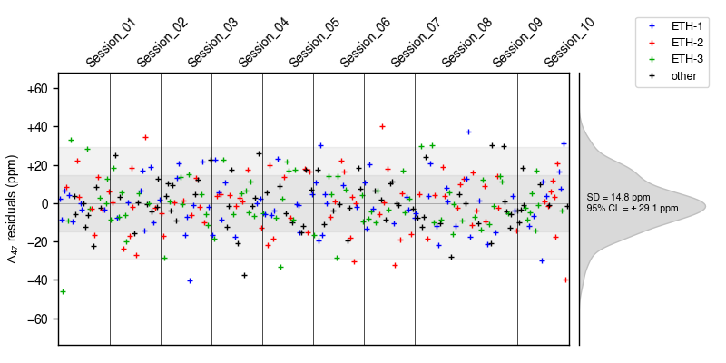

D47crunch
Standardization and analytical error propagation of Δ47 and Δ48 clumped-isotope measurements
Process and standardize carbonate and/or CO2 clumped-isotope analyses, from low-level data out of a dual-inlet mass spectrometer to final, “absolute” Δ47 and Δ48 values with fully propagated analytical error estimates (Daëron, 2021).
The tutorial section takes you through a series of simple steps to import/process data and print out the results. The how-to section provides instructions applicable to various specific tasks.
1. Tutorial
1.1 Installation
The easy option is to use pip; open a shell terminal and simply type:
python -m pip install D47crunch
For those wishing to experiment with the bleeding-edge development version, this can be done through the following steps:
- Download the
devbranch source code here and rename it toD47crunch.py. - Do any of the following:
- copy
D47crunch.pyto somewhere in your Python path - copy
D47crunch.pyto a working directory (import D47crunchwill only work if called within that directory) - copy
D47crunch.pyto any other location (e.g.,/foo/bar) and then use the following code snippet in your own code to importD47crunch:
- copy
import sys
sys.path.append('/foo/bar')
import D47crunch
Documentation for the development version can be downloaded here (save html file and open it locally).
1.2 Usage
Start by creating a file named rawdata.csv with the following contents:
UID, Sample, d45, d46, d47, d48, d49
A01, ETH-1, 5.79502, 11.62767, 16.89351, 24.56708, 0.79486
A02, MYSAMPLE-1, 6.21907, 11.49107, 17.27749, 24.58270, 1.56318
A03, ETH-2, -6.05868, -4.81718, -11.63506, -10.32578, 0.61352
A04, MYSAMPLE-2, -3.86184, 4.94184, 0.60612, 10.52732, 0.57118
A05, ETH-3, 5.54365, 12.05228, 17.40555, 25.96919, 0.74608
A06, ETH-2, -6.06706, -4.87710, -11.69927, -10.64421, 1.61234
A07, ETH-1, 5.78821, 11.55910, 16.80191, 24.56423, 1.47963
A08, MYSAMPLE-2, -3.87692, 4.86889, 0.52185, 10.40390, 1.07032
Then instantiate a D47data object which will store and process this data:
import D47crunch
mydata = D47crunch.D47data()
For now, this object is empty:
>>> print(mydata)
[]
To load the analyses saved in rawdata.csv into our D47data object and process the data:
mydata.read('rawdata.csv')
# compute δ13C, δ18O of working gas:
mydata.wg()
# compute δ13C, δ18O, raw Δ47 values for each analysis:
mydata.crunch()
# compute absolute Δ47 values for each analysis
# as well as average Δ47 values for each sample:
mydata.standardize()
We can now print a summary of the data processing:
>>> mydata.summary(verbose = True, save_to_file = False)
[summary]
––––––––––––––––––––––––––––––– –––––––––
N samples (anchors + unknowns) 5 (3 + 2)
N analyses (anchors + unknowns) 8 (5 + 3)
Repeatability of δ13C_VPDB 4.2 ppm
Repeatability of δ18O_VSMOW 47.5 ppm
Repeatability of Δ47 (anchors) 13.4 ppm
Repeatability of Δ47 (unknowns) 2.5 ppm
Repeatability of Δ47 (all) 9.6 ppm
Model degrees of freedom 3
Student's 95% t-factor 3.18
Standardization method pooled
––––––––––––––––––––––––––––––– –––––––––
This tells us that our data set contains 5 different samples: 3 anchors (ETH-1, ETH-2, ETH-3) and 2 unknowns (MYSAMPLE-1, MYSAMPLE-2). The total number of analyses is 8, with 5 anchor analyses and 3 unknown analyses. We get an estimate of the analytical repeatability (i.e. the overall, pooled standard deviation) for δ13C, δ18O and Δ47, as well as the number of degrees of freedom (here, 3) that these estimated standard deviations are based on, along with the corresponding Student's t-factor (here, 3.18) for 95 % confidence limits. Finally, the summary indicates that we used a “pooled” standardization approach (see [Daëron, 2021]).
To see the actual results:
>>> mydata.table_of_samples(verbose = True, save_to_file = False)
[table_of_samples]
–––––––––– – ––––––––– –––––––––– –––––– –––––– –––––––– –––––– ––––––––
Sample N d13C_VPDB d18O_VSMOW D47 SE 95% CL SD p_Levene
–––––––––– – ––––––––– –––––––––– –––––– –––––– –––––––– –––––– ––––––––
ETH-1 2 2.01 37.01 0.2052 0.0131
ETH-2 2 -10.17 19.88 0.2085 0.0026
ETH-3 1 1.73 37.49 0.6132
MYSAMPLE-1 1 2.48 36.90 0.2996 0.0091 ± 0.0291
MYSAMPLE-2 2 -8.17 30.05 0.6600 0.0115 ± 0.0366 0.0025
–––––––––– – ––––––––– –––––––––– –––––– –––––– –––––––– –––––– ––––––––
This table lists, for each sample, the number of analytical replicates, average δ13C and δ18O values (for the analyte CO2 , _not_ for the carbonate itself), the average Δ47 value and the SD of Δ47 for all replicates of this sample. For unknown samples, the SE and 95 % confidence limits for mean Δ47 are also listed These 95 % CL take into account the number of degrees of freedom of the regression model, so that in large datasets the 95 % CL will tend to 1.96 times the SE, but in this case the applicable t-factor is much larger.
We can also generate a table of all analyses in the data set (again, note that d18O_VSMOW is the composition of the CO2 analyte):
>>> mydata.table_of_analyses(verbose = True, save_to_file = False)
[table_of_analyses]
––– ––––––––– –––––––––– ––––––––––– –––––––––––– ––––––––– ––––––––– –––––––––– –––––––––– –––––––– –––––––––– –––––––––– ––––––––– ––––––––– –––––––––– ––––––––
UID Session Sample d13Cwg_VPDB d18Owg_VSMOW d45 d46 d47 d48 d49 d13C_VPDB d18O_VSMOW D47raw D48raw D49raw D47
––– ––––––––– –––––––––– ––––––––––– –––––––––––– ––––––––– ––––––––– –––––––––– –––––––––– –––––––– –––––––––– –––––––––– ––––––––– ––––––––– –––––––––– ––––––––
A01 mySession ETH-1 -3.807 24.921 5.795020 11.627670 16.893510 24.567080 0.794860 2.014086 37.041843 -0.574686 1.149684 -27.690250 0.214454
A02 mySession MYSAMPLE-1 -3.807 24.921 6.219070 11.491070 17.277490 24.582700 1.563180 2.476827 36.898281 -0.499264 1.435380 -27.122614 0.299589
A03 mySession ETH-2 -3.807 24.921 -6.058680 -4.817180 -11.635060 -10.325780 0.613520 -10.166796 19.907706 -0.685979 -0.721617 16.716901 0.206693
A04 mySession MYSAMPLE-2 -3.807 24.921 -3.861840 4.941840 0.606120 10.527320 0.571180 -8.159927 30.087230 -0.248531 0.613099 -4.979413 0.658270
A05 mySession ETH-3 -3.807 24.921 5.543650 12.052280 17.405550 25.969190 0.746080 1.727029 37.485567 -0.226150 1.678699 -28.280301 0.613200
A06 mySession ETH-2 -3.807 24.921 -6.067060 -4.877100 -11.699270 -10.644210 1.612340 -10.173599 19.845192 -0.683054 -0.922832 17.861363 0.210328
A07 mySession ETH-1 -3.807 24.921 5.788210 11.559100 16.801910 24.564230 1.479630 2.009281 36.970298 -0.591129 1.282632 -26.888335 0.195926
A08 mySession MYSAMPLE-2 -3.807 24.921 -3.876920 4.868890 0.521850 10.403900 1.070320 -8.173486 30.011134 -0.245768 0.636159 -4.324964 0.661803
––– ––––––––– –––––––––– ––––––––––– –––––––––––– ––––––––– ––––––––– –––––––––– –––––––––– –––––––– –––––––––– –––––––––– ––––––––– ––––––––– –––––––––– ––––––––
2. How-to
2.1 Simulate a virtual data set to play with
It is sometimes convenient to quickly build a virtual data set of analyses, for instance to assess the final analytical precision achievable for a given combination of anchor and unknown analyses (see also Fig. 6 of Daëron, 2021).
This can be achieved with virtual_data(). The example below creates a dataset with four sessions, each of which comprises four analyses of anchor ETH-1, five of ETH-2, six of ETH-3, and two analyses of an unknown sample named FOO with an arbitrarily defined isotopic composition. Analytical repeatabilities for Δ47 and Δ48 are also specified arbitrarily. See the virtual_data() documentation for additional configuration parameters.
from D47crunch import *
args = dict(
samples = [
dict(Sample = 'ETH-1', N = 4),
dict(Sample = 'ETH-2', N = 5),
dict(Sample = 'ETH-3', N = 6),
dict(
Sample = 'FOO',
N = 2,
d13C_VPDB = -5.,
d18O_VPDB = -10.,
D47 = 0.3,
D48 = 0.15
),
],
rD47 = 0.010,
rD48 = 0.030,
)
session1 = virtual_data(session = 'Session_01', **args)
session2 = virtual_data(session = 'Session_02', **args)
session3 = virtual_data(session = 'Session_03', **args)
session4 = virtual_data(session = 'Session_04', **args)
D = D47data(session1 + session2 + session3 + session4)
D.crunch()
D.standardize()
D.table_of_sessions(verbose = True, save_to_file = False)
D.table_of_samples(verbose = True, save_to_file = False)
D.table_of_analyses(verbose = True, save_to_file = False)
2.2 Control data quality
D47crunch offers several tools to visualize processed data. The examples below use the same virtual data set, generated with:
from D47crunch import *
from random import shuffle
# generate virtual data:
args = dict(
samples = [
dict(Sample = 'ETH-1', N = 8),
dict(Sample = 'ETH-2', N = 8),
dict(Sample = 'ETH-3', N = 8),
dict(Sample = 'FOO', N = 4,
d13C_VPDB = -5., d18O_VPDB = -10.,
D47 = 0.3, D48 = 0.15),
dict(Sample = 'BAR', N = 4,
d13C_VPDB = -15., d18O_VPDB = -15.,
D47 = 0.5, D48 = 0.2),
])
sessions = [
virtual_data(session = f'Session_{k+1:02.0f}', seed = int('1234567890'[:k+1]), **args)
for k in range(10)]
# shuffle the data:
data = [r for s in sessions for r in s]
shuffle(data)
data = sorted(data, key = lambda r: r['Session'])
# create D47data instance:
data47 = D47data(data)
# process D47data instance:
data47.crunch()
data47.standardize()
2.1.1 Plotting the distribution of analyses through time
data47.plot_distribution_of_analyses(filename = 'time_distribution.pdf')
The plot above shows the succession of analyses as if they were all distributed at regular time intervals. See D4xdata.plot_distribution_of_analyses() for how to plot analyses as a function of “true” time (based on the TimeTag for each analysis).
2.1.2 Generating session plots
data47.plot_sessions()
Below is one of the resulting sessions plots. Each cross marker is an analysis. Anchors are in red and unknowns in blue. Short horizontal lines show the nominal Δ47 value for anchors, in red, or the average Δ47 value for unknowns, in blue (overall average for all sessions). Curved grey contours correspond to Δ47 standardization errors in this session.

2.1.3 Plotting Δ47 or Δ48 residuals
data47.plot_residuals(filename = 'residuals.pdf')

Again, note that this plot only shows the succession of analyses as if they were all distributed at regular time intervals.
2.3 Use a different set of anchors, change anchor nominal values, and/or change 17O correction parameters
Nominal values for various carbonate standards are defined in four places:
D4xdata.Nominal_d13C_VPDBD4xdata.Nominal_d18O_VPDBD47data.Nominal_D4x(also accessible throughD47data.Nominal_D47)D48data.Nominal_D4x(also accessible throughD48data.Nominal_D48)
17O correction parameters are defined by:
D4xdata.R13_VPDBD4xdata.R18_VSMOWD4xdata.R18_VPDBD4xdata.LAMBDA_17D4xdata.R17_VSMOWD4xdata.R17_VPDB
When creating a new instance of D47data or D48data, the current values of these variables are copied as properties of the new object. Applying custom values for, e.g., R17_VSMOW and Nominal_D47 can thus be done in several ways:
Option 1: by redefining D4xdata.R17_VSMOW and D47data.Nominal_D47 _before_ creating a D47data object:
from D47crunch import D4xdata, D47data
# redefine R17_VSMOW:
D4xdata.R17_VSMOW = 0.00037 # new value
# redefine R17_VPDB for consistency:
D4xdata.R17_VPDB = D4xdata.R17_VSMOW * (D4xdata.R18_VPDB/D4xdata.R18_VSMOW) ** D4xdata.LAMBDA_17
# edit Nominal_D47 to only include ETH-1/2/3:
D47data.Nominal_D4x = {
a: D47data.Nominal_D4x[a]
for a in ['ETH-1', 'ETH-2', 'ETH-3']
}
# redefine ETH-3:
D47data.Nominal_D4x['ETH-3'] = 0.600
# only now create D47data object:
mydata = D47data()
# check the results:
print(mydata.R17_VSMOW, mydata.R17_VPDB)
print(mydata.Nominal_D47)
# NB: mydata.Nominal_D47 is just an alias for mydata.Nominal_D4x
# should print out:
# 0.00037 0.00037599710894149464
# {'ETH-1': 0.2052, 'ETH-2': 0.2085, 'ETH-3': 0.6}
Option 2: by redefining R17_VSMOW and Nominal_D47 _after_ creating a D47data object:
from D47crunch import D47data
# first create D47data object:
mydata = D47data()
# redefine R17_VSMOW:
mydata.R17_VSMOW = 0.00037 # new value
# redefine R17_VPDB for consistency:
mydata.R17_VPDB = mydata.R17_VSMOW * (mydata.R18_VPDB/mydata.R18_VSMOW) ** mydata.LAMBDA_17
# edit Nominal_D47 to only include ETH-1/2/3:
mydata.Nominal_D47 = {
a: mydata.Nominal_D47[a]
for a in ['ETH-1', 'ETH-2', 'ETH-3']
}
# redefine ETH-3:
mydata.Nominal_D47['ETH-3'] = 0.600
# check the results:
print(mydata.R17_VSMOW, mydata.R17_VPDB)
print(mydata.Nominal_D47)
# should print out:
# 0.00037 0.00037599710894149464
# {'ETH-1': 0.2052, 'ETH-2': 0.2085, 'ETH-3': 0.6}
The two options above are equivalent, but the latter provides a simple way to compare different data processing choices:
from D47crunch import D47data
# create two D47data objects:
foo = D47data()
bar = D47data()
# modify foo in various ways:
foo.LAMBDA_17 = 0.52
foo.R17_VSMOW = 0.00037 # new value
foo.R17_VPDB = foo.R17_VSMOW * (foo.R18_VPDB/foo.R18_VSMOW) ** foo.LAMBDA_17
foo.Nominal_D47 = {
'ETH-1': foo.Nominal_D47['ETH-1'],
'ETH-2': foo.Nominal_D47['ETH-1'],
'IAEA-C2': foo.Nominal_D47['IAEA-C2'],
'INLAB_REF_MATERIAL': 0.666,
}
# now import the same raw data into foo and bar:
foo.read('rawdata.csv')
foo.wg() # compute δ13C, δ18O of working gas
foo.crunch() # compute all δ13C, δ18O and raw Δ47 values
foo.standardize() # compute absolute Δ47 values
bar.read('rawdata.csv')
bar.wg() # compute δ13C, δ18O of working gas
bar.crunch() # compute all δ13C, δ18O and raw Δ47 values
bar.standardize() # compute absolute Δ47 values
# and compare the final results:
foo.table_of_samples(verbose = True, save_to_file = False)
bar.table_of_samples(verbose = True, save_to_file = False)
2.4 Process paired Δ47 and Δ48 values
Purely in terms of data processing, it is not obvious why Δ47 and Δ48 data should not be handled separately. For now, D47crunch uses two independent classes — D47data and D48data — which crunch numbers and deal with standardization in very similar ways. The following example demonstrates how to print out combined outputs for D47data and D48data.
from D47crunch import *
# generate virtual data:
args = dict(
samples = [
dict(Sample = 'ETH-1', N = 3),
dict(Sample = 'ETH-2', N = 3),
dict(Sample = 'ETH-3', N = 3),
dict(Sample = 'FOO', N = 3,
d13C_VPDB = -5., d18O_VPDB = -10.,
D47 = 0.3, D48 = 0.15),
], rD47 = 0.010, rD48 = 0.030)
session1 = virtual_data(session = 'Session_01', **args)
session2 = virtual_data(session = 'Session_02', **args)
# create D47data instance:
data47 = D47data(session1 + session2)
# process D47data instance:
data47.crunch()
data47.standardize()
# create D48data instance:
data48 = D48data(data47) # alternatively: data48 = D48data(session1 + session2)
# process D48data instance:
data48.crunch()
data48.standardize()
# output combined results:
table_of_sessions(data47, data48)
table_of_samples(data47, data48)
table_of_analyses(data47, data48)
Expected output:
–––––––––– –– –– ––––––––––– –––––––––––– –––––– –––––– –––––– ––––––––––––– ––––––––––––––– –––––––––––––– –––––– ––––––––––––– ––––––––––––––– ––––––––––––––
Session Na Nu d13Cwg_VPDB d18Owg_VSMOW r_d13C r_d18O r_D47 a_47 ± SE 1e3 x b_47 ± SE c_47 ± SE r_D48 a_48 ± SE 1e3 x b_48 ± SE c_48 ± SE
–––––––––– –– –– ––––––––––– –––––––––––– –––––– –––––– –––––– ––––––––––––– ––––––––––––––– –––––––––––––– –––––– ––––––––––––– ––––––––––––––– ––––––––––––––
Session_01 9 3 -4.000 26.000 0.0000 0.0000 0.0098 1.021 ± 0.019 -0.398 ± 0.260 -0.903 ± 0.006 0.0486 0.540 ± 0.151 1.235 ± 0.607 -0.390 ± 0.025
Session_02 9 3 -4.000 26.000 0.0000 0.0000 0.0090 1.015 ± 0.019 0.376 ± 0.260 -0.905 ± 0.006 0.0186 1.350 ± 0.156 -0.871 ± 0.608 -0.504 ± 0.027
–––––––––– –– –– ––––––––––– –––––––––––– –––––– –––––– –––––– ––––––––––––– ––––––––––––––– –––––––––––––– –––––– ––––––––––––– ––––––––––––––– ––––––––––––––
–––––– – ––––––––– –––––––––– –––––– –––––– –––––––– –––––– –––––––– –––––– –––––– –––––––– –––––– ––––––––
Sample N d13C_VPDB d18O_VSMOW D47 SE 95% CL SD p_Levene D48 SE 95% CL SD p_Levene
–––––– – ––––––––– –––––––––– –––––– –––––– –––––––– –––––– –––––––– –––––– –––––– –––––––– –––––– ––––––––
ETH-1 6 2.02 37.02 0.2052 0.0078 0.1380 0.0223
ETH-2 6 -10.17 19.88 0.2085 0.0036 0.1380 0.0482
ETH-3 6 1.71 37.45 0.6132 0.0080 0.2700 0.0176
FOO 6 -5.00 28.91 0.3026 0.0044 ± 0.0093 0.0121 0.164 0.1397 0.0121 ± 0.0255 0.0267 0.127
–––––– – ––––––––– –––––––––– –––––– –––––– –––––––– –––––– –––––––– –––––– –––––– –––––––– –––––– ––––––––
––– –––––––––– –––––– ––––––––––– –––––––––––– ––––––––– ––––––––– –––––––––– –––––––––– –––––––––– –––––––––– –––––––––– ––––––––– ––––––––– ––––––––– –––––––– ––––––––
UID Session Sample d13Cwg_VPDB d18Owg_VSMOW d45 d46 d47 d48 d49 d13C_VPDB d18O_VSMOW D47raw D48raw D49raw D47 D48
––– –––––––––– –––––– ––––––––––– –––––––––––– ––––––––– ––––––––– –––––––––– –––––––––– –––––––––– –––––––––– –––––––––– ––––––––– ––––––––– ––––––––– –––––––– ––––––––
1 Session_01 ETH-1 -4.000 26.000 6.018962 10.747026 16.120787 21.286237 27.780042 2.020000 37.024281 -0.708176 -0.316435 -0.000013 0.197297 0.087763
2 Session_01 ETH-1 -4.000 26.000 6.018962 10.747026 16.132240 21.307795 27.780042 2.020000 37.024281 -0.696913 -0.295333 -0.000013 0.208328 0.126791
3 Session_01 ETH-1 -4.000 26.000 6.018962 10.747026 16.132438 21.313884 27.780042 2.020000 37.024281 -0.696718 -0.289374 -0.000013 0.208519 0.137813
4 Session_01 ETH-2 -4.000 26.000 -5.995859 -5.976076 -12.700300 -12.210735 -18.023381 -10.170000 19.875825 -0.683938 -0.297902 -0.000002 0.209785 0.198705
5 Session_01 ETH-2 -4.000 26.000 -5.995859 -5.976076 -12.707421 -12.270781 -18.023381 -10.170000 19.875825 -0.691145 -0.358673 -0.000002 0.202726 0.086308
6 Session_01 ETH-2 -4.000 26.000 -5.995859 -5.976076 -12.700061 -12.278310 -18.023381 -10.170000 19.875825 -0.683696 -0.366292 -0.000002 0.210022 0.072215
7 Session_01 ETH-3 -4.000 26.000 5.742374 11.161270 16.684379 22.225827 28.306614 1.710000 37.450394 -0.273094 -0.216392 -0.000014 0.623472 0.270873
8 Session_01 ETH-3 -4.000 26.000 5.742374 11.161270 16.660163 22.233729 28.306614 1.710000 37.450394 -0.296906 -0.208664 -0.000014 0.600150 0.285167
9 Session_01 ETH-3 -4.000 26.000 5.742374 11.161270 16.675191 22.215632 28.306614 1.710000 37.450394 -0.282128 -0.226363 -0.000014 0.614623 0.252432
10 Session_01 FOO -4.000 26.000 -0.840413 2.828738 1.328380 5.374933 4.665655 -5.000000 28.907344 -0.582131 -0.288924 -0.000006 0.314928 0.175105
11 Session_01 FOO -4.000 26.000 -0.840413 2.828738 1.302220 5.384454 4.665655 -5.000000 28.907344 -0.608241 -0.279457 -0.000006 0.289356 0.192614
12 Session_01 FOO -4.000 26.000 -0.840413 2.828738 1.322530 5.372841 4.665655 -5.000000 28.907344 -0.587970 -0.291004 -0.000006 0.309209 0.171257
13 Session_02 ETH-1 -4.000 26.000 6.018962 10.747026 16.140853 21.267202 27.780042 2.020000 37.024281 -0.688442 -0.335067 -0.000013 0.207730 0.138730
14 Session_02 ETH-1 -4.000 26.000 6.018962 10.747026 16.127087 21.256983 27.780042 2.020000 37.024281 -0.701980 -0.345071 -0.000013 0.194396 0.131311
15 Session_02 ETH-1 -4.000 26.000 6.018962 10.747026 16.148253 21.287779 27.780042 2.020000 37.024281 -0.681165 -0.314926 -0.000013 0.214898 0.153668
16 Session_02 ETH-2 -4.000 26.000 -5.995859 -5.976076 -12.715859 -12.204791 -18.023381 -10.170000 19.875825 -0.699685 -0.291887 -0.000002 0.207349 0.149128
17 Session_02 ETH-2 -4.000 26.000 -5.995859 -5.976076 -12.709763 -12.188685 -18.023381 -10.170000 19.875825 -0.693516 -0.275587 -0.000002 0.213426 0.161217
18 Session_02 ETH-2 -4.000 26.000 -5.995859 -5.976076 -12.715427 -12.253049 -18.023381 -10.170000 19.875825 -0.699249 -0.340727 -0.000002 0.207780 0.112907
19 Session_02 ETH-3 -4.000 26.000 5.742374 11.161270 16.685994 22.249463 28.306614 1.710000 37.450394 -0.271506 -0.193275 -0.000014 0.618328 0.244431
20 Session_02 ETH-3 -4.000 26.000 5.742374 11.161270 16.681351 22.298166 28.306614 1.710000 37.450394 -0.276071 -0.145641 -0.000014 0.613831 0.279758
21 Session_02 ETH-3 -4.000 26.000 5.742374 11.161270 16.676169 22.306848 28.306614 1.710000 37.450394 -0.281167 -0.137150 -0.000014 0.608813 0.286056
22 Session_02 FOO -4.000 26.000 -0.840413 2.828738 1.324359 5.339497 4.665655 -5.000000 28.907344 -0.586144 -0.324160 -0.000006 0.314015 0.136535
23 Session_02 FOO -4.000 26.000 -0.840413 2.828738 1.297658 5.325854 4.665655 -5.000000 28.907344 -0.612794 -0.337727 -0.000006 0.287767 0.126473
24 Session_02 FOO -4.000 26.000 -0.840413 2.828738 1.310185 5.339898 4.665655 -5.000000 28.907344 -0.600291 -0.323761 -0.000006 0.300082 0.136830
––– –––––––––– –––––– ––––––––––– –––––––––––– ––––––––– ––––––––– –––––––––– –––––––––– –––––––––– –––––––––– –––––––––– ––––––––– ––––––––– ––––––––– –––––––– ––––––––
View Source
#! /usr/bin/env python3 ''' Standardization and analytical error propagation of Δ47 and Δ48 clumped-isotope measurements Process and standardize carbonate and/or CO<sub>2</sub> clumped-isotope analyses, from low-level data out of a dual-inlet mass spectrometer to final, “absolute” Δ<sub>47</sub> and Δ<sub>48</sub> values with fully propagated analytical error estimates ([Daëron, 2021](https://doi.org/10.1029/2020GC009592)). The **tutorial** section takes you through a series of simple steps to import/process data and print out the results. The **how-to** section provides instructions applicable to various specific tasks. .. include:: ../docs/tutorial.md .. include:: ../docs/howto.md ''' __docformat__ = "restructuredtext" __author__ = 'Mathieu Daëron' __contact__ = 'daeron@lsce.ipsl.fr' __copyright__ = 'Copyright (c) 2021 Mathieu Daëron' __license__ = 'Modified BSD License - https://opensource.org/licenses/BSD-3-Clause' __date__ = '2021-08-08' __version__ = '2.0.1' import os import numpy as np from statistics import stdev from scipy.stats import t as tstudent from scipy.stats import levene from scipy.interpolate import interp1d from numpy import linalg from lmfit import Minimizer, Parameters, report_fit from matplotlib import pyplot as ppl from datetime import datetime as dt from functools import wraps from colorsys import hls_to_rgb from matplotlib import rcParams rcParams['font.family'] = 'sans-serif' rcParams['font.sans-serif'] = 'Helvetica' rcParams['font.size'] = 10 rcParams['mathtext.fontset'] = 'custom' rcParams['mathtext.rm'] = 'sans' rcParams['mathtext.bf'] = 'sans:bold' rcParams['mathtext.it'] = 'sans:italic' rcParams['mathtext.cal'] = 'sans:italic' rcParams['mathtext.default'] = 'rm' rcParams['xtick.major.size'] = 4 rcParams['xtick.major.width'] = 1 rcParams['ytick.major.size'] = 4 rcParams['ytick.major.width'] = 1 rcParams['axes.grid'] = False rcParams['axes.linewidth'] = 1 rcParams['grid.linewidth'] = .75 rcParams['grid.linestyle'] = '-' rcParams['grid.alpha'] = .15 rcParams['savefig.dpi'] = 150 Petersen_etal_CO2eqD47 = np.array([[-12, 1.147113572], [-11, 1.139961218], [-10, 1.132872856], [-9, 1.125847677], [-8, 1.118884889], [-7, 1.111983708], [-6, 1.105143366], [-5, 1.098363105], [-4, 1.091642182], [-3, 1.084979862], [-2, 1.078375423], [-1, 1.071828156], [0, 1.065337360], [1, 1.058902349], [2, 1.052522443], [3, 1.046196976], [4, 1.039925291], [5, 1.033706741], [6, 1.027540690], [7, 1.021426510], [8, 1.015363585], [9, 1.009351306], [10, 1.003389075], [11, 0.997476303], [12, 0.991612409], [13, 0.985796821], [14, 0.980028975], [15, 0.974308318], [16, 0.968634304], [17, 0.963006392], [18, 0.957424055], [19, 0.951886769], [20, 0.946394020], [21, 0.940945302], [22, 0.935540114], [23, 0.930177964], [24, 0.924858369], [25, 0.919580851], [26, 0.914344938], [27, 0.909150167], [28, 0.903996080], [29, 0.898882228], [30, 0.893808167], [31, 0.888773459], [32, 0.883777672], [33, 0.878820382], [34, 0.873901170], [35, 0.869019623], [36, 0.864175334], [37, 0.859367901], [38, 0.854596929], [39, 0.849862028], [40, 0.845162813], [41, 0.840498905], [42, 0.835869931], [43, 0.831275522], [44, 0.826715314], [45, 0.822188950], [46, 0.817696075], [47, 0.813236341], [48, 0.808809404], [49, 0.804414926], [50, 0.800052572], [51, 0.795722012], [52, 0.791422922], [53, 0.787154979], [54, 0.782917869], [55, 0.778711277], [56, 0.774534898], [57, 0.770388426], [58, 0.766271562], [59, 0.762184010], [60, 0.758125479], [61, 0.754095680], [62, 0.750094329], [63, 0.746121147], [64, 0.742175856], [65, 0.738258184], [66, 0.734367860], [67, 0.730504620], [68, 0.726668201], [69, 0.722858343], [70, 0.719074792], [71, 0.715317295], [72, 0.711585602], [73, 0.707879469], [74, 0.704198652], [75, 0.700542912], [76, 0.696912012], [77, 0.693305719], [78, 0.689723802], [79, 0.686166034], [80, 0.682632189], [81, 0.679122047], [82, 0.675635387], [83, 0.672171994], [84, 0.668731654], [85, 0.665314156], [86, 0.661919291], [87, 0.658546854], [88, 0.655196641], [89, 0.651868451], [90, 0.648562087], [91, 0.645277352], [92, 0.642014054], [93, 0.638771999], [94, 0.635551001], [95, 0.632350872], [96, 0.629171428], [97, 0.626012487], [98, 0.622873870], [99, 0.619755397], [100, 0.616656895], [102, 0.610519107], [104, 0.604459143], [106, 0.598475670], [108, 0.592567388], [110, 0.586733026], [112, 0.580971342], [114, 0.575281125], [116, 0.569661187], [118, 0.564110371], [120, 0.558627545], [122, 0.553211600], [124, 0.547861454], [126, 0.542576048], [128, 0.537354347], [130, 0.532195337], [132, 0.527098028], [134, 0.522061450], [136, 0.517084654], [138, 0.512166711], [140, 0.507306712], [142, 0.502503768], [144, 0.497757006], [146, 0.493065573], [148, 0.488428634], [150, 0.483845370], [152, 0.479314980], [154, 0.474836677], [156, 0.470409692], [158, 0.466033271], [160, 0.461706674], [162, 0.457429176], [164, 0.453200067], [166, 0.449018650], [168, 0.444884242], [170, 0.440796174], [172, 0.436753787], [174, 0.432756438], [176, 0.428803494], [178, 0.424894334], [180, 0.421028350], [182, 0.417204944], [184, 0.413423530], [186, 0.409683531], [188, 0.405984383], [190, 0.402325531], [192, 0.398706429], [194, 0.395126543], [196, 0.391585347], [198, 0.388082324], [200, 0.384616967], [202, 0.381188778], [204, 0.377797268], [206, 0.374441954], [208, 0.371122364], [210, 0.367838033], [212, 0.364588505], [214, 0.361373329], [216, 0.358192065], [218, 0.355044277], [220, 0.351929540], [222, 0.348847432], [224, 0.345797540], [226, 0.342779460], [228, 0.339792789], [230, 0.336837136], [232, 0.333912113], [234, 0.331017339], [236, 0.328152439], [238, 0.325317046], [240, 0.322510795], [242, 0.319733329], [244, 0.316984297], [246, 0.314263352], [248, 0.311570153], [250, 0.308904364], [252, 0.306265654], [254, 0.303653699], [256, 0.301068176], [258, 0.298508771], [260, 0.295975171], [262, 0.293467070], [264, 0.290984167], [266, 0.288526163], [268, 0.286092765], [270, 0.283683684], [272, 0.281298636], [274, 0.278937339], [276, 0.276599517], [278, 0.274284898], [280, 0.271993211], [282, 0.269724193], [284, 0.267477582], [286, 0.265253121], [288, 0.263050554], [290, 0.260869633], [292, 0.258710110], [294, 0.256571741], [296, 0.254454286], [298, 0.252357508], [300, 0.250281174], [302, 0.248225053], [304, 0.246188917], [306, 0.244172542], [308, 0.242175707], [310, 0.240198194], [312, 0.238239786], [314, 0.236300272], [316, 0.234379441], [318, 0.232477087], [320, 0.230593005], [322, 0.228726993], [324, 0.226878853], [326, 0.225048388], [328, 0.223235405], [330, 0.221439711], [332, 0.219661118], [334, 0.217899439], [336, 0.216154491], [338, 0.214426091], [340, 0.212714060], [342, 0.211018220], [344, 0.209338398], [346, 0.207674420], [348, 0.206026115], [350, 0.204393315], [355, 0.200378063], [360, 0.196456139], [365, 0.192625077], [370, 0.188882487], [375, 0.185226048], [380, 0.181653511], [385, 0.178162694], [390, 0.174751478], [395, 0.171417807], [400, 0.168159686], [405, 0.164975177], [410, 0.161862398], [415, 0.158819521], [420, 0.155844772], [425, 0.152936426], [430, 0.150092806], [435, 0.147312286], [440, 0.144593281], [445, 0.141934254], [450, 0.139333710], [455, 0.136790195], [460, 0.134302294], [465, 0.131868634], [470, 0.129487876], [475, 0.127158722], [480, 0.124879906], [485, 0.122650197], [490, 0.120468398], [495, 0.118333345], [500, 0.116243903], [505, 0.114198970], [510, 0.112197471], [515, 0.110238362], [520, 0.108320625], [525, 0.106443271], [530, 0.104605335], [535, 0.102805877], [540, 0.101043985], [545, 0.099318768], [550, 0.097629359], [555, 0.095974915], [560, 0.094354612], [565, 0.092767650], [570, 0.091213248], [575, 0.089690648], [580, 0.088199108], [585, 0.086737906], [590, 0.085306341], [595, 0.083903726], [600, 0.082529395], [605, 0.081182697], [610, 0.079862998], [615, 0.078569680], [620, 0.077302141], [625, 0.076059794], [630, 0.074842066], [635, 0.073648400], [640, 0.072478251], [645, 0.071331090], [650, 0.070206399], [655, 0.069103674], [660, 0.068022424], [665, 0.066962168], [670, 0.065922439], [675, 0.064902780], [680, 0.063902748], [685, 0.062921909], [690, 0.061959837], [695, 0.061016122], [700, 0.060090360], [705, 0.059182157], [710, 0.058291131], [715, 0.057416907], [720, 0.056559120], [725, 0.055717414], [730, 0.054891440], [735, 0.054080860], [740, 0.053285343], [745, 0.052504565], [750, 0.051738210], [755, 0.050985971], [760, 0.050247546], [765, 0.049522643], [770, 0.048810974], [775, 0.048112260], [780, 0.047426227], [785, 0.046752609], [790, 0.046091145], [795, 0.045441581], [800, 0.044803668], [805, 0.044177164], [810, 0.043561831], [815, 0.042957438], [820, 0.042363759], [825, 0.041780573], [830, 0.041207664], [835, 0.040644822], [840, 0.040091839], [845, 0.039548516], [850, 0.039014654], [855, 0.038490063], [860, 0.037974554], [865, 0.037467944], [870, 0.036970054], [875, 0.036480707], [880, 0.035999734], [885, 0.035526965], [890, 0.035062238], [895, 0.034605393], [900, 0.034156272], [905, 0.033714724], [910, 0.033280598], [915, 0.032853749], [920, 0.032434032], [925, 0.032021309], [930, 0.031615443], [935, 0.031216300], [940, 0.030823749], [945, 0.030437663], [950, 0.030057915], [955, 0.029684385], [960, 0.029316951], [965, 0.028955498], [970, 0.028599910], [975, 0.028250075], [980, 0.027905884], [985, 0.027567229], [990, 0.027234006], [995, 0.026906112], [1000, 0.026583445], [1005, 0.026265908], [1010, 0.025953405], [1015, 0.025645841], [1020, 0.025343124], [1025, 0.025045163], [1030, 0.024751871], [1035, 0.024463160], [1040, 0.024178947], [1045, 0.023899147], [1050, 0.023623680], [1055, 0.023352467], [1060, 0.023085429], [1065, 0.022822491], [1070, 0.022563577], [1075, 0.022308615], [1080, 0.022057533], [1085, 0.021810260], [1090, 0.021566729], [1095, 0.021326872], [1100, 0.021090622]]) _fCO2eqD47_Petersen = interp1d(Petersen_etal_CO2eqD47[:,0], Petersen_etal_CO2eqD47[:,1]) def fCO2eqD47_Petersen(T): ''' CO<sub>2</sub> equilibrium Δ<sub>47</sub> value as a function of T (in degrees C) according to [Petersen et al. (2019)](https://doi.org/10.1029/2018GC008127). ''' return float(_fCO2eqD47_Petersen(T)) Wang_etal_CO2eqD47 = np.array([[-83., 1.8954], [-73., 1.7530], [-63., 1.6261], [-53., 1.5126], [-43., 1.4104], [-33., 1.3182], [-23., 1.2345], [-13., 1.1584], [-3., 1.0888], [7., 1.0251], [17., 0.9665], [27., 0.9125], [37., 0.8626], [47., 0.8164], [57., 0.7734], [67., 0.7334], [87., 0.6612], [97., 0.6286], [107., 0.5980], [117., 0.5693], [127., 0.5423], [137., 0.5169], [147., 0.4930], [157., 0.4704], [167., 0.4491], [177., 0.4289], [187., 0.4098], [197., 0.3918], [207., 0.3747], [217., 0.3585], [227., 0.3431], [237., 0.3285], [247., 0.3147], [257., 0.3015], [267., 0.2890], [277., 0.2771], [287., 0.2657], [297., 0.2550], [307., 0.2447], [317., 0.2349], [327., 0.2256], [337., 0.2167], [347., 0.2083], [357., 0.2002], [367., 0.1925], [377., 0.1851], [387., 0.1781], [397., 0.1714], [407., 0.1650], [417., 0.1589], [427., 0.1530], [437., 0.1474], [447., 0.1421], [457., 0.1370], [467., 0.1321], [477., 0.1274], [487., 0.1229], [497., 0.1186], [507., 0.1145], [517., 0.1105], [527., 0.1068], [537., 0.1031], [547., 0.0997], [557., 0.0963], [567., 0.0931], [577., 0.0901], [587., 0.0871], [597., 0.0843], [607., 0.0816], [617., 0.0790], [627., 0.0765], [637., 0.0741], [647., 0.0718], [657., 0.0695], [667., 0.0674], [677., 0.0654], [687., 0.0634], [697., 0.0615], [707., 0.0597], [717., 0.0579], [727., 0.0562], [737., 0.0546], [747., 0.0530], [757., 0.0515], [767., 0.0500], [777., 0.0486], [787., 0.0472], [797., 0.0459], [807., 0.0447], [817., 0.0435], [827., 0.0423], [837., 0.0411], [847., 0.0400], [857., 0.0390], [867., 0.0380], [877., 0.0370], [887., 0.0360], [897., 0.0351], [907., 0.0342], [917., 0.0333], [927., 0.0325], [937., 0.0317], [947., 0.0309], [957., 0.0302], [967., 0.0294], [977., 0.0287], [987., 0.0281], [997., 0.0274], [1007., 0.0268], [1017., 0.0261], [1027., 0.0255], [1037., 0.0249], [1047., 0.0244], [1057., 0.0238], [1067., 0.0233], [1077., 0.0228], [1087., 0.0223], [1097., 0.0218]]) _fCO2eqD47_Wang = interp1d(Wang_etal_CO2eqD47[:,0] - 0.15, Wang_etal_CO2eqD47[:,1]) def fCO2eqD47_Wang(T): ''' CO<sub>2</sub> equilibrium Δ<sub>47</sub> value as a function of `T` (in degrees C) according to [Wang et al. (2004)](https://doi.org/10.1016/j.gca.2004.05.039) (supplementary data of [Dennis et al., 2011](https://doi.org/10.1016/j.gca.2011.09.025)). ''' return float(_fCO2eqD47_Wang(T)) def correlated_sum(X, C, w = None): ''' Compute covariance-aware linear combinations **Parameters** + `X`: list or 1-D array of values to sum + `C`: covariance matrix for the elements of `X` + `w`: list or 1-D array of weights to apply to the elements of `X` (all equal to 1 by default) Return the sum (and its SE) of the elements of `X`, with optional weights equal to the elements of `w`, accounting for covariances between the elements of `X`. ''' if w is None: w = [1 for x in X] return np.dot(w,X), (np.dot(w,np.dot(C,w)))**.5 def make_csv(x, hsep = ',', vsep = '\n'): ''' Formats a list of lists of strings as a CSV **Parameters** + `x`: the list of lists of strings to format + `hsep`: the field separator (`,` by default) + `vsep`: the line-ending convention to use (`\\n` by default) **Example** ```py print(make_csv([['a', 'b', 'c'], ['d', 'e', 'f']])) ``` outputs: ```py a,b,c d,e,f ``` ''' return vsep.join([hsep.join(l) for l in x]) def pf(txt): ''' Modify string `txt` to follow `lmfit.Parameter()` naming rules. ''' return txt.replace('-','_').replace('.','_').replace(' ','_') def smart_type(x): ''' Tries to convert string `x` to a float if it includes a decimal point, or to an integer if it does not. If both attempts fail, return the original string unchanged. ''' try: y = float(x) except ValueError: return x if '.' not in x: return int(y) return y def pretty_table(x, header = 1, hsep = ' ', vsep = '–', align = '<'): ''' Reads a list of lists of strings and outputs an ascii table **Parameters** + `x`: a list of lists of strings + `header`: the number of lines to treat as header lines + `hsep`: the horizontal separator between columns + `vsep`: the character to use as vertical separator + `align`: string of left (`<`) or right (`>`) alignment characters. **Example** ```py x = [['A', 'B', 'C'], ['1', '1.9999', 'foo'], ['10', 'x', 'bar']] print(pretty_table(x)) ``` yields: ``` -- ------ --- A B C -- ------ --- 1 1.9999 foo 10 x bar -- ------ --- ``` ''' txt = [] widths = [np.max([len(e) for e in c]) for c in zip(*x)] if len(widths) > len(align): align += '>' * (len(widths)-len(align)) sepline = hsep.join([vsep*w for w in widths]) txt += [sepline] for k,l in enumerate(x): if k and k == header: txt += [sepline] txt += [hsep.join([f'{e:{a}{w}}' for e, w, a in zip(l, widths, align)])] txt += [sepline] txt += [''] return '\n'.join(txt) def transpose_table(x): ''' Transpose a list if lists **Parameters** + `x`: a list of lists **Example** ```py x = [[1, 2], [3, 4]] print(transpose_table(x)) # yields: [[1, 3], [2, 4]] ``` ''' return [[e for e in c] for c in zip(*x)] def w_avg(X, sX) : ''' Compute variance-weighted average Returns the value and SE of the weighted average of the elements of `X`, with relative weights equal to their inverse variances (`1/sX**2`). **Parameters** + `X`: array-like of elements to average + `sX`: array-like of the corresponding SE values **Tip** If `X` and `sX` are initially arranged as a list of `(x, sx)` doublets, they may be rearranged using `zip()`: ```python foo = [(0, 1), (1, 0.5), (2, 0.5)] print(w_avg(*zip(*foo))) # yields: (1.3333333333333333, 0.3333333333333333) ``` ''' X = [ x for x in X ] sX = [ sx for sx in sX ] W = [ sx**-2 for sx in sX ] W = [ w/sum(W) for w in W ] Xavg = sum([ w*x for w,x in zip(W,X) ]) sXavg = sum([ w**2*sx**2 for w,sx in zip(W,sX) ])**.5 return Xavg, sXavg def read_csv(filename, sep = ''): ''' Read contents of `filename` in csv format and return a list of dictionaries. In the csv string, spaces before and after field separators (`','` by default) are optional. **Parameters** + `filename`: the csv file to read + `sep`: csv separator delimiting the fields. By default, use `,`, `;`, or `\t`, whichever appers most often in the contents of `filename`. ''' with open(filename) as fid: txt = fid.read() if sep == '': sep = sorted(',;\t', key = lambda x: - txt.count(x))[0] txt = [[x.strip() for x in l.split(sep)] for l in txt.splitlines() if l.strip()] return [{k: smart_type(v) for k,v in zip(txt[0], l) if v} for l in txt[1:]] def simulate_single_analysis( sample = 'MYSAMPLE', d13Cwg_VPDB = -4., d18Owg_VSMOW = 26., d13C_VPDB = None, d18O_VPDB = None, D47 = None, D48 = None, D49 = 0., D17O = 0., a47 = 1., b47 = 0., c47 = -0.9, a48 = 1., b48 = 0., c48 = -0.45, Nominal_D47 = None, Nominal_D48 = None, Nominal_d13C_VPDB = None, Nominal_d18O_VPDB = None, ALPHA_18O_ACID_REACTION = None, R13_VPDB = None, R17_VSMOW = None, R18_VSMOW = None, LAMBDA_17 = None, R18_VPDB = None, ): ''' Compute working-gas delta values for a single analysis, assuming a stochastic working gas and a “perfect” measurement (i.e. raw Δ values are identical to absolute values). **Parameters** + `sample`: sample name + `d13Cwg_VPDB`, `d18Owg_VSMOW`: bulk composition of the working gas (respectively –4 and +26 ‰ by default) + `d13C_VPDB`, `d18O_VPDB`: bulk composition of the carbonate sample + `D47`, `D48`, `D49`, `D17O`: clumped-isotope and oxygen-17 anomalies of the carbonate sample + `Nominal_D47`, `Nominal_D48`: where to lookup Δ<sub>47</sub> and Δ<sub>48</sub> values if `D47` or `D48` are not specified + `Nominal_d13C_VPDB`, `Nominal_d18O_VPDB`: where to lookup δ<sup>13</sup>C and δ<sup>18</sup>O values if `d13C_VPDB` or `d18O_VPDB` are not specified + `ALPHA_18O_ACID_REACTION`: <sup>18</sup>O/<sup>16</sup>O acid fractionation factor + `R13_VPDB`, `R17_VSMOW`, `R18_VSMOW`, `LAMBDA_17`, `R18_VPDB`: oxygen-17 correction parameters (by default equal to the `D4xdata` default values) Returns a dictionary with fields `['Sample', 'D17O', 'd13Cwg_VPDB', 'd18Owg_VSMOW', 'd45', 'd46', 'd47', 'd48', 'd49']`. ''' if Nominal_d13C_VPDB is None: Nominal_d13C_VPDB = D4xdata().Nominal_d13C_VPDB if Nominal_d18O_VPDB is None: Nominal_d18O_VPDB = D4xdata().Nominal_d18O_VPDB if ALPHA_18O_ACID_REACTION is None: ALPHA_18O_ACID_REACTION = D4xdata().ALPHA_18O_ACID_REACTION if R13_VPDB is None: R13_VPDB = D4xdata().R13_VPDB if R17_VSMOW is None: R17_VSMOW = D4xdata().R17_VSMOW if R18_VSMOW is None: R18_VSMOW = D4xdata().R18_VSMOW if LAMBDA_17 is None: LAMBDA_17 = D4xdata().LAMBDA_17 if R18_VPDB is None: R18_VPDB = D4xdata().R18_VPDB R17_VPDB = R17_VSMOW * (R18_VPDB / R18_VSMOW) ** LAMBDA_17 if Nominal_D47 is None: Nominal_D47 = D47data().Nominal_D47 if Nominal_D48 is None: Nominal_D48 = D48data().Nominal_D48 if d13C_VPDB is None: if sample in Nominal_d13C_VPDB: d13C_VPDB = Nominal_d13C_VPDB[sample] else: raise KeyError(f"Sample {sample} is missing d13C_VDP value, and it is not defined in Nominal_d13C_VDP.") if d18O_VPDB is None: if sample in Nominal_d18O_VPDB: d18O_VPDB = Nominal_d18O_VPDB[sample] else: raise KeyError(f"Sample {sample} is missing d18O_VPDB value, and it is not defined in Nominal_d18O_VPDB.") if D47 is None: if sample in Nominal_D47: D47 = Nominal_D47[sample] else: raise KeyError(f"Sample {sample} is missing D47 value, and it is not defined in Nominal_D47.") if D48 is None: if sample in Nominal_D48: D48 = Nominal_D48[sample] else: raise KeyError(f"Sample {sample} is missing D48 value, and it is not defined in Nominal_D48.") X = D4xdata() X.R13_VPDB = R13_VPDB X.R17_VSMOW = R17_VSMOW X.R18_VSMOW = R18_VSMOW X.LAMBDA_17 = LAMBDA_17 X.R18_VPDB = R18_VPDB X.R17_VPDB = R17_VSMOW * (R18_VPDB / R18_VSMOW)**LAMBDA_17 R45wg, R46wg, R47wg, R48wg, R49wg = X.compute_isobar_ratios( R13 = R13_VPDB * (1 + d13Cwg_VPDB/1000), R18 = R18_VSMOW * (1 + d18Owg_VSMOW/1000), ) R45, R46, R47, R48, R49 = X.compute_isobar_ratios( R13 = R13_VPDB * (1 + d13C_VPDB/1000), R18 = R18_VPDB * (1 + d18O_VPDB/1000) * ALPHA_18O_ACID_REACTION, D17O=D17O, D47=D47, D48=D48, D49=D49, ) R45stoch, R46stoch, R47stoch, R48stoch, R49stoch = X.compute_isobar_ratios( R13 = R13_VPDB * (1 + d13C_VPDB/1000), R18 = R18_VPDB * (1 + d18O_VPDB/1000) * ALPHA_18O_ACID_REACTION, D17O=D17O, ) d45 = 1000 * (R45/R45wg - 1) d46 = 1000 * (R46/R46wg - 1) d47 = 1000 * (R47/R47wg - 1) d48 = 1000 * (R48/R48wg - 1) d49 = 1000 * (R49/R49wg - 1) for k in range(3): # dumb iteration to adjust for small changes in d47 R47raw = (1 + (a47 * D47 + b47 * d47 + c47)/1000) * R47stoch R48raw = (1 + (a48 * D48 + b48 * d48 + c48)/1000) * R48stoch d47 = 1000 * (R47raw/R47wg - 1) d48 = 1000 * (R48raw/R48wg - 1) return dict( Sample = sample, D17O = D17O, d13Cwg_VPDB = d13Cwg_VPDB, d18Owg_VSMOW = d18Owg_VSMOW, d45 = d45, d46 = d46, d47 = d47, d48 = d48, d49 = d49, ) def virtual_data( samples = [], a47 = 1., b47 = 0., c47 = -0.9, a48 = 1., b48 = 0., c48 = -0.45, rD47 = 0.015, rD48 = 0.045, d13Cwg_VPDB = None, d18Owg_VSMOW = None, session = None, Nominal_D47 = None, Nominal_D48 = None, Nominal_d13C_VPDB = None, Nominal_d18O_VPDB = None, ALPHA_18O_ACID_REACTION = None, R13_VPDB = None, R17_VSMOW = None, R18_VSMOW = None, LAMBDA_17 = None, R18_VPDB = None, seed = 0, ): ''' Return list with simulated analyses from a single session. **Parameters** + `samples`: a list of entries; each entry is a dictionary with the following fields: * `Sample`: the name of the sample * `d13C_VPDB`, `d18O_VPDB`: bulk composition of the carbonate sample * `D47`, `D48`, `D49`, `D17O` (all optional): clumped-isotope and oxygen-17 anomalies of the carbonate sample * `N`: how many analyses to generate for this sample + `a47`: scrambling factor for Δ<sub>47</sub> + `b47`: compositional nonlinearity for Δ<sub>47</sub> + `c47`: working gas offset for Δ<sub>47</sub> + `a48`: scrambling factor for Δ<sub>48</sub> + `b48`: compositional nonlinearity for Δ<sub>48</sub> + `c48`: working gas offset for Δ<sub>48</sub> + `rD47`: analytical repeatability of Δ<sub>47</sub> + `rD48`: analytical repeatability of Δ<sub>48</sub> + `d13Cwg_VPDB`, `d18Owg_VSMOW`: bulk composition of the working gas (by default equal to the `simulate_single_analysis` default values) + `session`: name of the session (no name by default) + `Nominal_D47`, `Nominal_D48`: where to lookup Δ<sub>47</sub> and Δ<sub>48</sub> values if `D47` or `D48` are not specified (by default equal to the `simulate_single_analysis` defaults) + `Nominal_d13C_VPDB`, `Nominal_d18O_VPDB`: where to lookup δ<sup>13</sup>C and δ<sup>18</sup>O values if `d13C_VPDB` or `d18O_VPDB` are not specified (by default equal to the `simulate_single_analysis` defaults) + `ALPHA_18O_ACID_REACTION`: <sup>18</sup>O/<sup>16</sup>O acid fractionation factor (by default equal to the `simulate_single_analysis` defaults) + `R13_VPDB`, `R17_VSMOW`, `R18_VSMOW`, `LAMBDA_17`, `R18_VPDB`: oxygen-17 correction parameters (by default equal to the `simulate_single_analysis` default) + `seed`: explicitly set to a non-zero value to achieve random but repeatable simulations Here is an example of using this method to generate an arbitrary combination of anchors and unknowns for a bunch of sessions: ```py args = dict( samples = [ dict(Sample = 'ETH-1', N = 4), dict(Sample = 'ETH-2', N = 5), dict(Sample = 'ETH-3', N = 6), dict(Sample = 'FOO', N = 2, d13C_VPDB = -5., d18O_VPDB = -10., D47 = 0.3, D48 = 0.15), ], rD47 = 0.010, rD48 = 0.030) session1 = virtual_data(session = 'Session_01', **args, seed = 123) session2 = virtual_data(session = 'Session_02', **args, seed = 1234) session3 = virtual_data(session = 'Session_03', **args, seed = 12345) session4 = virtual_data(session = 'Session_04', **args, seed = 123456) D = D47data(session1 + session2 + session3 + session4) D.crunch() D.standardize() D.table_of_sessions(verbose = True, save_to_file = False) D.table_of_samples(verbose = True, save_to_file = False) D.table_of_analyses(verbose = True, save_to_file = False) ``` This should output something like: ``` [table_of_sessions] –––––––––– –– –– ––––––––––– –––––––––––– –––––– –––––– –––––– ––––––––––––– –––––––––––––– –––––––––––––– Session Na Nu d13Cwg_VPDB d18Owg_VSMOW r_d13C r_d18O r_D47 a ± SE 1e3 x b ± SE c ± SE –––––––––– –– –– ––––––––––– –––––––––––– –––––– –––––– –––––– ––––––––––––– –––––––––––––– –––––––––––––– Session_01 15 2 -4.000 26.000 0.0000 0.0000 0.0110 0.997 ± 0.017 -0.097 ± 0.244 -0.896 ± 0.006 Session_02 15 2 -4.000 26.000 0.0000 0.0000 0.0109 1.002 ± 0.017 -0.110 ± 0.244 -0.901 ± 0.006 Session_03 15 2 -4.000 26.000 0.0000 0.0000 0.0107 1.010 ± 0.017 -0.037 ± 0.244 -0.904 ± 0.006 Session_04 15 2 -4.000 26.000 0.0000 0.0000 0.0106 1.001 ± 0.017 -0.181 ± 0.244 -0.894 ± 0.006 –––––––––– –– –– ––––––––––– –––––––––––– –––––– –––––– –––––– ––––––––––––– –––––––––––––– –––––––––––––– [table_of_samples] –––––– –– ––––––––– –––––––––– –––––– –––––– –––––––– –––––– –––––––– Sample N d13C_VPDB d18O_VSMOW D47 SE 95% CL SD p_Levene –––––– –– ––––––––– –––––––––– –––––– –––––– –––––––– –––––– –––––––– ETH-1 16 2.02 37.02 0.2052 0.0079 ETH-2 20 -10.17 19.88 0.2085 0.0100 ETH-3 24 1.71 37.45 0.6132 0.0105 FOO 8 -5.00 28.91 0.2989 0.0040 ± 0.0080 0.0101 0.638 –––––– –– ––––––––– –––––––––– –––––– –––––– –––––––– –––––– –––––––– [table_of_analyses] ––– –––––––––– –––––– ––––––––––– –––––––––––– ––––––––– ––––––––– –––––––––– –––––––––– –––––––––– –––––––––– –––––––––– ––––––––– ––––––––– ––––––––– –––––––– UID Session Sample d13Cwg_VPDB d18Owg_VSMOW d45 d46 d47 d48 d49 d13C_VPDB d18O_VSMOW D47raw D48raw D49raw D47 ––– –––––––––– –––––– ––––––––––– –––––––––––– ––––––––– ––––––––– –––––––––– –––––––––– –––––––––– –––––––––– –––––––––– ––––––––– ––––––––– ––––––––– –––––––– 1 Session_01 ETH-1 -4.000 26.000 6.018962 10.747026 16.122986 21.273526 27.780042 2.020000 37.024281 -0.706013 -0.328878 -0.000013 0.192554 2 Session_01 ETH-1 -4.000 26.000 6.018962 10.747026 16.130144 21.282615 27.780042 2.020000 37.024281 -0.698974 -0.319981 -0.000013 0.199615 3 Session_01 ETH-1 -4.000 26.000 6.018962 10.747026 16.149219 21.299572 27.780042 2.020000 37.024281 -0.680215 -0.303383 -0.000013 0.218429 4 Session_01 ETH-1 -4.000 26.000 6.018962 10.747026 16.136616 21.233128 27.780042 2.020000 37.024281 -0.692609 -0.368421 -0.000013 0.205998 5 Session_01 ETH-2 -4.000 26.000 -5.995859 -5.976076 -12.697171 -12.203054 -18.023381 -10.170000 19.875825 -0.680771 -0.290128 -0.000002 0.215054 6 Session_01 ETH-2 -4.000 26.000 -5.995859 -5.976076 -12.701124 -12.184422 -18.023381 -10.170000 19.875825 -0.684772 -0.271272 -0.000002 0.211041 7 Session_01 ETH-2 -4.000 26.000 -5.995859 -5.976076 -12.715105 -12.195251 -18.023381 -10.170000 19.875825 -0.698923 -0.282232 -0.000002 0.196848 8 Session_01 ETH-2 -4.000 26.000 -5.995859 -5.976076 -12.701529 -12.204963 -18.023381 -10.170000 19.875825 -0.685182 -0.292061 -0.000002 0.210630 9 Session_01 ETH-2 -4.000 26.000 -5.995859 -5.976076 -12.711420 -12.228478 -18.023381 -10.170000 19.875825 -0.695193 -0.315859 -0.000002 0.200589 10 Session_01 ETH-3 -4.000 26.000 5.742374 11.161270 16.666719 22.296486 28.306614 1.710000 37.450394 -0.290459 -0.147284 -0.000014 0.609363 11 Session_01 ETH-3 -4.000 26.000 5.742374 11.161270 16.671553 22.291060 28.306614 1.710000 37.450394 -0.285706 -0.152592 -0.000014 0.614130 12 Session_01 ETH-3 -4.000 26.000 5.742374 11.161270 16.652854 22.273271 28.306614 1.710000 37.450394 -0.304093 -0.169990 -0.000014 0.595689 13 Session_01 ETH-3 -4.000 26.000 5.742374 11.161270 16.684168 22.263156 28.306614 1.710000 37.450394 -0.273302 -0.179883 -0.000014 0.626572 14 Session_01 ETH-3 -4.000 26.000 5.742374 11.161270 16.662702 22.253578 28.306614 1.710000 37.450394 -0.294409 -0.189251 -0.000014 0.605401 15 Session_01 ETH-3 -4.000 26.000 5.742374 11.161270 16.681957 22.230907 28.306614 1.710000 37.450394 -0.275476 -0.211424 -0.000014 0.624391 16 Session_01 FOO -4.000 26.000 -0.840413 2.828738 1.312044 5.395798 4.665655 -5.000000 28.907344 -0.598436 -0.268176 -0.000006 0.298996 17 Session_01 FOO -4.000 26.000 -0.840413 2.828738 1.328123 5.307086 4.665655 -5.000000 28.907344 -0.582387 -0.356389 -0.000006 0.315092 18 Session_02 ETH-1 -4.000 26.000 6.018962 10.747026 16.122201 21.340606 27.780042 2.020000 37.024281 -0.706785 -0.263217 -0.000013 0.195135 19 Session_02 ETH-1 -4.000 26.000 6.018962 10.747026 16.134868 21.305714 27.780042 2.020000 37.024281 -0.694328 -0.297370 -0.000013 0.207564 20 Session_02 ETH-1 -4.000 26.000 6.018962 10.747026 16.140008 21.261931 27.780042 2.020000 37.024281 -0.689273 -0.340227 -0.000013 0.212607 21 Session_02 ETH-1 -4.000 26.000 6.018962 10.747026 16.135540 21.298472 27.780042 2.020000 37.024281 -0.693667 -0.304459 -0.000013 0.208224 22 Session_02 ETH-2 -4.000 26.000 -5.995859 -5.976076 -12.701213 -12.202602 -18.023381 -10.170000 19.875825 -0.684862 -0.289671 -0.000002 0.213842 23 Session_02 ETH-2 -4.000 26.000 -5.995859 -5.976076 -12.685649 -12.190405 -18.023381 -10.170000 19.875825 -0.669108 -0.277327 -0.000002 0.229559 24 Session_02 ETH-2 -4.000 26.000 -5.995859 -5.976076 -12.719003 -12.257955 -18.023381 -10.170000 19.875825 -0.702869 -0.345692 -0.000002 0.195876 25 Session_02 ETH-2 -4.000 26.000 -5.995859 -5.976076 -12.700592 -12.204641 -18.023381 -10.170000 19.875825 -0.684233 -0.291735 -0.000002 0.214469 26 Session_02 ETH-2 -4.000 26.000 -5.995859 -5.976076 -12.720426 -12.214561 -18.023381 -10.170000 19.875825 -0.704308 -0.301774 -0.000002 0.194439 27 Session_02 ETH-3 -4.000 26.000 5.742374 11.161270 16.673044 22.262090 28.306614 1.710000 37.450394 -0.284240 -0.180926 -0.000014 0.616730 28 Session_02 ETH-3 -4.000 26.000 5.742374 11.161270 16.666542 22.263401 28.306614 1.710000 37.450394 -0.290634 -0.179643 -0.000014 0.610350 29 Session_02 ETH-3 -4.000 26.000 5.742374 11.161270 16.680487 22.243486 28.306614 1.710000 37.450394 -0.276921 -0.199121 -0.000014 0.624031 30 Session_02 ETH-3 -4.000 26.000 5.742374 11.161270 16.663900 22.245175 28.306614 1.710000 37.450394 -0.293231 -0.197469 -0.000014 0.607759 31 Session_02 ETH-3 -4.000 26.000 5.742374 11.161270 16.674379 22.301309 28.306614 1.710000 37.450394 -0.282927 -0.142568 -0.000014 0.618039 32 Session_02 ETH-3 -4.000 26.000 5.742374 11.161270 16.660825 22.270466 28.306614 1.710000 37.450394 -0.296255 -0.172733 -0.000014 0.604742 33 Session_02 FOO -4.000 26.000 -0.840413 2.828738 1.294076 5.349940 4.665655 -5.000000 28.907344 -0.616369 -0.313776 -0.000006 0.283707 34 Session_02 FOO -4.000 26.000 -0.840413 2.828738 1.313775 5.292121 4.665655 -5.000000 28.907344 -0.596708 -0.371269 -0.000006 0.303323 35 Session_03 ETH-1 -4.000 26.000 6.018962 10.747026 16.121613 21.259909 27.780042 2.020000 37.024281 -0.707364 -0.342207 -0.000013 0.194934 36 Session_03 ETH-1 -4.000 26.000 6.018962 10.747026 16.145714 21.304889 27.780042 2.020000 37.024281 -0.683661 -0.298178 -0.000013 0.218401 37 Session_03 ETH-1 -4.000 26.000 6.018962 10.747026 16.126573 21.325093 27.780042 2.020000 37.024281 -0.702485 -0.278401 -0.000013 0.199764 38 Session_03 ETH-1 -4.000 26.000 6.018962 10.747026 16.132057 21.323211 27.780042 2.020000 37.024281 -0.697092 -0.280244 -0.000013 0.205104 39 Session_03 ETH-2 -4.000 26.000 -5.995859 -5.976076 -12.708448 -12.232023 -18.023381 -10.170000 19.875825 -0.692185 -0.319447 -0.000002 0.208915 40 Session_03 ETH-2 -4.000 26.000 -5.995859 -5.976076 -12.714417 -12.202504 -18.023381 -10.170000 19.875825 -0.698226 -0.289572 -0.000002 0.202934 41 Session_03 ETH-2 -4.000 26.000 -5.995859 -5.976076 -12.720039 -12.264469 -18.023381 -10.170000 19.875825 -0.703917 -0.352285 -0.000002 0.197300 42 Session_03 ETH-2 -4.000 26.000 -5.995859 -5.976076 -12.701953 -12.228550 -18.023381 -10.170000 19.875825 -0.685611 -0.315932 -0.000002 0.215423 43 Session_03 ETH-2 -4.000 26.000 -5.995859 -5.976076 -12.704535 -12.213634 -18.023381 -10.170000 19.875825 -0.688224 -0.300836 -0.000002 0.212837 44 Session_03 ETH-3 -4.000 26.000 5.742374 11.161270 16.652920 22.230043 28.306614 1.710000 37.450394 -0.304028 -0.212269 -0.000014 0.594265 45 Session_03 ETH-3 -4.000 26.000 5.742374 11.161270 16.691485 22.261017 28.306614 1.710000 37.450394 -0.266106 -0.181975 -0.000014 0.631810 46 Session_03 ETH-3 -4.000 26.000 5.742374 11.161270 16.679119 22.305357 28.306614 1.710000 37.450394 -0.278266 -0.138609 -0.000014 0.619771 47 Session_03 ETH-3 -4.000 26.000 5.742374 11.161270 16.663623 22.327286 28.306614 1.710000 37.450394 -0.293503 -0.117161 -0.000014 0.604685 48 Session_03 ETH-3 -4.000 26.000 5.742374 11.161270 16.678524 22.282103 28.306614 1.710000 37.450394 -0.278851 -0.161352 -0.000014 0.619192 49 Session_03 ETH-3 -4.000 26.000 5.742374 11.161270 16.666246 22.283361 28.306614 1.710000 37.450394 -0.290925 -0.160121 -0.000014 0.607238 50 Session_03 FOO -4.000 26.000 -0.840413 2.828738 1.309929 5.340249 4.665655 -5.000000 28.907344 -0.600546 -0.323413 -0.000006 0.300148 51 Session_03 FOO -4.000 26.000 -0.840413 2.828738 1.317548 5.334102 4.665655 -5.000000 28.907344 -0.592942 -0.329524 -0.000006 0.307676 52 Session_04 ETH-1 -4.000 26.000 6.018962 10.747026 16.136865 21.300298 27.780042 2.020000 37.024281 -0.692364 -0.302672 -0.000013 0.204033 53 Session_04 ETH-1 -4.000 26.000 6.018962 10.747026 16.133538 21.291260 27.780042 2.020000 37.024281 -0.695637 -0.311519 -0.000013 0.200762 54 Session_04 ETH-1 -4.000 26.000 6.018962 10.747026 16.139991 21.319865 27.780042 2.020000 37.024281 -0.689290 -0.283519 -0.000013 0.207107 55 Session_04 ETH-1 -4.000 26.000 6.018962 10.747026 16.145748 21.330075 27.780042 2.020000 37.024281 -0.683629 -0.273524 -0.000013 0.212766 56 Session_04 ETH-2 -4.000 26.000 -5.995859 -5.976076 -12.702989 -12.202762 -18.023381 -10.170000 19.875825 -0.686660 -0.289833 -0.000002 0.204507 57 Session_04 ETH-2 -4.000 26.000 -5.995859 -5.976076 -12.692830 -12.240287 -18.023381 -10.170000 19.875825 -0.676377 -0.327811 -0.000002 0.214786 58 Session_04 ETH-2 -4.000 26.000 -5.995859 -5.976076 -12.702899 -12.180291 -18.023381 -10.170000 19.875825 -0.686568 -0.267091 -0.000002 0.204598 59 Session_04 ETH-2 -4.000 26.000 -5.995859 -5.976076 -12.709282 -12.282257 -18.023381 -10.170000 19.875825 -0.693029 -0.370287 -0.000002 0.198140 60 Session_04 ETH-2 -4.000 26.000 -5.995859 -5.976076 -12.679330 -12.235994 -18.023381 -10.170000 19.875825 -0.662712 -0.323466 -0.000002 0.228446 61 Session_04 ETH-3 -4.000 26.000 5.742374 11.161270 16.695594 22.238663 28.306614 1.710000 37.450394 -0.262066 -0.203838 -0.000014 0.634200 62 Session_04 ETH-3 -4.000 26.000 5.742374 11.161270 16.663504 22.286354 28.306614 1.710000 37.450394 -0.293620 -0.157194 -0.000014 0.602656 63 Session_04 ETH-3 -4.000 26.000 5.742374 11.161270 16.666457 22.254290 28.306614 1.710000 37.450394 -0.290717 -0.188555 -0.000014 0.605558 64 Session_04 ETH-3 -4.000 26.000 5.742374 11.161270 16.666910 22.223232 28.306614 1.710000 37.450394 -0.290271 -0.218930 -0.000014 0.606004 65 Session_04 ETH-3 -4.000 26.000 5.742374 11.161270 16.679662 22.257256 28.306614 1.710000 37.450394 -0.277732 -0.185653 -0.000014 0.618539 66 Session_04 ETH-3 -4.000 26.000 5.742374 11.161270 16.676768 22.267680 28.306614 1.710000 37.450394 -0.280578 -0.175459 -0.000014 0.615693 67 Session_04 FOO -4.000 26.000 -0.840413 2.828738 1.307663 5.317330 4.665655 -5.000000 28.907344 -0.602808 -0.346202 -0.000006 0.290853 68 Session_04 FOO -4.000 26.000 -0.840413 2.828738 1.308562 5.331400 4.665655 -5.000000 28.907344 -0.601911 -0.332212 -0.000006 0.291749 ––– –––––––––– –––––– ––––––––––– –––––––––––– ––––––––– ––––––––– –––––––––– –––––––––– –––––––––– –––––––––– –––––––––– ––––––––– ––––––––– ––––––––– –––––––– ``` ''' kwargs = locals().copy() from numpy import random as nprandom if seed: rng = nprandom.default_rng(seed) else: rng = nprandom.default_rng() N = sum([s['N'] for s in samples]) errors47 = rng.normal(loc = 0, scale = 1, size = N) # generate random measurement errors errors47 *= rD47 / stdev(errors47) # scale errors to rD47 errors48 = rng.normal(loc = 0, scale = 1, size = N) # generate random measurement errors errors48 *= rD48 / stdev(errors48) # scale errors to rD48 k = 0 out = [] for s in samples: kw = {} kw['sample'] = s['Sample'] kw = { **kw, **{var: kwargs[var] for var in [ 'd13Cwg_VPDB', 'd18Owg_VSMOW', 'ALPHA_18O_ACID_REACTION', 'Nominal_D47', 'Nominal_D48', 'Nominal_d13C_VPDB', 'Nominal_d18O_VPDB', 'R13_VPDB', 'R17_VSMOW', 'R18_VSMOW', 'LAMBDA_17', 'R18_VPDB', 'a47', 'b47', 'c47', 'a48', 'b48', 'c48', ] if kwargs[var] is not None}, **{var: s[var] for var in ['d13C_VPDB', 'd18O_VPDB', 'D47', 'D48', 'D49', 'D17O'] if var in s}, } sN = s['N'] while sN: out.append(simulate_single_analysis(**kw)) out[-1]['d47'] += errors47[k] * a47 out[-1]['d48'] += errors48[k] * a48 sN -= 1 k += 1 if session is not None: for r in out: r['Session'] = session return out def table_of_samples( data47 = None, data48 = None, dir = 'output', filename = None, save_to_file = True, print_out = True, output = None, ): ''' Print out, save to disk and/or return a combined table of samples for a pair of `D47data` and `D48data` objects. **Parameters** + `data47`: `D47data` instance + `data48`: `D48data` instance + `dir`: the directory in which to save the table + `filename`: the name to the csv file to write to + `save_to_file`: whether to save the table to disk + `print_out`: whether to print out the table + `output`: if set to `'pretty'`: return a pretty text table (see `pretty_table()`); if set to `'raw'`: return a list of list of strings (e.g., `[['header1', 'header2'], ['0.1', '0.2']]`) ''' if data47 is None: if data48 is None: raise TypeError("Arguments must include at least one D47data() or D48data() instance.") else: return data48.table_of_samples( dir = dir, filename = filename, save_to_file = save_to_file, print_out = print_out, output = output ) else: if data48 is None: return data47.table_of_samples( dir = dir, filename = filename, save_to_file = save_to_file, print_out = print_out, output = output ) else: out47 = data47.table_of_samples(save_to_file = False, print_out = False, output = 'raw') out48 = data48.table_of_samples(save_to_file = False, print_out = False, output = 'raw') out = transpose_table(transpose_table(out47) + transpose_table(out48)[4:]) if save_to_file: if not os.path.exists(dir): os.makedirs(dir) if filename is None: filename = f'D47D48_samples.csv' with open(f'{dir}/{filename}', 'w') as fid: fid.write(make_csv(out)) if print_out: print('\n'+pretty_table(out)) if output == 'raw': return out elif output == 'pretty': return pretty_table(out) def table_of_sessions( data47 = None, data48 = None, dir = 'output', filename = None, save_to_file = True, print_out = True, output = None, ): ''' Print out, save to disk and/or return a combined table of sessions for a pair of `D47data` and `D48data` objects. ***Only applicable if the sessions in `data47` and those in `data48` consist of the exact same sets of analyses.*** **Parameters** + `data47`: `D47data` instance + `data48`: `D48data` instance + `dir`: the directory in which to save the table + `filename`: the name to the csv file to write to + `save_to_file`: whether to save the table to disk + `print_out`: whether to print out the table + `output`: if set to `'pretty'`: return a pretty text table (see `pretty_table()`); if set to `'raw'`: return a list of list of strings (e.g., `[['header1', 'header2'], ['0.1', '0.2']]`) ''' if data47 is None: if data48 is None: raise TypeError("Arguments must include at least one D47data() or D48data() instance.") else: return data48.table_of_sessions( dir = dir, filename = filename, save_to_file = save_to_file, print_out = print_out, output = output ) else: if data48 is None: return data47.table_of_sessions( dir = dir, filename = filename, save_to_file = save_to_file, print_out = print_out, output = output ) else: out47 = data47.table_of_sessions(save_to_file = False, print_out = False, output = 'raw') out48 = data48.table_of_sessions(save_to_file = False, print_out = False, output = 'raw') for k,x in enumerate(out47[0]): if k>7: out47[0][k] = out47[0][k].replace('a', 'a_47').replace('b', 'b_47').replace('c', 'c_47') out48[0][k] = out48[0][k].replace('a', 'a_48').replace('b', 'b_48').replace('c', 'c_48') out = transpose_table(transpose_table(out47) + transpose_table(out48)[7:]) if save_to_file: if not os.path.exists(dir): os.makedirs(dir) if filename is None: filename = f'D47D48_sessions.csv' with open(f'{dir}/{filename}', 'w') as fid: fid.write(make_csv(out)) if print_out: print('\n'+pretty_table(out)) if output == 'raw': return out elif output == 'pretty': return pretty_table(out) def table_of_analyses( data47 = None, data48 = None, dir = 'output', filename = None, save_to_file = True, print_out = True, output = None, ): ''' Print out, save to disk and/or return a combined table of analyses for a pair of `D47data` and `D48data` objects. If the sessions in `data47` and those in `data48` do not consist of the exact same sets of analyses, the table will have two columns `Session_47` and `Session_48` instead of a single `Session` column. **Parameters** + `data47`: `D47data` instance + `data48`: `D48data` instance + `dir`: the directory in which to save the table + `filename`: the name to the csv file to write to + `save_to_file`: whether to save the table to disk + `print_out`: whether to print out the table + `output`: if set to `'pretty'`: return a pretty text table (see `pretty_table()`); if set to `'raw'`: return a list of list of strings (e.g., `[['header1', 'header2'], ['0.1', '0.2']]`) ''' if data47 is None: if data48 is None: raise TypeError("Arguments must include at least one D47data() or D48data() instance.") else: return data48.table_of_analyses( dir = dir, filename = filename, save_to_file = save_to_file, print_out = print_out, output = output ) else: if data48 is None: return data47.table_of_analyses( dir = dir, filename = filename, save_to_file = save_to_file, print_out = print_out, output = output ) else: out47 = data47.table_of_analyses(save_to_file = False, print_out = False, output = 'raw') out48 = data48.table_of_analyses(save_to_file = False, print_out = False, output = 'raw') if [l[1] for l in out47[1:]] == [l[1] for l in out48[1:]]: # if sessions are identical out = transpose_table(transpose_table(out47) + transpose_table(out48)[-1:]) else: out47[0][1] = 'Session_47' out48[0][1] = 'Session_48' out47 = transpose_table(out47) out48 = transpose_table(out48) out = transpose_table(out47[:2] + out48[1:2] + out47[2:] + out48[-1:]) if save_to_file: if not os.path.exists(dir): os.makedirs(dir) if filename is None: filename = f'D47D48_sessions.csv' with open(f'{dir}/{filename}', 'w') as fid: fid.write(make_csv(out)) if print_out: print('\n'+pretty_table(out)) if output == 'raw': return out elif output == 'pretty': return pretty_table(out) class D4xdata(list): ''' Store and process data for a large set of Δ<sub>47</sub> and/or Δ<sub>48</sub> analyses, usually comprising more than one analytical session. ''' ### 17O CORRECTION PARAMETERS R13_VPDB = 0.01118 # (Chang & Li, 1990) ''' Absolute (<sup>13</sup>C/<sup>12</sup>C) ratio of VPDB. By default equal to 0.01118 ([Chang & Li, 1990](http://www.cnki.com.cn/Article/CJFDTotal-JXTW199004006.htm)) ''' R18_VSMOW = 0.0020052 # (Baertschi, 1976) ''' Absolute (<sup>18</sup>O/<sup>16</sup>C) ratio of VSMOW. By default equal to 0.0020052 ([Baertschi, 1976](https://doi.org/10.1016/0012-821X(76)90115-1)) ''' LAMBDA_17 = 0.528 # (Barkan & Luz, 2005) ''' Mass-dependent exponent for triple oxygen isotopes. By default equal to 0.528 ([Barkan & Luz, 2005](https://doi.org/10.1002/rcm.2250)) ''' R17_VSMOW = 0.00038475 # (Assonov & Brenninkmeijer, 2003, rescaled to R13_VPDB) ''' Absolute (<sup>17</sup>O/<sup>16</sup>C) ratio of VSMOW. By default equal to 0.00038475 ([Assonov & Brenninkmeijer, 2003](https://dx.doi.org/10.1002/rcm.1011), rescaled to `R13_VPDB`) ''' R18_VPDB = R18_VSMOW * 1.03092 ''' Absolute (<sup>18</sup>O/<sup>16</sup>C) ratio of VPDB. By definition equal to `R18_VSMOW * 1.03092`. ''' R17_VPDB = R17_VSMOW * 1.03092 ** LAMBDA_17 ''' Absolute (<sup>17</sup>O/<sup>16</sup>C) ratio of VPDB. By definition equal to `R17_VSMOW * 1.03092 ** LAMBDA_17`. ''' LEVENE_REF_SAMPLE = 'ETH-3' ''' After the Δ<sub>4x</sub> standardization step, each sample is tested to assess whether the Δ<sub>4x</sub> variance within all analyses for that sample differs significantly from that observed for a given reference sample (using [Levene's test](https://en.wikipedia.org/wiki/Levene%27s_test), which yields a p-value corresponding to the null hypothesis that the underlying variances are equal). `LEVENE_REF_SAMPLE` (by default equal to `'ETH-3'`) specifies which sample should be used as a reference for this test. ''' ALPHA_18O_ACID_REACTION = round(np.exp(3.59 / (90 + 273.15) - 1.79e-3), 6) # (Kim et al., 2007, calcite) ''' Specifies the <sup>18</sup>O/<sup>16</sup>O fractionation factor generally applicable to acid reactions in the dataset. Currently used by `D4xdata.wg()`, `D4xdata.standardize_d13C`, and `D4xdata.standardize_d18O`. By default equal to 1.008129 (calcite reacted at 90 °C, [Kim et al., 2007](https://dx.doi.org/10.1016/j.chemgeo.2007.08.005)). ''' Nominal_d13C_VPDB = { 'ETH-1': 2.02, 'ETH-2': -10.17, 'ETH-3': 1.71, } # (Bernasconi et al., 2018) ''' Nominal δ<sup>13</sup>C<sub>VPDB</sub> values assigned to carbonate standards, used by `D4xdata.standardize_d13C()`. By default equal to `{'ETH-1': 2.02, 'ETH-2': -10.17, 'ETH-3': 1.71}` after [Bernasconi et al. (2018)](https://doi.org/10.1029/2017GC007385). ''' Nominal_d18O_VPDB = { 'ETH-1': -2.19, 'ETH-2': -18.69, 'ETH-3': -1.78, } # (Bernasconi et al., 2018) ''' Nominal δ<sup>18</sup>O<sub>VPDB</sub> values assigned to carbonate standards, used by `D4xdata.standardize_d18O()`. By default equal to `{'ETH-1': -2.19, 'ETH-2': -18.69, 'ETH-3': -1.78}` after [Bernasconi et al. (2018)](https://doi.org/10.1029/2017GC007385). ''' d13C_STANDARDIZATION_METHOD = '2pt' ''' Method by which to standardize δ<sup>13</sup>C values: + `none`: do not apply any δ<sup>13</sup>C standardization. + `'1pt'`: within each session, offset all initial δ<sup>13</sup>C values so as to minimize the difference between final δ<sup>13</sup>C<sub>VPDB</sub> values and `Nominal_d13C_VPDB` (averaged over all analyses for which `Nominal_d13C_VPDB` is defined). + `'2pt'`: within each session, apply a affine trasformation to all δ<sup>13</sup>C values so as to minimize the difference between final δ<sup>13</sup>C<sub>VPDB</sub> values and `Nominal_d13C_VPDB` (averaged over all analyses for which `Nominal_d13C_VPDB` is defined). ''' d18O_STANDARDIZATION_METHOD = '2pt' ''' Method by which to standardize δ<sup>18</sup>O values: + `none`: do not apply any δ<sup>18</sup>O standardization. + `'1pt'`: within each session, offset all initial δ<sup>18</sup>O values so as to minimize the difference between final δ<sup>18</sup>O<sub>VPDB</sub> values and `Nominal_d18O_VPDB` (averaged over all analyses for which `Nominal_d18O_VPDB` is defined). + `'2pt'`: within each session, apply a affine trasformation to all δ<sup>18</sup>O values so as to minimize the difference between final δ<sup>18</sup>O<sub>VPDB</sub> values and `Nominal_d18O_VPDB` (averaged over all analyses for which `Nominal_d18O_VPDB` is defined). ''' def __init__(self, l = [], mass = '47', logfile = '', session = 'mySession', verbose = False): ''' **Parameters** + `l`: a list of dictionaries, with each dictionary including at least the keys `Sample`, `d45`, `d46`, and `d47` or `d48`. + `logfile`: if specified, write detailed logs to this file path when calling `D4xdata` methods. + `session`: define session name for analyses without a `Session` key + `verbose`: if `True`, print out detailed logs when calling `D4xdata` methods. Returns a `D4xdata` object derived from `list`. ''' self._4x = mass self.verbose = verbose self.prefix = 'D4xdata' self.logfile = logfile list.__init__(self, l) self.Nf = None self.repeatability = {} self.refresh(session = session) def make_verbal(oldfun): ''' Decorator: allow temporarily changing `self.prefix` and overriding `self.verbose`. ''' @wraps(oldfun) def newfun(*args, verbose = '', **kwargs): myself = args[0] oldprefix = myself.prefix myself.prefix = oldfun.__name__ if verbose != '': oldverbose = myself.verbose myself.verbose = verbose out = oldfun(*args, **kwargs) myself.prefix = oldprefix if verbose != '': myself.verbose = oldverbose return out return newfun def msg(self, txt): ''' Log a message to `self.logfile`, and print it out if `verbose = True` ''' self.log(txt) if self.verbose: print(f'{f"[{self.prefix}]":<16} {txt}') def vmsg(self, txt): ''' Log a message to `self.logfile` and print it out ''' self.log(txt) print(txt) def log(self, *txts): ''' Log a message to `self.logfile` ''' if self.logfile: with open(self.logfile, 'a') as fid: for txt in txts: fid.write(f'\n{dt.now().strftime("%Y-%m-%d %H:%M:%S")} {f"[{self.prefix}]":<16} {txt}') def refresh(self, session = 'mySession'): ''' Update `self.sessions`, `self.samples`, `self.anchors`, and `self.unknowns`. ''' self.fill_in_missing_info(session = session) self.refresh_sessions() self.refresh_samples() def refresh_sessions(self): ''' Update `self.sessions` and set `scrambling_drift`, `slope_drift`, and `wg_drift` to `False` for all sessions. ''' self.sessions = { s: {'data': [r for r in self if r['Session'] == s]} for s in sorted({r['Session'] for r in self}) } for s in self.sessions: self.sessions[s]['scrambling_drift'] = False self.sessions[s]['slope_drift'] = False self.sessions[s]['wg_drift'] = False self.sessions[s]['d13C_standardization_method'] = self.d13C_STANDARDIZATION_METHOD self.sessions[s]['d18O_standardization_method'] = self.d18O_STANDARDIZATION_METHOD def refresh_samples(self): ''' Define `self.samples`, `self.anchors`, and `self.unknowns`. ''' self.samples = { s: {'data': [r for r in self if r['Sample'] == s]} for s in sorted({r['Sample'] for r in self}) } self.anchors = {s: self.samples[s] for s in self.samples if s in self.Nominal_D4x} self.unknowns = {s: self.samples[s] for s in self.samples if s not in self.Nominal_D4x} def read(self, filename, sep = '', session = ''): ''' Read file in csv format to load data into a `D47data` object. In the csv file, spaces before and after field separators (`','` by default) are optional. Each line corresponds to a single analysis. The required fields are: + `UID`: a unique identifier + `Session`: an identifier for the analytical session + `Sample`: a sample identifier + `d45`, `d46`, and at least one of `d47` or `d48`: the working-gas delta values Independently known oxygen-17 anomalies may be provided as `D17O` (in ‰ relative to VSMOW, λ = `self.LAMBDA_17`), and are otherwise assumed to be zero. Working-gas deltas `d47`, `d48` and `d49` are optional, and set to NaN by default. **Parameters** + `fileneme`: the path of the file to read + `sep`: csv separator delimiting the fields + `session`: set `Session` field to this string for all analyses ''' with open(filename) as fid: self.input(fid.read(), sep = sep, session = session) def input(self, txt, sep = '', session = ''): ''' Read `txt` string in csv format to load analysis data into a `D47data` object. In the csv string, spaces before and after field separators (`','` by default) are optional. Each line corresponds to a single analysis. The required fields are: + `UID`: a unique identifier + `Session`: an identifier for the analytical session + `Sample`: a sample identifier + `d45`, `d46`, and at least one of `d47` or `d48`: the working-gas delta values Independently known oxygen-17 anomalies may be provided as `D17O` (in ‰ relative to VSMOW, λ = `self.LAMBDA_17`), and are otherwise assumed to be zero. Working-gas deltas `d47`, `d48` and `d49` are optional, and set to NaN by default. **Parameters** + `txt`: the csv string to read + `sep`: csv separator delimiting the fields. By default, use `,`, `;`, or `\t`, whichever appers most often in `txt`. + `session`: set `Session` field to this string for all analyses ''' if sep == '': sep = sorted(',;\t', key = lambda x: - txt.count(x))[0] txt = [[x.strip() for x in l.split(sep)] for l in txt.splitlines() if l.strip()] data = [{k: v if k in ['UID', 'Session', 'Sample'] else smart_type(v) for k,v in zip(txt[0], l) if v != ''} for l in txt[1:]] if session != '': for r in data: r['Session'] = session self += data self.refresh() @make_verbal def wg(self, samples = None, a18_acid = None): ''' Compute bulk composition of the working gas for each session based on the carbonate standards defined in both `self.Nominal_d13C_VPDB` and `self.Nominal_d18O_VPDB`. ''' self.msg('Computing WG composition:') if a18_acid is None: a18_acid = self.ALPHA_18O_ACID_REACTION if samples is None: samples = [s for s in self.Nominal_d13C_VPDB if s in self.Nominal_d18O_VPDB] assert a18_acid, f'Acid fractionation factor should not be zero.' samples = [s for s in samples if s in self.Nominal_d13C_VPDB and s in self.Nominal_d18O_VPDB] R45R46_standards = {} for sample in samples: d13C_vpdb = self.Nominal_d13C_VPDB[sample] d18O_vpdb = self.Nominal_d18O_VPDB[sample] R13_s = self.R13_VPDB * (1 + d13C_vpdb / 1000) R17_s = self.R17_VPDB * ((1 + d18O_vpdb / 1000) * a18_acid) ** self.LAMBDA_17 R18_s = self.R18_VPDB * (1 + d18O_vpdb / 1000) * a18_acid C12_s = 1 / (1 + R13_s) C13_s = R13_s / (1 + R13_s) C16_s = 1 / (1 + R17_s + R18_s) C17_s = R17_s / (1 + R17_s + R18_s) C18_s = R18_s / (1 + R17_s + R18_s) C626_s = C12_s * C16_s ** 2 C627_s = 2 * C12_s * C16_s * C17_s C628_s = 2 * C12_s * C16_s * C18_s C636_s = C13_s * C16_s ** 2 C637_s = 2 * C13_s * C16_s * C17_s C727_s = C12_s * C17_s ** 2 R45_s = (C627_s + C636_s) / C626_s R46_s = (C628_s + C637_s + C727_s) / C626_s R45R46_standards[sample] = (R45_s, R46_s) for s in self.sessions: db = [r for r in self.sessions[s]['data'] if r['Sample'] in samples] assert db, f'No sample from {samples} found in session "{s}".' # dbsamples = sorted({r['Sample'] for r in db}) X = [r['d45'] for r in db] Y = [R45R46_standards[r['Sample']][0] for r in db] x1, x2 = np.min(X), np.max(X) if x1 < x2: wgcoord = x1/(x1-x2) else: wgcoord = 999 if wgcoord < -.5 or wgcoord > 1.5: # unreasonable to extrapolate to d45 = 0 R45_wg = np.mean([y/(1+x/1000) for x,y in zip(X,Y)]) else : # d45 = 0 is reasonably well bracketed R45_wg = np.polyfit(X, Y, 1)[1] X = [r['d46'] for r in db] Y = [R45R46_standards[r['Sample']][1] for r in db] x1, x2 = np.min(X), np.max(X) if x1 < x2: wgcoord = x1/(x1-x2) else: wgcoord = 999 if wgcoord < -.5 or wgcoord > 1.5: # unreasonable to extrapolate to d46 = 0 R46_wg = np.mean([y/(1+x/1000) for x,y in zip(X,Y)]) else : # d46 = 0 is reasonably well bracketed R46_wg = np.polyfit(X, Y, 1)[1] d13Cwg_VPDB, d18Owg_VSMOW = self.compute_bulk_delta(R45_wg, R46_wg) self.msg(f'Session {s} WG: δ13C_VPDB = {d13Cwg_VPDB:.3f} δ18O_VSMOW = {d18Owg_VSMOW:.3f}') self.sessions[s]['d13Cwg_VPDB'] = d13Cwg_VPDB self.sessions[s]['d18Owg_VSMOW'] = d18Owg_VSMOW for r in self.sessions[s]['data']: r['d13Cwg_VPDB'] = d13Cwg_VPDB r['d18Owg_VSMOW'] = d18Owg_VSMOW def compute_bulk_delta(self, R45, R46, D17O = 0): ''' Compute δ<sup>13</sup>C<sub>VPDB</sub> and δ<sup>18</sup>O<sub>VSMOW</sub>, by solving the generalized form of equation (17) from [Brand et al. (2010)](https://doi.org/10.1351/PAC-REP-09-01-05), assuming that δ<sup>18</sup>O<sub>VSMOW</sub> is not too big (0 ± 50 ‰) and solving the corresponding second-order Taylor polynomial. (Appendix A of [Daëron et al., 2016](https://doi.org/10.1016/j.chemgeo.2016.08.014)) ''' K = np.exp(D17O / 1000) * self.R17_VSMOW * self.R18_VSMOW ** -self.LAMBDA_17 A = -3 * K ** 2 * self.R18_VSMOW ** (2 * self.LAMBDA_17) B = 2 * K * R45 * self.R18_VSMOW ** self.LAMBDA_17 C = 2 * self.R18_VSMOW D = -R46 aa = A * self.LAMBDA_17 * (2 * self.LAMBDA_17 - 1) + B * self.LAMBDA_17 * (self.LAMBDA_17 - 1) / 2 bb = 2 * A * self.LAMBDA_17 + B * self.LAMBDA_17 + C cc = A + B + C + D d18O_VSMOW = 1000 * (-bb + (bb ** 2 - 4 * aa * cc) ** .5) / (2 * aa) R18 = (1 + d18O_VSMOW / 1000) * self.R18_VSMOW R17 = K * R18 ** self.LAMBDA_17 R13 = R45 - 2 * R17 d13C_VPDB = 1000 * (R13 / self.R13_VPDB - 1) return d13C_VPDB, d18O_VSMOW @make_verbal def crunch(self, verbose = ''): ''' Compute bulk composition and raw clumped isotope anomalies for all analyses. ''' for r in self: self.compute_bulk_and_clumping_deltas(r) self.standardize_d13C() self.standardize_d18O() self.msg(f"Crunched {len(self)} analyses.") def fill_in_missing_info(self, session = 'mySession'): ''' Fill in optional fields with default values ''' for i,r in enumerate(self): if 'D17O' not in r: r['D17O'] = 0. if 'UID' not in r: r['UID'] = f'{i+1}' if 'Session' not in r: r['Session'] = session for k in ['d47', 'd48', 'd49']: if k not in r: r[k] = np.nan def standardize_d13C(self): ''' Perform δ<sup>13</sup>C standadization within each session `s` according to `self.sessions[s]['d13C_standardization_method']`, which is defined by default by `D47data.refresh_sessions()`as equal to `self.d13C_STANDARDIZATION_METHOD`, but may be redefined abitrarily at a later stage. ''' for s in self.sessions: if self.sessions[s]['d13C_standardization_method'] in ['1pt', '2pt']: XY = [(r['d13C_VPDB'], self.Nominal_d13C_VPDB[r['Sample']]) for r in self.sessions[s]['data'] if r['Sample'] in self.Nominal_d13C_VPDB] X,Y = zip(*XY) if self.sessions[s]['d13C_standardization_method'] == '1pt': offset = np.mean(Y) - np.mean(X) for r in self.sessions[s]['data']: r['d13C_VPDB'] += offset elif self.sessions[s]['d13C_standardization_method'] == '2pt': a,b = np.polyfit(X,Y,1) for r in self.sessions[s]['data']: r['d13C_VPDB'] = a * r['d13C_VPDB'] + b def standardize_d18O(self): ''' Perform δ<sup>18</sup>O standadization within each session `s` according to `self.ALPHA_18O_ACID_REACTION` and `self.sessions[s]['d18O_standardization_method']`, which is defined by default by `D47data.refresh_sessions()`as equal to `self.d18O_STANDARDIZATION_METHOD`, but may be redefined abitrarily at a later stage. ''' for s in self.sessions: if self.sessions[s]['d18O_standardization_method'] in ['1pt', '2pt']: XY = [(r['d18O_VSMOW'], self.Nominal_d18O_VPDB[r['Sample']]) for r in self.sessions[s]['data'] if r['Sample'] in self.Nominal_d18O_VPDB] X,Y = zip(*XY) Y = [(1000+y) * self.R18_VPDB * self.ALPHA_18O_ACID_REACTION / self.R18_VSMOW - 1000 for y in Y] if self.sessions[s]['d18O_standardization_method'] == '1pt': offset = np.mean(Y) - np.mean(X) for r in self.sessions[s]['data']: r['d18O_VSMOW'] += offset elif self.sessions[s]['d18O_standardization_method'] == '2pt': a,b = np.polyfit(X,Y,1) for r in self.sessions[s]['data']: r['d18O_VSMOW'] = a * r['d18O_VSMOW'] + b def compute_bulk_and_clumping_deltas(self, r): ''' Compute δ<sup>13</sup>C<sub>VPDB</sub>, δ<sup>18</sup>O<sub>VSMOW</sub>, and raw Δ<sub>47</sub>, Δ<sub>48</sub>, Δ<sub>49</sub> values for an analysis `r`. ''' # Compute working gas R13, R18, and isobar ratios R13_wg = self.R13_VPDB * (1 + r['d13Cwg_VPDB'] / 1000) R18_wg = self.R18_VSMOW * (1 + r['d18Owg_VSMOW'] / 1000) R45_wg, R46_wg, R47_wg, R48_wg, R49_wg = self.compute_isobar_ratios(R13_wg, R18_wg) # Compute analyte isobar ratios R45 = (1 + r['d45'] / 1000) * R45_wg R46 = (1 + r['d46'] / 1000) * R46_wg R47 = (1 + r['d47'] / 1000) * R47_wg R48 = (1 + r['d48'] / 1000) * R48_wg R49 = (1 + r['d49'] / 1000) * R49_wg r['d13C_VPDB'], r['d18O_VSMOW'] = self.compute_bulk_delta(R45, R46, D17O = r['D17O']) R13 = (1 + r['d13C_VPDB'] / 1000) * self.R13_VPDB R18 = (1 + r['d18O_VSMOW'] / 1000) * self.R18_VSMOW # Compute stochastic isobar ratios of the analyte R45stoch, R46stoch, R47stoch, R48stoch, R49stoch = self.compute_isobar_ratios( R13, R18, D17O = r['D17O'] ) # Check that R45/R45stoch and R46/R46stoch are undistinguishable from 1, # and raise a warning if the corresponding anomalies exceed 0.02 ppm. if (R45 / R45stoch - 1) > 5e-8: self.vmsg(f'This is unexpected: R45/R45stoch - 1 = {1e6 * (R45 / R45stoch - 1):.3f} ppm') if (R46 / R46stoch - 1) > 5e-8: self.vmsg(f'This is unexpected: R46/R46stoch - 1 = {1e6 * (R46 / R46stoch - 1):.3f} ppm') # Compute raw clumped isotope anomalies r['D47raw'] = 1000 * (R47 / R47stoch - 1) r['D48raw'] = 1000 * (R48 / R48stoch - 1) r['D49raw'] = 1000 * (R49 / R49stoch - 1) def compute_isobar_ratios(self, R13, R18, D17O=0, D47=0, D48=0, D49=0): ''' Compute isobar ratios for a sample with isotopic ratios `R13` and `R18`, optionally accounting for non-zero values of Δ<sup>17</sup>O (`D17O`) and clumped isotope anomalies (`D47`, `D48`, `D49`), all expressed in permil. ''' # Compute R17 R17 = self.R17_VSMOW * np.exp(D17O / 1000) * (R18 / self.R18_VSMOW) ** self.LAMBDA_17 # Compute isotope concentrations C12 = (1 + R13) ** -1 C13 = C12 * R13 C16 = (1 + R17 + R18) ** -1 C17 = C16 * R17 C18 = C16 * R18 # Compute stochastic isotopologue concentrations C626 = C16 * C12 * C16 C627 = C16 * C12 * C17 * 2 C628 = C16 * C12 * C18 * 2 C636 = C16 * C13 * C16 C637 = C16 * C13 * C17 * 2 C638 = C16 * C13 * C18 * 2 C727 = C17 * C12 * C17 C728 = C17 * C12 * C18 * 2 C737 = C17 * C13 * C17 C738 = C17 * C13 * C18 * 2 C828 = C18 * C12 * C18 C838 = C18 * C13 * C18 # Compute stochastic isobar ratios R45 = (C636 + C627) / C626 R46 = (C628 + C637 + C727) / C626 R47 = (C638 + C728 + C737) / C626 R48 = (C738 + C828) / C626 R49 = C838 / C626 # Account for stochastic anomalies R47 *= 1 + D47 / 1000 R48 *= 1 + D48 / 1000 R49 *= 1 + D49 / 1000 # Return isobar ratios return R45, R46, R47, R48, R49 def split_samples(self, samples_to_split = 'all', grouping = 'by_session'): ''' Split unknown samples by UID (treat all analyses as different samples) or by session (treat analyses of a given sample in different sessions as different samples). **Parameters** + `samples_to_split`: a list of samples to split, e.g., `['IAEA-C1', 'IAEA-C2']` + `grouping`: `by_uid` | `by_session` ''' if samples_to_split == 'all': samples_to_split = [s for s in self.unknowns] gkeys = {'by_uid':'UID', 'by_session':'Session'} self.grouping = grouping.lower() if self.grouping in gkeys: gkey = gkeys[self.grouping] for r in self: if r['Sample'] in samples_to_split: r['Sample_original'] = r['Sample'] r['Sample'] = f"{r['Sample']}__{r[gkey]}" elif r['Sample'] in self.unknowns: r['Sample_original'] = r['Sample'] self.refresh_samples() def unsplit_samples(self, tables = False): ''' Reverse the effects of `D47data.split_samples()`. This should only be used after `D4xdata.standardize()` with `method='pooled'`. After `D4xdata.standardize()` with `method='indep_sessions'`, one should probably use `D4xdata.combine_samples()` instead to reverse the effects of `D47data.split_samples()` with `grouping='by_uid'`, or `w_avg()` to reverse the effects of `D47data.split_samples()` with `grouping='by_sessions'` (because in that case session-averaged Δ<sub>4x</sub> values are statistically independent). ''' unknowns_old = sorted({s for s in self.unknowns}) CM_old = self.standardization.covar[:,:] VD_old = self.standardization.params.valuesdict().copy() vars_old = self.standardization.var_names unknowns_new = sorted({r['Sample_original'] for r in self if 'Sample_original' in r}) Ns = len(vars_old) - len(unknowns_old) vars_new = vars_old[:Ns] + [f'D{self._4x}_{pf(u)}' for u in unknowns_new] VD_new = {k: VD_old[k] for k in vars_old[:Ns]} W = np.zeros((len(vars_new), len(vars_old))) W[:Ns,:Ns] = np.eye(Ns) for u in unknowns_new: splits = sorted({r['Sample'] for r in self if 'Sample_original' in r and r['Sample_original'] == u}) if self.grouping == 'by_session': weights = [self.samples[s][f'SE_D{self._4x}']**-2 for s in splits] elif self.grouping == 'by_uid': weights = [1 for s in splits] sw = sum(weights) weights = [w/sw for w in weights] W[vars_new.index(f'D{self._4x}_{pf(u)}'),[vars_old.index(f'D{self._4x}_{pf(s)}') for s in splits]] = weights[:] CM_new = W @ CM_old @ W.T V = W @ np.array([[VD_old[k]] for k in vars_old]) VD_new = {k:v[0] for k,v in zip(vars_new, V)} self.standardization.covar = CM_new self.standardization.params.valuesdict = lambda : VD_new self.standardization.var_names = vars_new for r in self: if r['Sample'] in self.unknowns: r['Sample_split'] = r['Sample'] r['Sample'] = r['Sample_original'] self.refresh_samples() self.consolidate_samples() self.repeatabilities() if tables: self.table_of_analyses() self.table_of_samples() def assign_timestamps(self): ''' Assign a time field `t` of type `float` to each analysis. If `TimeTag` is one of the data fields, `t` is equal within a given session to `TimeTag` minus the mean value of `TimeTag` for that session. Otherwise, `TimeTag` is by default equal to the index of each analysis in the dataset and `t` is defined as above. ''' for session in self.sessions: sdata = self.sessions[session]['data'] try: t0 = np.mean([r['TimeTag'] for r in sdata]) for r in sdata: r['t'] = r['TimeTag'] - t0 except KeyError: t0 = (len(sdata)-1)/2 for t,r in enumerate(sdata): r['t'] = t - t0 def report(self): ''' Prints a report on the standardization fit. Only applicable after `D4xdata.standardize(method='pooled')`. ''' report_fit(self.standardization) def combine_samples(self, sample_groups): ''' Combine analyses of different samples to compute weighted average Δ<sub>4x</sub> and new error (co)variances corresponding to the groups defined by the `sample_groups` dictionary. Caution: samples are weighted by number of replicate analyses, which is a reasonable default behavior but is not always optimal (e.g., in the case of strongly correlated analytical errors for one or more samples). Returns a tuplet of: + the list of group names + an array of the corresponding Δ<sub>4x</sub> values + the corresponding (co)variance matrix **Parameters** + `sample_groups`: a dictionary of the form: ```py {'group1': ['sample_1', 'sample_2'], 'group2': ['sample_3', 'sample_4', 'sample_5']} ``` ''' samples = [s for k in sorted(sample_groups.keys()) for s in sorted(sample_groups[k])] groups = sorted(sample_groups.keys()) group_total_weights = {k: sum([self.samples[s]['N'] for s in sample_groups[k]]) for k in groups} D4x_old = np.array([[self.samples[x][f'D{self._4x}']] for x in samples]) CM_old = np.array([[self.sample_D4x_covar(x,y) for x in samples] for y in samples]) W = np.array([ [self.samples[i]['N']/group_total_weights[j] if i in sample_groups[j] else 0 for i in samples] for j in groups]) D4x_new = W @ D4x_old CM_new = W @ CM_old @ W.T return groups, D4x_new[:,0], CM_new @make_verbal def standardize(self, method = 'pooled', weighted_sessions = [], consolidate = True, consolidate_tables = False, consolidate_plots = False, constraints = {}, ): ''' Compute absolute Δ<sub>4x</sub> values for all replicate analyses and for sample averages. If `method` argument is set to `'pooled'`, the standardization processes all sessions in a single step, assuming that all samples (anchors and unknowns alike) are homogeneous, i.e. that their true Δ<sub>4x</sub> value does not change between sessions, ([Daëron, 2021](https://doi.org/10.1029/2020GC009592)). If `method` argument is set to `'indep_sessions'`, the standardization processes each session independently, based only on anchors analyses. ''' self.standardization_method = method self.assign_timestamps() if method == 'pooled': if weighted_sessions: for session_group in weighted_sessions: X = D4xdata([r for r in self if r['Session'] in session_group], mass = self._4x) X.Nominal_D4x = self.Nominal_D4x.copy() X.refresh() result = X.standardize(method = 'pooled', weighted_sessions = [], consolidate = False) w = np.sqrt(result.redchi) self.msg(f'Session group {session_group} MRSWD = {w:.4f}') for r in X: r[f'wD{self._4x}raw'] *= w else: self.msg(f'All D{self._4x}raw weights set to 1 ‰') for r in self: r[f'wD{self._4x}raw'] = 1. params = Parameters() for k,session in enumerate(self.sessions): self.msg(f"Session {session}: scrambling_drift is {self.sessions[session]['scrambling_drift']}.") self.msg(f"Session {session}: slope_drift is {self.sessions[session]['slope_drift']}.") self.msg(f"Session {session}: wg_drift is {self.sessions[session]['wg_drift']}.") s = pf(session) params.add(f'a_{s}', value = 0.9) params.add(f'b_{s}', value = 0.) params.add(f'c_{s}', value = -0.9) params.add(f'a2_{s}', value = 0., vary = self.sessions[session]['scrambling_drift']) params.add(f'b2_{s}', value = 0., vary = self.sessions[session]['slope_drift']) params.add(f'c2_{s}', value = 0., vary = self.sessions[session]['wg_drift']) for sample in self.unknowns: params.add(f'D{self._4x}_{pf(sample)}', value = 0.5) for k in constraints: params[k].expr = constraints[k] def residuals(p): R = [] for r in self: session = pf(r['Session']) sample = pf(r['Sample']) if r['Sample'] in self.Nominal_D4x: R += [ ( r[f'D{self._4x}raw'] - ( p[f'a_{session}'] * self.Nominal_D4x[r['Sample']] + p[f'b_{session}'] * r[f'd{self._4x}'] + p[f'c_{session}'] + r['t'] * ( p[f'a2_{session}'] * self.Nominal_D4x[r['Sample']] + p[f'b2_{session}'] * r[f'd{self._4x}'] + p[f'c2_{session}'] ) ) ) / r[f'wD{self._4x}raw'] ] else: R += [ ( r[f'D{self._4x}raw'] - ( p[f'a_{session}'] * p[f'D{self._4x}_{sample}'] + p[f'b_{session}'] * r[f'd{self._4x}'] + p[f'c_{session}'] + r['t'] * ( p[f'a2_{session}'] * p[f'D{self._4x}_{sample}'] + p[f'b2_{session}'] * r[f'd{self._4x}'] + p[f'c2_{session}'] ) ) ) / r[f'wD{self._4x}raw'] ] return R M = Minimizer(residuals, params) result = M.least_squares() self.Nf = result.nfree self.t95 = tstudent.ppf(1 - 0.05/2, self.Nf) # if self.verbose: # report_fit(result) for r in self: s = pf(r["Session"]) a = result.params.valuesdict()[f'a_{s}'] b = result.params.valuesdict()[f'b_{s}'] c = result.params.valuesdict()[f'c_{s}'] a2 = result.params.valuesdict()[f'a2_{s}'] b2 = result.params.valuesdict()[f'b2_{s}'] c2 = result.params.valuesdict()[f'c2_{s}'] r[f'D{self._4x}'] = (r[f'D{self._4x}raw'] - c - b * r[f'd{self._4x}'] - c2 * r['t'] - b2 * r['t'] * r[f'd{self._4x}']) / (a + a2 * r['t']) self.standardization = result for session in self.sessions: self.sessions[session]['Np'] = 3 for k in ['scrambling', 'slope', 'wg']: if self.sessions[session][f'{k}_drift']: self.sessions[session]['Np'] += 1 if consolidate: self.consolidate(tables = consolidate_tables, plots = consolidate_plots) return result elif method == 'indep_sessions': if weighted_sessions: for session_group in weighted_sessions: X = D4xdata([r for r in self if r['Session'] in session_group], mass = self._4x) X.Nominal_D4x = self.Nominal_D4x.copy() X.refresh() # This is only done to assign r['wD47raw'] for r in X: X.standardize(method = method, weighted_sessions = [], consolidate = False) self.msg(f'D{self._4x}raw weights set to {1000*X[0][f"wD{self._4x}raw"]:.1f} ppm for sessions in {session_group}') else: self.msg('All weights set to 1 ‰') for r in self: r[f'wD{self._4x}raw'] = 1 for session in self.sessions: s = self.sessions[session] p_names = ['a', 'b', 'c', 'a2', 'b2', 'c2'] p_active = [True, True, True, s['scrambling_drift'], s['slope_drift'], s['wg_drift']] s['Np'] = sum(p_active) sdata = s['data'] A = np.array([ [ self.Nominal_D4x[r['Sample']] / r[f'wD{self._4x}raw'], r[f'd{self._4x}'] / r[f'wD{self._4x}raw'], 1 / r[f'wD{self._4x}raw'], self.Nominal_D4x[r['Sample']] * r['t'] / r[f'wD{self._4x}raw'], r[f'd{self._4x}'] * r['t'] / r[f'wD{self._4x}raw'], r['t'] / r[f'wD{self._4x}raw'] ] for r in sdata if r['Sample'] in self.anchors ])[:,p_active] # only keep columns for the active parameters Y = np.array([[r[f'D{self._4x}raw'] / r[f'wD{self._4x}raw']] for r in sdata if r['Sample'] in self.anchors]) s['Na'] = Y.size CM = linalg.inv(A.T @ A) bf = (CM @ A.T @ Y).T[0,:] k = 0 for n,a in zip(p_names, p_active): if a: s[n] = bf[k] # self.msg(f'{n} = {bf[k]}') k += 1 else: s[n] = 0. # self.msg(f'{n} = 0.0') for r in sdata : a, b, c, a2, b2, c2 = s['a'], s['b'], s['c'], s['a2'], s['b2'], s['c2'] r[f'D{self._4x}'] = (r[f'D{self._4x}raw'] - c - b * r[f'd{self._4x}'] - c2 * r['t'] - b2 * r['t'] * r[f'd{self._4x}']) / (a + a2 * r['t']) r[f'wD{self._4x}'] = r[f'wD{self._4x}raw'] / (a + a2 * r['t']) s['CM'] = np.zeros((6,6)) i = 0 k_active = [j for j,a in enumerate(p_active) if a] for j,a in enumerate(p_active): if a: s['CM'][j,k_active] = CM[i,:] i += 1 if not weighted_sessions: w = self.rmswd()['rmswd'] for r in self: r[f'wD{self._4x}'] *= w r[f'wD{self._4x}raw'] *= w for session in self.sessions: self.sessions[session]['CM'] *= w**2 for session in self.sessions: s = self.sessions[session] s['SE_a'] = s['CM'][0,0]**.5 s['SE_b'] = s['CM'][1,1]**.5 s['SE_c'] = s['CM'][2,2]**.5 s['SE_a2'] = s['CM'][3,3]**.5 s['SE_b2'] = s['CM'][4,4]**.5 s['SE_c2'] = s['CM'][5,5]**.5 if not weighted_sessions: self.Nf = len(self) - len(self.unknowns) - np.sum([self.sessions[s]['Np'] for s in self.sessions]) else: self.Nf = 0 for sg in weighted_sessions: self.Nf += self.rmswd(sessions = sg)['Nf'] self.t95 = tstudent.ppf(1 - 0.05/2, self.Nf) avgD4x = { sample: np.mean([r[f'D{self._4x}'] for r in self if r['Sample'] == sample]) for sample in self.samples } chi2 = np.sum([(r[f'D{self._4x}'] - avgD4x[r['Sample']])**2 for r in self]) rD4x = (chi2/self.Nf)**.5 self.repeatability[f'sigma_{self._4x}'] = rD4x if consolidate: self.consolidate(tables = consolidate_tables, plots = consolidate_plots) def standardization_error(self, session, d4x, D4x, t = 0): ''' Compute standardization error for a given session and (δ<sub>47</sub>, Δ<sub>47</sub>) composition. ''' a = self.sessions[session]['a'] b = self.sessions[session]['b'] c = self.sessions[session]['c'] a2 = self.sessions[session]['a2'] b2 = self.sessions[session]['b2'] c2 = self.sessions[session]['c2'] CM = self.sessions[session]['CM'] x, y = D4x, d4x z = a * x + b * y + c + a2 * x * t + b2 * y * t + c2 * t # x = (z - b*y - b2*y*t - c - c2*t) / (a+a2*t) dxdy = -(b+b2*t) / (a+a2*t) dxdz = 1. / (a+a2*t) dxda = -x / (a+a2*t) dxdb = -y / (a+a2*t) dxdc = -1. / (a+a2*t) dxda2 = -x * a2 / (a+a2*t) dxdb2 = -y * t / (a+a2*t) dxdc2 = -t / (a+a2*t) V = np.array([dxda, dxdb, dxdc, dxda2, dxdb2, dxdc2]) sx = (V @ CM @ V.T) ** .5 return sx @make_verbal def summary(self, dir = 'output', filename = None, save_to_file = True, print_out = True, ): ''' Print out an/or save to disk a summary of the standardization results. **Parameters** + `dir`: the directory in which to save the table + `filename`: the name to the csv file to write to + `save_to_file`: whether to save the table to disk + `print_out`: whether to print out the table ''' out = [] out += [['N samples (anchors + unknowns)', f"{len(self.samples)} ({len(self.anchors)} + {len(self.unknowns)})"]] out += [['N analyses (anchors + unknowns)', f"{len(self)} ({len([r for r in self if r['Sample'] in self.anchors])} + {len([r for r in self if r['Sample'] in self.unknowns])})"]] out += [['Repeatability of δ13C_VPDB', f"{1000 * self.repeatability['r_d13C_VPDB']:.1f} ppm"]] out += [['Repeatability of δ18O_VSMOW', f"{1000 * self.repeatability['r_d18O_VSMOW']:.1f} ppm"]] out += [[f'Repeatability of Δ{self._4x} (anchors)', f"{1000 * self.repeatability[f'r_D{self._4x}a']:.1f} ppm"]] out += [[f'Repeatability of Δ{self._4x} (unknowns)', f"{1000 * self.repeatability[f'r_D{self._4x}u']:.1f} ppm"]] out += [[f'Repeatability of Δ{self._4x} (all)', f"{1000 * self.repeatability[f'r_D{self._4x}']:.1f} ppm"]] out += [['Model degrees of freedom', f"{self.Nf}"]] out += [['Student\'s 95% t-factor', f"{self.t95:.2f}"]] out += [['Standardization method', self.standardization_method]] if save_to_file: if not os.path.exists(dir): os.makedirs(dir) if filename is None: filename = f'D{self._4x}_summary.csv' with open(f'{dir}/{filename}', 'w') as fid: fid.write(make_csv(out)) if print_out: self.msg('\n' + pretty_table(out, header = 0)) @make_verbal def table_of_sessions(self, dir = 'output', filename = None, save_to_file = True, print_out = True, output = None, ): ''' Print out an/or save to disk a table of sessions. **Parameters** + `dir`: the directory in which to save the table + `filename`: the name to the csv file to write to + `save_to_file`: whether to save the table to disk + `print_out`: whether to print out the table + `output`: if set to `'pretty'`: return a pretty text table (see `pretty_table()`); if set to `'raw'`: return a list of list of strings (e.g., `[['header1', 'header2'], ['0.1', '0.2']]`) ''' include_a2 = any([self.sessions[session]['scrambling_drift'] for session in self.sessions]) include_b2 = any([self.sessions[session]['slope_drift'] for session in self.sessions]) include_c2 = any([self.sessions[session]['wg_drift'] for session in self.sessions]) out = [['Session','Na','Nu','d13Cwg_VPDB','d18Owg_VSMOW','r_d13C','r_d18O',f'r_D{self._4x}','a ± SE','1e3 x b ± SE','c ± SE']] if include_a2: out[-1] += ['a2 ± SE'] if include_b2: out[-1] += ['b2 ± SE'] if include_c2: out[-1] += ['c2 ± SE'] for session in self.sessions: out += [[ session, f"{self.sessions[session]['Na']}", f"{self.sessions[session]['Nu']}", f"{self.sessions[session]['d13Cwg_VPDB']:.3f}", f"{self.sessions[session]['d18Owg_VSMOW']:.3f}", f"{self.sessions[session]['r_d13C_VPDB']:.4f}", f"{self.sessions[session]['r_d18O_VSMOW']:.4f}", f"{self.sessions[session][f'r_D{self._4x}']:.4f}", f"{self.sessions[session]['a']:.3f} ± {self.sessions[session]['SE_a']:.3f}", f"{1e3*self.sessions[session]['b']:.3f} ± {1e3*self.sessions[session]['SE_b']:.3f}", f"{self.sessions[session]['c']:.3f} ± {self.sessions[session]['SE_c']:.3f}", ]] if include_a2: if self.sessions[session]['scrambling_drift']: out[-1] += [f"{self.sessions[session]['a2']:.1e} ± {self.sessions[session]['SE_a2']:.1e}"] else: out[-1] += [''] if include_b2: if self.sessions[session]['slope_drift']: out[-1] += [f"{self.sessions[session]['b2']:.1e} ± {self.sessions[session]['SE_b2']:.1e}"] else: out[-1] += [''] if include_c2: if self.sessions[session]['wg_drift']: out[-1] += [f"{self.sessions[session]['c2']:.1e} ± {self.sessions[session]['SE_c2']:.1e}"] else: out[-1] += [''] if save_to_file: if not os.path.exists(dir): os.makedirs(dir) if filename is None: filename = f'D{self._4x}_sessions.csv' with open(f'{dir}/{filename}', 'w') as fid: fid.write(make_csv(out)) if print_out: self.msg('\n' + pretty_table(out)) if output == 'raw': return out elif output == 'pretty': return pretty_table(out) @make_verbal def table_of_analyses( self, dir = 'output', filename = None, save_to_file = True, print_out = True, output = None, ): ''' Print out an/or save to disk a table of analyses. **Parameters** + `dir`: the directory in which to save the table + `filename`: the name to the csv file to write to + `save_to_file`: whether to save the table to disk + `print_out`: whether to print out the table + `output`: if set to `'pretty'`: return a pretty text table (see `pretty_table()`); if set to `'raw'`: return a list of list of strings (e.g., `[['header1', 'header2'], ['0.1', '0.2']]`) ''' out = [['UID','Session','Sample']] extra_fields = [f for f in [('SampleMass','.2f'),('ColdFingerPressure','.1f'),('AcidReactionYield','.3f')] if f[0] in {k for r in self for k in r}] for f in extra_fields: out[-1] += [f[0]] out[-1] += ['d13Cwg_VPDB','d18Owg_VSMOW','d45','d46','d47','d48','d49','d13C_VPDB','d18O_VSMOW','D47raw','D48raw','D49raw',f'D{self._4x}'] for r in self: out += [[f"{r['UID']}",f"{r['Session']}",f"{r['Sample']}"]] for f in extra_fields: out[-1] += [f"{r[f[0]]:{f[1]}}"] out[-1] += [ f"{r['d13Cwg_VPDB']:.3f}", f"{r['d18Owg_VSMOW']:.3f}", f"{r['d45']:.6f}", f"{r['d46']:.6f}", f"{r['d47']:.6f}", f"{r['d48']:.6f}", f"{r['d49']:.6f}", f"{r['d13C_VPDB']:.6f}", f"{r['d18O_VSMOW']:.6f}", f"{r['D47raw']:.6f}", f"{r['D48raw']:.6f}", f"{r['D49raw']:.6f}", f"{r[f'D{self._4x}']:.6f}" ] if save_to_file: if not os.path.exists(dir): os.makedirs(dir) if filename is None: filename = f'D{self._4x}_analyses.csv' with open(f'{dir}/{filename}', 'w') as fid: fid.write(make_csv(out)) if print_out: self.msg('\n' + pretty_table(out)) return out @make_verbal def table_of_samples( self, dir = 'output', filename = None, save_to_file = True, print_out = True, output = None, ): ''' Print out, save to disk and/or return a table of samples. **Parameters** + `dir`: the directory in which to save the table + `filename`: the name to the csv file to write to + `save_to_file`: whether to save the table to disk + `print_out`: whether to print out the table + `output`: if set to `'pretty'`: return a pretty text table (see `pretty_table()`); if set to `'raw'`: return a list of list of strings (e.g., `[['header1', 'header2'], ['0.1', '0.2']]`) ''' out = [['Sample','N','d13C_VPDB','d18O_VSMOW',f'D{self._4x}','SE','95% CL','SD','p_Levene']] for sample in self.anchors: out += [[ f"{sample}", f"{self.samples[sample]['N']}", f"{self.samples[sample]['d13C_VPDB']:.2f}", f"{self.samples[sample]['d18O_VSMOW']:.2f}", f"{self.samples[sample][f'D{self._4x}']:.4f}",'','', f"{self.samples[sample][f'SD_D{self._4x}']:.4f}" if self.samples[sample]['N'] > 1 else '', '' ]] for sample in self.unknowns: out += [[ f"{sample}", f"{self.samples[sample]['N']}", f"{self.samples[sample]['d13C_VPDB']:.2f}", f"{self.samples[sample]['d18O_VSMOW']:.2f}", f"{self.samples[sample][f'D{self._4x}']:.4f}", f"{self.samples[sample][f'SE_D{self._4x}']:.4f}", f"± {self.samples[sample][f'SE_D{self._4x}'] * self.t95:.4f}", f"{self.samples[sample][f'SD_D{self._4x}']:.4f}" if self.samples[sample]['N'] > 1 else '', f"{self.samples[sample]['p_Levene']:.3f}" if self.samples[sample]['N'] > 2 else '' ]] if save_to_file: if not os.path.exists(dir): os.makedirs(dir) if filename is None: filename = f'D{self._4x}_samples.csv' with open(f'{dir}/{filename}', 'w') as fid: fid.write(make_csv(out)) if print_out: self.msg('\n'+pretty_table(out)) if output == 'raw': return out elif output == 'pretty': return pretty_table(out) def plot_sessions(self, dir = 'output', figsize = (8,8)): ''' Generate session plots and save them to disk. **Parameters** + `dir`: the directory in which to save the plots + `figsize`: the width and height (in inches) of each plot ''' if not os.path.exists(dir): os.makedirs(dir) for session in self.sessions: sp = self.plot_single_session(session, xylimits = 'constant') ppl.savefig(f'{dir}/D{self._4x}_plot_{session}.pdf') ppl.close(sp.fig) @make_verbal def consolidate_samples(self): ''' Compile various statistics for each sample. For each anchor sample: + `D47` or `D48`: the nominal Δ<sub>4x</sub> value for this anchor, specified by `self.Nominal_D4x` + `SE_D47` or `SE_D48`: set to zero by definition For each unknown sample: + `D47` or `D48`: the standardized Δ<sub>4x</sub> value for this unknown + `SE_D47` or `SE_D48`: the standard error of Δ<sub>4x</sub> for this unknown For each anchor and unknown: + `N`: the total number of analyses of this sample + `SD_D47` or `SD_D48`: the “sample” (in the statistical sense) standard deviation for this sample + `d13C_VPDB`: the average δ<sup>13</sup>C<sub>VPDB</sub> value for this sample + `d18O_VSMOW`: the average δ<sup>18</sup>O<sub>VSMOW</sub> value for this sample (as CO<sub>2</sub>) + `p_Levene`: the p-value from a [Levene test](https://en.wikipedia.org/wiki/Levene%27s_test) of equal variance, indicating whether the Δ<sub>4x</sub> repeatability this sample differs significantly from that observed for the reference sample specified by `self.LEVENE_REF_SAMPLE`. ''' D4x_ref_pop = [r[f'D{self._4x}'] for r in self.samples[self.LEVENE_REF_SAMPLE]['data']] for sample in self.samples: self.samples[sample]['N'] = len(self.samples[sample]['data']) if self.samples[sample]['N'] > 1: self.samples[sample][f'SD_D{self._4x}'] = stdev([r[f'D{self._4x}'] for r in self.samples[sample]['data']]) self.samples[sample]['d13C_VPDB'] = np.mean([r['d13C_VPDB'] for r in self.samples[sample]['data']]) self.samples[sample]['d18O_VSMOW'] = np.mean([r['d18O_VSMOW'] for r in self.samples[sample]['data']]) D4x_pop = [r[f'D{self._4x}'] for r in self.samples[sample]['data']] if len(D4x_pop) > 2: self.samples[sample]['p_Levene'] = levene(D4x_ref_pop, D4x_pop, center = 'median')[1] if self.standardization_method == 'pooled': for sample in self.anchors: self.samples[sample][f'D{self._4x}'] = self.Nominal_D4x[sample] self.samples[sample][f'SE_D{self._4x}'] = 0. for sample in self.unknowns: self.samples[sample][f'D{self._4x}'] = self.standardization.params.valuesdict()[f'D{self._4x}_{pf(sample)}'] try: self.samples[sample][f'SE_D{self._4x}'] = self.sample_D4x_covar(sample)**.5 except ValueError: # when `sample` is constrained by self.standardize(constraints = {...}), # it is no longer listed in self.standardization.var_names. # Temporary fix: define SE as zero for now self.samples[sample][f'SE_D4{self._4x}'] = 0. elif self.standardization_method == 'indep_sessions': for sample in self.anchors: self.samples[sample][f'D{self._4x}'] = self.Nominal_D4x[sample] self.samples[sample][f'SE_D{self._4x}'] = 0. for sample in self.unknowns: self.msg(f'Consolidating sample {sample}') self.unknowns[sample][f'session_D{self._4x}'] = {} session_avg = [] for session in self.sessions: sdata = [r for r in self.sessions[session]['data'] if r['Sample'] == sample] if sdata: self.msg(f'{sample} found in session {session}') avg_D4x = np.mean([r[f'D{self._4x}'] for r in sdata]) avg_d4x = np.mean([r[f'd{self._4x}'] for r in sdata]) # !! TODO: sigma_s below does not account for temporal changes in standardization error sigma_s = self.standardization_error(session, avg_d4x, avg_D4x) sigma_u = sdata[0][f'wD{self._4x}raw'] / self.sessions[session]['a'] / len(sdata)**.5 session_avg.append([avg_D4x, (sigma_u**2 + sigma_s**2)**.5]) self.unknowns[sample][f'session_D{self._4x}'][session] = session_avg[-1] self.samples[sample][f'D{self._4x}'], self.samples[sample][f'SE_D{self._4x}'] = w_avg(*zip(*session_avg)) weights = {s: self.unknowns[sample][f'session_D{self._4x}'][s][1]**-2 for s in self.unknowns[sample][f'session_D{self._4x}']} wsum = sum([weights[s] for s in weights]) for s in weights: self.unknowns[sample][f'session_D{self._4x}'][s] += [self.unknowns[sample][f'session_D{self._4x}'][s][1]**-2 / wsum] def consolidate_sessions(self): ''' Compute various statistics for each session. + `Na`: Number of anchor analyses in the session + `Nu`: Number of unknown analyses in the session + `r_d13C_VPDB`: δ<sup>13</sup>C<sub>VPDB</sub> repeatability of analyses within the session + `r_d18O_VSMOW`: δ<sup>18</sup>O<sub>VSMOW</sub> repeatability of analyses within the session + `r_D47` or `r_D48`: Δ<sub>4x</sub> repeatability of analyses within the session + `a`: scrambling factor + `b`: compositional slope + `c`: WG offset + `SE_a`: Model stadard erorr of `a` + `SE_b`: Model stadard erorr of `b` + `SE_c`: Model stadard erorr of `c` + `scrambling_drift` (boolean): whether to allow a temporal drift in the scrambling factor (`a`) + `slope_drift` (boolean): whether to allow a temporal drift in the compositional slope (`b`) + `wg_drift` (boolean): whether to allow a temporal drift in the WG offset (`c`) + `a2`: scrambling factor drift + `b2`: compositional slope drift + `c2`: WG offset drift + `Np`: Number of standardization parameters to fit + `CM`: model covariance matrix for (`a`, `b`, `c`, `a2`, `b2`, `c2`) + `d13Cwg_VPDB`: δ<sup>13</sup>C<sub>VPDB</sub> of WG + `d18Owg_VSMOW`: δ<sup>18</sup>O<sub>VSMOW</sub> of WG ''' for session in self.sessions: if 'd13Cwg_VPDB' not in self.sessions[session]: self.sessions[session]['d13Cwg_VPDB'] = self.sessions[session]['data'][0]['d13Cwg_VPDB'] if 'd18Owg_VSMOW' not in self.sessions[session]: self.sessions[session]['d18Owg_VSMOW'] = self.sessions[session]['data'][0]['d18Owg_VSMOW'] self.sessions[session]['Na'] = len([r for r in self.sessions[session]['data'] if r['Sample'] in self.anchors]) self.sessions[session]['Nu'] = len([r for r in self.sessions[session]['data'] if r['Sample'] in self.unknowns]) self.msg(f'Computing repeatabilities for session {session}') self.sessions[session]['r_d13C_VPDB'] = self.compute_r('d13C_VPDB', samples = 'anchors', sessions = [session]) self.sessions[session]['r_d18O_VSMOW'] = self.compute_r('d18O_VSMOW', samples = 'anchors', sessions = [session]) self.sessions[session][f'r_D{self._4x}'] = self.compute_r(f'D{self._4x}', sessions = [session]) if self.standardization_method == 'pooled': for session in self.sessions: self.sessions[session]['a'] = self.standardization.params.valuesdict()[f'a_{pf(session)}'] i = self.standardization.var_names.index(f'a_{pf(session)}') self.sessions[session]['SE_a'] = self.standardization.covar[i,i]**.5 self.sessions[session]['b'] = self.standardization.params.valuesdict()[f'b_{pf(session)}'] i = self.standardization.var_names.index(f'b_{pf(session)}') self.sessions[session]['SE_b'] = self.standardization.covar[i,i]**.5 self.sessions[session]['c'] = self.standardization.params.valuesdict()[f'c_{pf(session)}'] i = self.standardization.var_names.index(f'c_{pf(session)}') self.sessions[session]['SE_c'] = self.standardization.covar[i,i]**.5 self.sessions[session]['a2'] = self.standardization.params.valuesdict()[f'a2_{pf(session)}'] if self.sessions[session]['scrambling_drift']: i = self.standardization.var_names.index(f'a2_{pf(session)}') self.sessions[session]['SE_a2'] = self.standardization.covar[i,i]**.5 else: self.sessions[session]['SE_a2'] = 0. self.sessions[session]['b2'] = self.standardization.params.valuesdict()[f'b2_{pf(session)}'] if self.sessions[session]['slope_drift']: i = self.standardization.var_names.index(f'b2_{pf(session)}') self.sessions[session]['SE_b2'] = self.standardization.covar[i,i]**.5 else: self.sessions[session]['SE_b2'] = 0. self.sessions[session]['c2'] = self.standardization.params.valuesdict()[f'c2_{pf(session)}'] if self.sessions[session]['wg_drift']: i = self.standardization.var_names.index(f'c2_{pf(session)}') self.sessions[session]['SE_c2'] = self.standardization.covar[i,i]**.5 else: self.sessions[session]['SE_c2'] = 0. i = self.standardization.var_names.index(f'a_{pf(session)}') j = self.standardization.var_names.index(f'b_{pf(session)}') k = self.standardization.var_names.index(f'c_{pf(session)}') CM = np.zeros((6,6)) CM[:3,:3] = self.standardization.covar[[i,j,k],:][:,[i,j,k]] try: i2 = self.standardization.var_names.index(f'a2_{pf(session)}') CM[3,[0,1,2,3]] = self.standardization.covar[i2,[i,j,k,i2]] CM[[0,1,2,3],3] = self.standardization.covar[[i,j,k,i2],i2] try: j2 = self.standardization.var_names.index(f'b2_{pf(session)}') CM[3,4] = self.standardization.covar[i2,j2] CM[4,3] = self.standardization.covar[j2,i2] except ValueError: pass try: k2 = self.standardization.var_names.index(f'c2_{pf(session)}') CM[3,5] = self.standardization.covar[i2,k2] CM[5,3] = self.standardization.covar[k2,i2] except ValueError: pass except ValueError: pass try: j2 = self.standardization.var_names.index(f'b2_{pf(session)}') CM[4,[0,1,2,4]] = self.standardization.covar[j2,[i,j,k,j2]] CM[[0,1,2,4],4] = self.standardization.covar[[i,j,k,j2],j2] try: k2 = self.standardization.var_names.index(f'c2_{pf(session)}') CM[4,5] = self.standardization.covar[j2,k2] CM[5,4] = self.standardization.covar[k2,j2] except ValueError: pass except ValueError: pass try: k2 = self.standardization.var_names.index(f'c2_{pf(session)}') CM[5,[0,1,2,5]] = self.standardization.covar[k2,[i,j,k,k2]] CM[[0,1,2,5],5] = self.standardization.covar[[i,j,k,k2],k2] except ValueError: pass self.sessions[session]['CM'] = CM elif self.standardization_method == 'indep_sessions': pass # Not implemented yet @make_verbal def repeatabilities(self): ''' Compute analytical repeatabilities for δ<sup>13</sup>C<sub>VPDB</sub>, δ<sup>18</sup>O<sub>VSMOW</sub>, Δ<sub>4x</sub> (for all samples, for anchors, and for unknowns). ''' self.msg('Computing reproducibilities for all sessions') self.repeatability['r_d13C_VPDB'] = self.compute_r('d13C_VPDB', samples = 'anchors') self.repeatability['r_d18O_VSMOW'] = self.compute_r('d18O_VSMOW', samples = 'anchors') self.repeatability[f'r_D{self._4x}a'] = self.compute_r(f'D{self._4x}', samples = 'anchors') self.repeatability[f'r_D{self._4x}u'] = self.compute_r(f'D{self._4x}', samples = 'unknowns') self.repeatability[f'r_D{self._4x}'] = self.compute_r(f'D{self._4x}', samples = 'all samples') @make_verbal def consolidate(self, tables = True, plots = True): ''' Collect information about samples, sessions and repeatabilities. ''' self.consolidate_samples() self.consolidate_sessions() self.repeatabilities() if tables: self.summary() self.table_of_sessions() self.table_of_analyses() self.table_of_samples() if plots: self.plot_sessions() @make_verbal def rmswd(self, samples = 'all samples', sessions = 'all sessions', ): ''' Compute the χ<sup>2</sup>, root mean squared weighted deviation (i.e. reduced χ<sup>2</sup>), and corresponding degrees of freedom of the Δ<sub>4x</sub> values for samples in `samples` and sessions in `sessions`. Only used in `D4xdata.standardize()` with `method='indep_sessions'`. ''' if samples == 'all samples': mysamples = [k for k in self.samples] elif samples == 'anchors': mysamples = [k for k in self.anchors] elif samples == 'unknowns': mysamples = [k for k in self.unknowns] else: mysamples = samples if sessions == 'all sessions': sessions = [k for k in self.sessions] chisq, Nf = 0, 0 for sample in mysamples : G = [ r for r in self if r['Sample'] == sample and r['Session'] in sessions ] if len(G) > 1 : X, sX = w_avg([r[f'D{self._4x}'] for r in G], [r[f'wD{self._4x}'] for r in G]) Nf += (len(G) - 1) chisq += np.sum([ ((r[f'D{self._4x}']-X)/r[f'wD{self._4x}'])**2 for r in G]) r = (chisq / Nf)**.5 if Nf > 0 else 0 self.msg(f'RMSWD of r["D{self._4x}"] is {r:.6f} for {samples}.') return {'rmswd': r, 'chisq': chisq, 'Nf': Nf} @make_verbal def compute_r(self, key, samples = 'all samples', sessions = 'all sessions'): ''' Compute the repeatability of `[r[key] for r in self]` ''' # NB: it's debatable whether rD47 should be computed # with Nf = len(self)-len(self.samples) instead of # Nf = len(self) - len(self.unknwons) - 3*len(self.sessions) if samples == 'all samples': mysamples = [k for k in self.samples] elif samples == 'anchors': mysamples = [k for k in self.anchors] elif samples == 'unknowns': mysamples = [k for k in self.unknowns] else: mysamples = samples if sessions == 'all sessions': sessions = [k for k in self.sessions] if key in ['D47', 'D48']: chisq, Nf = 0, 0 for sample in mysamples : X = [ r[key] for r in self if r['Sample'] == sample and r['Session'] in sessions ] if len(X) > 1 : chisq += np.sum([ (x-self.samples[sample][key])**2 for x in X ]) if sample in self.unknowns: Nf += len(X) - 1 else: Nf += len(X) if samples in ['anchors', 'all samples']: Nf -= sum([self.sessions[s]['Np'] for s in sessions]) r = (chisq / Nf)**.5 if Nf > 0 else 0 else: # if key not in ['D47', 'D48'] chisq, Nf = 0, 0 for sample in mysamples : X = [ r[key] for r in self if r['Sample'] == sample and r['Session'] in sessions ] if len(X) > 1 : Nf += len(X) - 1 chisq += np.sum([ (x-np.mean(X))**2 for x in X ]) r = (chisq / Nf)**.5 if Nf > 0 else 0 self.msg(f'Repeatability of r["{key}"] is {1000*r:.1f} ppm for {samples}.') return r def sample_average(self, samples, weights = 'equal', normalize = True): ''' Weighted average Δ<sub>4x</sub> value of a group of samples, accounting for covariance. Returns the weighed average Δ<sub>4x</sub> value and associated SE of a group of samples. Weights are equal by default. If `normalize` is true, `weights` will be rescaled so that their sum equals 1. **Examples** ```python self.sample_average(['X','Y'], [1, 2]) ``` returns the value and SE of [Δ<sub>4x</sub>(X) + 2 Δ<sub>4x</sub>(Y)]/3, where Δ<sub>4x</sub>(X) and Δ<sub>4x</sub>(Y) are the average Δ<sub>4x</sub> values of samples X and Y, respectively. ```python self.sample_average(['X','Y'], [1, -1], normalize = False) ``` returns the value and SE of the difference Δ<sub>4x</sub>(X) - Δ<sub>4x</sub>(Y). ''' if weights == 'equal': weights = [1/len(samples)] * len(samples) if normalize: s = sum(weights) if s: weights = [w/s for w in weights] try: # indices = [self.standardization.var_names.index(f'D47_{pf(sample)}') for sample in samples] # C = self.standardization.covar[indices,:][:,indices] C = np.array([[self.sample_D4x_covar(x, y) for x in samples] for y in samples]) X = [self.samples[sample][f'D{self._4x}'] for sample in samples] return correlated_sum(X, C, weights) except ValueError: return (0., 0.) def sample_D4x_covar(self, sample1, sample2 = None): ''' Covariance between Δ<sub>4x</sub> values of samples Returns the error covariance between the average Δ<sub>4x</sub> values of two samples. If if only `sample_1` is specified, or if `sample_1 == sample_2`), returns the Δ<sub>4x</sub> variance for that sample. ''' if sample2 is None: sample2 = sample1 if self.standardization_method == 'pooled': i = self.standardization.var_names.index(f'D{self._4x}_{pf(sample1)}') j = self.standardization.var_names.index(f'D{self._4x}_{pf(sample2)}') return self.standardization.covar[i, j] elif self.standardization_method == 'indep_sessions': if sample1 == sample2: return self.samples[sample1][f'SE_D{self._4x}']**2 else: c = 0 for session in self.sessions: sdata1 = [r for r in self.sessions[session]['data'] if r['Sample'] == sample1] sdata2 = [r for r in self.sessions[session]['data'] if r['Sample'] == sample2] if sdata1 and sdata2: a = self.sessions[session]['a'] # !! TODO: CM below does not account for temporal changes in standardization parameters CM = self.sessions[session]['CM'][:3,:3] avg_D4x_1 = np.mean([r[f'D{self._4x}'] for r in sdata1]) avg_d4x_1 = np.mean([r[f'd{self._4x}'] for r in sdata1]) avg_D4x_2 = np.mean([r[f'D{self._4x}'] for r in sdata2]) avg_d4x_2 = np.mean([r[f'd{self._4x}'] for r in sdata2]) c += ( self.unknowns[sample1][f'session_D{self._4x}'][session][2] * self.unknowns[sample2][f'session_D{self._4x}'][session][2] * np.array([[avg_D4x_1, avg_d4x_1, 1]]) @ CM @ np.array([[avg_D4x_2, avg_d4x_2, 1]]).T ) / a**2 return float(c) def sample_D4x_correl(self, sample1, sample2 = None): ''' Correlation between Δ<sub>4x</sub> errors of samples Returns the error correlation between the average Δ4x values of two samples. ''' if sample2 is None or sample2 == sample1: return 1. return ( self.sample_D4x_covar(sample1, sample2) / self.unknowns[sample1][f'SE_D{self._4x}'] / self.unknowns[sample2][f'SE_D{self._4x}'] ) def plot_single_session(self, session, kw_plot_anchors = dict(ls='None', marker='x', mec=(.75, 0, 0), mew = .75, ms = 4), kw_plot_unknowns = dict(ls='None', marker='x', mec=(0, 0, .75), mew = .75, ms = 4), kw_plot_anchor_avg = dict(ls='-', marker='None', color=(.75, 0, 0), lw = .75), kw_plot_unknown_avg = dict(ls='-', marker='None', color=(0, 0, .75), lw = .75), kw_contour_error = dict(colors = [[0, 0, 0]], alpha = .5, linewidths = 0.75), xylimits = 'free', # | 'constant' x_label = None, y_label = None, error_contour_interval = 'auto', fig = 'new', ): ''' Generate plot for a single session ''' if x_label is None: x_label = f'δ$_{{{self._4x}}}$ (‰)' if y_label is None: y_label = f'Δ$_{{{self._4x}}}$ (‰)' out = _SessionPlot() anchors = [a for a in self.anchors if [r for r in self.sessions[session]['data'] if r['Sample'] == a]] unknowns = [u for u in self.unknowns if [r for r in self.sessions[session]['data'] if r['Sample'] == u]] if fig == 'new': out.fig = ppl.figure(figsize = (6,6)) ppl.subplots_adjust(.1,.1,.9,.9) out.anchor_analyses, = ppl.plot( [r[f'd{self._4x}'] for r in self.sessions[session]['data'] if r['Sample'] in self.anchors], [r[f'D{self._4x}'] for r in self.sessions[session]['data'] if r['Sample'] in self.anchors], **kw_plot_anchors) out.unknown_analyses, = ppl.plot( [r[f'd{self._4x}'] for r in self.sessions[session]['data'] if r['Sample'] in self.unknowns], [r[f'D{self._4x}'] for r in self.sessions[session]['data'] if r['Sample'] in self.unknowns], **kw_plot_unknowns) out.anchor_avg = ppl.plot( np.array([ np.array([ np.min([r[f'd{self._4x}'] for r in self.sessions[session]['data'] if r['Sample'] == sample]) - 1, np.max([r[f'd{self._4x}'] for r in self.sessions[session]['data'] if r['Sample'] == sample]) + 1 ]) for sample in anchors]).T, np.array([ np.array([0, 0]) + self.Nominal_D4x[sample] for sample in anchors]).T, **kw_plot_anchor_avg) out.unknown_avg = ppl.plot( np.array([ np.array([ np.min([r[f'd{self._4x}'] for r in self.sessions[session]['data'] if r['Sample'] == sample]) - 1, np.max([r[f'd{self._4x}'] for r in self.sessions[session]['data'] if r['Sample'] == sample]) + 1 ]) for sample in unknowns]).T, np.array([ np.array([0, 0]) + self.unknowns[sample][f'D{self._4x}'] for sample in unknowns]).T, **kw_plot_unknown_avg) if xylimits == 'constant': x = [r[f'd{self._4x}'] for r in self] y = [r[f'D{self._4x}'] for r in self] x1, x2, y1, y2 = np.min(x), np.max(x), np.min(y), np.max(y) w, h = x2-x1, y2-y1 x1 -= w/20 x2 += w/20 y1 -= h/20 y2 += h/20 ppl.axis([x1, x2, y1, y2]) elif xylimits == 'free': x1, x2, y1, y2 = ppl.axis() else: x1, x2, y1, y2 = ppl.axis(xylimits) if error_contour_interval != 'none': xi, yi = np.linspace(x1, x2), np.linspace(y1, y2) XI,YI = np.meshgrid(xi, yi) SI = np.array([[self.standardization_error(session, x, y) for x in xi] for y in yi]) if error_contour_interval == 'auto': rng = np.max(SI) - np.min(SI) if rng <= 0.01: cinterval = 0.001 elif rng <= 0.03: cinterval = 0.004 elif rng <= 0.1: cinterval = 0.01 elif rng <= 0.3: cinterval = 0.03 elif rng <= 1.: cinterval = 0.1 else: cinterval = 0.5 else: cinterval = error_contour_interval cval = np.arange(np.ceil(SI.min() / .001) * .001, np.ceil(SI.max() / .001 + 1) * .001, cinterval) out.contour = ppl.contour(XI, YI, SI, cval, **kw_contour_error) out.clabel = ppl.clabel(out.contour) ppl.xlabel(x_label) ppl.ylabel(y_label) ppl.title(session, weight = 'bold') ppl.grid(alpha = .2) out.ax = ppl.gca() return out def plot_residuals(self, dir = 'output', filename = None, highlight = [], colors = None): ''' Plot residuals of each analysis as a function of time (actually, as a function of the order of analyses in the `D4xdata` object) + `dir`: the directory in which to save the plot + `highlight`: a list of samples to highlight + `colors`: a dict of `{<sample>: <color>}` for all samples ''' fig = ppl.figure(figsize = (8,4)) ppl.subplots_adjust(.1,.05,.78,.8) N = len(self.anchors) if colors is None: if len(highlight) > 0: Nh = len(highlight) if Nh == 1: colors = {highlight[0]: (0,0,0)} elif Nh == 3: colors = {a: c for a,c in zip(highlight, [(0,0,1), (1,0,0), (0,2/3,0)])} elif Nh == 4: colors = {a: c for a,c in zip(highlight, [(0,0,1), (1,0,0), (0,2/3,0), (.75,0,.75)])} else: colors = {a: hls_to_rgb(k/Nh, .4, 1) for k,a in enumerate(highlight)} else: if N == 3: colors = {a: c for a,c in zip(self.anchors, [(0,0,1), (1,0,0), (0,2/3,0)])} elif N == 4: colors = {a: c for a,c in zip(self.anchors, [(0,0,1), (1,0,0), (0,2/3,0), (.75,0,.75)])} else: colors = {a: hls_to_rgb(k/N, .4, 1) for k,a in enumerate(self.anchors)} session = self[0]['Session'] x1 = 0 # ymax = np.max([1e3 * (r['D47'] - self.samples[r['Sample']]['D47']) for r in self]) x_sessions = {} one_or_more_singlets = False one_or_more_multiplets = False for k,r in enumerate(self): if r['Session'] != session: x2 = k-1 x_sessions[session] = (x1+x2)/2 ppl.axvline(k - 0.5, color = 'k', lw = .5) session = r['Session'] x1 = k singlet = len(self.samples[r['Sample']]['data']) == 1 if r['Sample'] in self.unknowns: if singlet: one_or_more_singlets = True else: one_or_more_multiplets = True kw = dict( marker = 'x' if singlet else '+', ms = 4 if singlet else 5, ls = 'None', mec = colors[r['Sample']] if r['Sample'] in colors else (0,0,0), mew = 1, alpha = 0.2 if singlet else 1, ) if highlight and r['Sample'] not in highlight: kw['alpha'] = 0.2 ppl.plot(k, 1e3 * (r['D47'] - self.samples[r['Sample']]['D47']), **kw) x2 = k x_sessions[session] = (x1+x2)/2 ppl.axhspan(-self.repeatability['r_D47']*1000, self.repeatability['r_D47']*1000, color = 'k', alpha = .05, lw = 1) ppl.text(len(self), self.repeatability['r_D47']*1000, f" SD = {self.repeatability['r_D47']*1000:.1f} ppm", size = 9, alpha = .75, va = 'center') ppl.axhspan(-self.repeatability['r_D47']*1000*self.t95, self.repeatability['r_D47']*1000*self.t95, color = 'k', alpha = .05, lw = 1) ppl.text(len(self), self.repeatability['r_D47']*1000*self.t95, f" 95% CL: ± {self.repeatability['r_D47']*1000*self.t95:.1f} ppm", size = 9, alpha = .75, va = 'center') ymax = ppl.axis()[3] for s in x_sessions: ppl.text( x_sessions[s], ymax +1, s, va = 'bottom', **( dict(ha = 'center') if len(self.sessions[s]['data']) > (0.15 * len(self)) else dict(ha = 'left', rotation = 45) ) ) for s in colors: kw['marker'] = '+' kw['ms'] = 5 kw['mec'] = colors[s] kw['label'] = s kw['alpha'] = 1 ppl.plot([], [], **kw) kw['mec'] = (0,0,0) if one_or_more_singlets: kw['marker'] = 'x' kw['ms'] = 4 kw['alpha'] = .2 kw['label'] = 'other (N$\\,$=$\\,$1)' if one_or_more_multiplets else 'other' ppl.plot([], [], **kw) if one_or_more_multiplets: kw['marker'] = '+' kw['ms'] = 4 kw['alpha'] = 1 kw['label'] = 'other (N$\\,$>$\\,$1)' if one_or_more_singlets else 'other' ppl.plot([], [], **kw) ppl.legend(loc = 'lower left', bbox_to_anchor = (1.03, 0), borderaxespad = 0) ppl.xticks([]) ppl.ylabel('Δ$_{47}$ residuals (ppm)') ppl.axis([-1, len(self), None, None]) if not os.path.exists(dir): os.makedirs(dir) if filename is None: return fig elif filename == '': filename = f'D{self._4x}_residuals.pdf' ppl.savefig(f'{dir}/{filename}') ppl.close(fig) def simulate(self, *args, **kwargs): ''' Legacy function with warning message pointing to `virtual_data()` ''' raise DeprecationWarning('D4xdata.simulate is deprecated and has been replaced by virtual_data()') def plot_distribution_of_analyses(self, dir = 'output', filename = None, vs_time = False, output = None): ''' Plot temporal distribution of all analyses in the data set. **Parameters** + `vs_time`: if `True`, plot as a function of `TimeTag` rather than sequentially. ''' asamples = [s for s in self.anchors] usamples = [s for s in self.unknowns] if output is None or output == 'fig': fig = ppl.figure(figsize = (6,4)) ppl.subplots_adjust(0.02, 0.03, 0.9, 0.8) Xmax = max([r['TimeTag'] if vs_time else j for j,r in enumerate(self)]) for k, s in enumerate(asamples + usamples): if vs_time: X = [r['TimeTag'] for r in self if r['Sample'] == s] else: X = [x for x,r in enumerate(self) if r['Sample'] == s] Y = [k for x in X] ppl.plot(X, Y, 'o', mec = None, mew = 0, mfc = 'b' if s in usamples else 'r', ms = 3, alpha = .5) ppl.axhline(k, color = 'b' if s in usamples else 'r', lw = .5, alpha = .25) ppl.text(Xmax, k, f' {s}', va = 'center', ha = 'left', size = 7) if vs_time: t = [r['TimeTag'] for r in self] t1, t2 = min(t), max(t) tspan = t2 - t1 t1 -= tspan / len(self) t2 += tspan / len(self) ppl.axis([t1, t2, -1, k+1]) else: ppl.axis([-1, len(self), -1, k+1]) x2 = 0 for session in self.sessions: x1 = min([r['TimeTag'] if vs_time else j for j,r in enumerate(self) if r['Session'] == session]) if vs_time: ppl.axvline(x1, color = 'k', lw = .75) if k: if vs_time: ppl.axvspan(x1,x2,color = 'k', zorder = -100, alpha = .2) else: ppl.axvline((x1+x2)/2, color = 'k', lw = .75) x2 = max([r['TimeTag'] if vs_time else j for j,r in enumerate(self) if r['Session'] == session]) # from xlrd import xldate_as_datetime # print(session, xldate_as_datetime(x1, 0), xldate_as_datetime(x2, 0)) if vs_time: ppl.axvline(x2, color = 'k', lw = .75) ppl.text((2*x1+x2)/3, k+1, session, ha = 'left', va = 'bottom', rotation = 45, size = 8) ppl.xticks([]) ppl.yticks([]) if output is None: if not os.path.exists(dir): os.makedirs(dir) if filename == None: filename = f'D{self._4x}_distribution_of_analyses.pdf' ppl.savefig(f'{dir}/{filename}') ppl.close(fig) elif output == 'ax': return ppl.gca() elif output == 'fig': return fig class D47data(D4xdata): ''' Store and process data for a large set of Δ<sub>47</sub> analyses, usually comprising more than one analytical session. ''' Nominal_D4x = { 'ETH-1': 0.2052, 'ETH-2': 0.2085, 'ETH-3': 0.6132, 'ETH-4': 0.4511, 'IAEA-C1': 0.3018, 'IAEA-C2': 0.6409, 'MERCK': 0.5135, } # I-CDES (Bernasconi et al., 2021) ''' Nominal Δ<sub>47</sub> values assigned to the Δ<sub>47</sub> anchor samples, used by `D47data.standardize()` to normalize unknown samples to an absolute Δ<sub>47</sub> reference frame. By default equal to (after [Bernasconi et al. (2021)](https://doi.org/10.1029/2020GC009588)): ```py { 'ETH-1' : 0.2052, 'ETH-2' : 0.2085, 'ETH-3' : 0.6132, 'ETH-4' : 0.4511, 'IAEA-C1' : 0.3018, 'IAEA-C2' : 0.6409, 'MERCK' : 0.5135, } ``` ''' @property def Nominal_D47(self): return self.Nominal_D4x @Nominal_D47.setter def Nominal_D47(self, new): self.Nominal_D4x = dict(**new) self.refresh() def __init__(self, l = [], **kwargs): ''' **Parameters:** same as `D4xdata.__init__()` ''' D4xdata.__init__(self, l = l, mass = '47', **kwargs) def D47fromTeq(self, fCo2eqD47 = 'petersen', priority = 'new'): ''' Find all samples for which `Teq` is specified, compute equilibrium Δ<sub>47</sub> value for that temperature, and add treat these samples as additional anchors. **Parameters** + `fCo2eqD47`: Which CO<sub>2</sub> equilibrium law to use (`petersen`: [Petersen et al. (2019)](https://doi.org/10.1029/2018GC008127); `wang`: [Wang et al. (2019)](https://doi.org/10.1016/j.gca.2004.05.039)). + `priority`: if `replace`: forget old anchors and only use the new ones; if `new`: keep pre-existing anchors but update them in case of conflict between old and new Δ<sub>47</sub> values; if `old`: keep pre-existing anchors but preserve their original Δ<sub>47</sub> values in case of conflict. ''' f = { 'petersen': fCO2eqD47_Petersen, 'wang': fCO2eqD47_Wang, }[fCo2eqD47] foo = {} for r in self: if 'Teq' in r: if r['Sample'] in foo: assert foo[r['Sample']] == f(r['Teq']), f'Different values of `Teq` provided for sample `{r["Sample"]}`.' else: foo[r['Sample']] = f(r['Teq']) else: assert r['Sample'] not in foo, f'`Teq` is inconsistently specified for sample `{r["Sample"]}`.' if priority == 'replace': self.Nominal_D47 = {} for s in foo: if priority != 'old' or s not in self.Nominal_D47: self.Nominal_D47[s] = foo[s] class D48data(D4xdata): ''' Store and process data for a large set of Δ<sub>48</sub> analyses, usually comprising more than one analytical session. ''' Nominal_D4x = { 'ETH-1': 0.138, 'ETH-2': 0.138, 'ETH-3': 0.270, 'ETH-4': 0.223, 'GU-1': -0.419, } # (Fiebig et al., 2019, 2021) ''' Nominal Δ<sub>48</sub> values assigned to the Δ<sub>48</sub> anchor samples, used by `D48data.standardize()` to normalize unknown samples to an absolute Δ<sub>48</sub> reference frame. By default equal to (after [Fiebig et al. (2019)](https://doi.org/10.1016/j.chemgeo.2019.05.019), Fiebig et al. (in press)): ```py { 'ETH-1' : 0.138, 'ETH-2' : 0.138, 'ETH-3' : 0.270, 'ETH-4' : 0.223, 'GU-1' : -0.419, } ``` ''' @property def Nominal_D48(self): return self.Nominal_D4x @Nominal_D48.setter def Nominal_D48(self, new): self.Nominal_D4x = dict(**new) self.refresh() def __init__(self, l = [], **kwargs): ''' **Parameters:** same as `D4xdata.__init__()` ''' D4xdata.__init__(self, l = l, mass = '48', **kwargs) class _SessionPlot(): ''' Simple placeholder class ''' def __init__(self): pass
View Source
def fCO2eqD47_Petersen(T): ''' CO<sub>2</sub> equilibrium Δ<sub>47</sub> value as a function of T (in degrees C) according to [Petersen et al. (2019)](https://doi.org/10.1029/2018GC008127). ''' return float(_fCO2eqD47_Petersen(T))
CO2 equilibrium Δ47 value as a function of T (in degrees C) according to Petersen et al. (2019).
View Source
def fCO2eqD47_Wang(T): ''' CO<sub>2</sub> equilibrium Δ<sub>47</sub> value as a function of `T` (in degrees C) according to [Wang et al. (2004)](https://doi.org/10.1016/j.gca.2004.05.039) (supplementary data of [Dennis et al., 2011](https://doi.org/10.1016/j.gca.2011.09.025)). ''' return float(_fCO2eqD47_Wang(T))
CO2 equilibrium Δ47 value as a function of T (in degrees C)
according to Wang et al. (2004)
(supplementary data of Dennis et al., 2011).
View Source
def make_csv(x, hsep = ',', vsep = '\n'): ''' Formats a list of lists of strings as a CSV **Parameters** + `x`: the list of lists of strings to format + `hsep`: the field separator (`,` by default) + `vsep`: the line-ending convention to use (`\\n` by default) **Example** ```py print(make_csv([['a', 'b', 'c'], ['d', 'e', 'f']])) ``` outputs: ```py a,b,c d,e,f ``` ''' return vsep.join([hsep.join(l) for l in x])
Formats a list of lists of strings as a CSV
Parameters
x: the list of lists of strings to formathsep: the field separator (,by default)vsep: the line-ending convention to use (\nby default)
Example
print(make_csv([['a', 'b', 'c'], ['d', 'e', 'f']]))
outputs:
a,b,c
d,e,f
View Source
def pf(txt): ''' Modify string `txt` to follow `lmfit.Parameter()` naming rules. ''' return txt.replace('-','_').replace('.','_').replace(' ','_')
Modify string txt to follow lmfit.Parameter() naming rules.
View Source
def smart_type(x): ''' Tries to convert string `x` to a float if it includes a decimal point, or to an integer if it does not. If both attempts fail, return the original string unchanged. ''' try: y = float(x) except ValueError: return x if '.' not in x: return int(y) return y
Tries to convert string x to a float if it includes a decimal point, or
to an integer if it does not. If both attempts fail, return the original
string unchanged.
View Source
def pretty_table(x, header = 1, hsep = ' ', vsep = '–', align = '<'): ''' Reads a list of lists of strings and outputs an ascii table **Parameters** + `x`: a list of lists of strings + `header`: the number of lines to treat as header lines + `hsep`: the horizontal separator between columns + `vsep`: the character to use as vertical separator + `align`: string of left (`<`) or right (`>`) alignment characters. **Example** ```py x = [['A', 'B', 'C'], ['1', '1.9999', 'foo'], ['10', 'x', 'bar']] print(pretty_table(x)) ``` yields: ``` -- ------ --- A B C -- ------ --- 1 1.9999 foo 10 x bar -- ------ --- ``` ''' txt = [] widths = [np.max([len(e) for e in c]) for c in zip(*x)] if len(widths) > len(align): align += '>' * (len(widths)-len(align)) sepline = hsep.join([vsep*w for w in widths]) txt += [sepline] for k,l in enumerate(x): if k and k == header: txt += [sepline] txt += [hsep.join([f'{e:{a}{w}}' for e, w, a in zip(l, widths, align)])] txt += [sepline] txt += [''] return '\n'.join(txt)
Reads a list of lists of strings and outputs an ascii table
Parameters
x: a list of lists of stringsheader: the number of lines to treat as header lineshsep: the horizontal separator between columnsvsep: the character to use as vertical separatoralign: string of left (<) or right (>) alignment characters.
Example
x = [['A', 'B', 'C'], ['1', '1.9999', 'foo'], ['10', 'x', 'bar']]
print(pretty_table(x))
yields:
-- ------ ---
A B C
-- ------ ---
1 1.9999 foo
10 x bar
-- ------ ---
View Source
def transpose_table(x): ''' Transpose a list if lists **Parameters** + `x`: a list of lists **Example** ```py x = [[1, 2], [3, 4]] print(transpose_table(x)) # yields: [[1, 3], [2, 4]] ``` ''' return [[e for e in c] for c in zip(*x)]
Transpose a list if lists
Parameters
x: a list of lists
Example
x = [[1, 2], [3, 4]]
print(transpose_table(x)) # yields: [[1, 3], [2, 4]]
View Source
def w_avg(X, sX) : ''' Compute variance-weighted average Returns the value and SE of the weighted average of the elements of `X`, with relative weights equal to their inverse variances (`1/sX**2`). **Parameters** + `X`: array-like of elements to average + `sX`: array-like of the corresponding SE values **Tip** If `X` and `sX` are initially arranged as a list of `(x, sx)` doublets, they may be rearranged using `zip()`: ```python foo = [(0, 1), (1, 0.5), (2, 0.5)] print(w_avg(*zip(*foo))) # yields: (1.3333333333333333, 0.3333333333333333) ``` ''' X = [ x for x in X ] sX = [ sx for sx in sX ] W = [ sx**-2 for sx in sX ] W = [ w/sum(W) for w in W ] Xavg = sum([ w*x for w,x in zip(W,X) ]) sXavg = sum([ w**2*sx**2 for w,sx in zip(W,sX) ])**.5 return Xavg, sXavg
Compute variance-weighted average
Returns the value and SE of the weighted average of the elements of X,
with relative weights equal to their inverse variances (1/sX**2).
Parameters
X: array-like of elements to averagesX: array-like of the corresponding SE values
Tip
If X and sX are initially arranged as a list of (x, sx) doublets,
they may be rearranged using zip():
foo = [(0, 1), (1, 0.5), (2, 0.5)]
print(w_avg(*zip(*foo))) # yields: (1.3333333333333333, 0.3333333333333333)
View Source
def read_csv(filename, sep = ''): ''' Read contents of `filename` in csv format and return a list of dictionaries. In the csv string, spaces before and after field separators (`','` by default) are optional. **Parameters** + `filename`: the csv file to read + `sep`: csv separator delimiting the fields. By default, use `,`, `;`, or `\t`, whichever appers most often in the contents of `filename`. ''' with open(filename) as fid: txt = fid.read() if sep == '': sep = sorted(',;\t', key = lambda x: - txt.count(x))[0] txt = [[x.strip() for x in l.split(sep)] for l in txt.splitlines() if l.strip()] return [{k: smart_type(v) for k,v in zip(txt[0], l) if v} for l in txt[1:]]
Read contents of filename in csv format and return a list of dictionaries.
In the csv string, spaces before and after field separators (',' by default)
are optional.
Parameters
filename: the csv file to readsep: csv separator delimiting the fields. By default, use,,;, or, whichever appers most often in the contents offilename.
View Source
def simulate_single_analysis( sample = 'MYSAMPLE', d13Cwg_VPDB = -4., d18Owg_VSMOW = 26., d13C_VPDB = None, d18O_VPDB = None, D47 = None, D48 = None, D49 = 0., D17O = 0., a47 = 1., b47 = 0., c47 = -0.9, a48 = 1., b48 = 0., c48 = -0.45, Nominal_D47 = None, Nominal_D48 = None, Nominal_d13C_VPDB = None, Nominal_d18O_VPDB = None, ALPHA_18O_ACID_REACTION = None, R13_VPDB = None, R17_VSMOW = None, R18_VSMOW = None, LAMBDA_17 = None, R18_VPDB = None, ): ''' Compute working-gas delta values for a single analysis, assuming a stochastic working gas and a “perfect” measurement (i.e. raw Δ values are identical to absolute values). **Parameters** + `sample`: sample name + `d13Cwg_VPDB`, `d18Owg_VSMOW`: bulk composition of the working gas (respectively –4 and +26 ‰ by default) + `d13C_VPDB`, `d18O_VPDB`: bulk composition of the carbonate sample + `D47`, `D48`, `D49`, `D17O`: clumped-isotope and oxygen-17 anomalies of the carbonate sample + `Nominal_D47`, `Nominal_D48`: where to lookup Δ<sub>47</sub> and Δ<sub>48</sub> values if `D47` or `D48` are not specified + `Nominal_d13C_VPDB`, `Nominal_d18O_VPDB`: where to lookup δ<sup>13</sup>C and δ<sup>18</sup>O values if `d13C_VPDB` or `d18O_VPDB` are not specified + `ALPHA_18O_ACID_REACTION`: <sup>18</sup>O/<sup>16</sup>O acid fractionation factor + `R13_VPDB`, `R17_VSMOW`, `R18_VSMOW`, `LAMBDA_17`, `R18_VPDB`: oxygen-17 correction parameters (by default equal to the `D4xdata` default values) Returns a dictionary with fields `['Sample', 'D17O', 'd13Cwg_VPDB', 'd18Owg_VSMOW', 'd45', 'd46', 'd47', 'd48', 'd49']`. ''' if Nominal_d13C_VPDB is None: Nominal_d13C_VPDB = D4xdata().Nominal_d13C_VPDB if Nominal_d18O_VPDB is None: Nominal_d18O_VPDB = D4xdata().Nominal_d18O_VPDB if ALPHA_18O_ACID_REACTION is None: ALPHA_18O_ACID_REACTION = D4xdata().ALPHA_18O_ACID_REACTION if R13_VPDB is None: R13_VPDB = D4xdata().R13_VPDB if R17_VSMOW is None: R17_VSMOW = D4xdata().R17_VSMOW if R18_VSMOW is None: R18_VSMOW = D4xdata().R18_VSMOW if LAMBDA_17 is None: LAMBDA_17 = D4xdata().LAMBDA_17 if R18_VPDB is None: R18_VPDB = D4xdata().R18_VPDB R17_VPDB = R17_VSMOW * (R18_VPDB / R18_VSMOW) ** LAMBDA_17 if Nominal_D47 is None: Nominal_D47 = D47data().Nominal_D47 if Nominal_D48 is None: Nominal_D48 = D48data().Nominal_D48 if d13C_VPDB is None: if sample in Nominal_d13C_VPDB: d13C_VPDB = Nominal_d13C_VPDB[sample] else: raise KeyError(f"Sample {sample} is missing d13C_VDP value, and it is not defined in Nominal_d13C_VDP.") if d18O_VPDB is None: if sample in Nominal_d18O_VPDB: d18O_VPDB = Nominal_d18O_VPDB[sample] else: raise KeyError(f"Sample {sample} is missing d18O_VPDB value, and it is not defined in Nominal_d18O_VPDB.") if D47 is None: if sample in Nominal_D47: D47 = Nominal_D47[sample] else: raise KeyError(f"Sample {sample} is missing D47 value, and it is not defined in Nominal_D47.") if D48 is None: if sample in Nominal_D48: D48 = Nominal_D48[sample] else: raise KeyError(f"Sample {sample} is missing D48 value, and it is not defined in Nominal_D48.") X = D4xdata() X.R13_VPDB = R13_VPDB X.R17_VSMOW = R17_VSMOW X.R18_VSMOW = R18_VSMOW X.LAMBDA_17 = LAMBDA_17 X.R18_VPDB = R18_VPDB X.R17_VPDB = R17_VSMOW * (R18_VPDB / R18_VSMOW)**LAMBDA_17 R45wg, R46wg, R47wg, R48wg, R49wg = X.compute_isobar_ratios( R13 = R13_VPDB * (1 + d13Cwg_VPDB/1000), R18 = R18_VSMOW * (1 + d18Owg_VSMOW/1000), ) R45, R46, R47, R48, R49 = X.compute_isobar_ratios( R13 = R13_VPDB * (1 + d13C_VPDB/1000), R18 = R18_VPDB * (1 + d18O_VPDB/1000) * ALPHA_18O_ACID_REACTION, D17O=D17O, D47=D47, D48=D48, D49=D49, ) R45stoch, R46stoch, R47stoch, R48stoch, R49stoch = X.compute_isobar_ratios( R13 = R13_VPDB * (1 + d13C_VPDB/1000), R18 = R18_VPDB * (1 + d18O_VPDB/1000) * ALPHA_18O_ACID_REACTION, D17O=D17O, ) d45 = 1000 * (R45/R45wg - 1) d46 = 1000 * (R46/R46wg - 1) d47 = 1000 * (R47/R47wg - 1) d48 = 1000 * (R48/R48wg - 1) d49 = 1000 * (R49/R49wg - 1) for k in range(3): # dumb iteration to adjust for small changes in d47 R47raw = (1 + (a47 * D47 + b47 * d47 + c47)/1000) * R47stoch R48raw = (1 + (a48 * D48 + b48 * d48 + c48)/1000) * R48stoch d47 = 1000 * (R47raw/R47wg - 1) d48 = 1000 * (R48raw/R48wg - 1) return dict( Sample = sample, D17O = D17O, d13Cwg_VPDB = d13Cwg_VPDB, d18Owg_VSMOW = d18Owg_VSMOW, d45 = d45, d46 = d46, d47 = d47, d48 = d48, d49 = d49, )
Compute working-gas delta values for a single analysis, assuming a stochastic working gas and a “perfect” measurement (i.e. raw Δ values are identical to absolute values).
Parameters
sample: sample named13Cwg_VPDB,d18Owg_VSMOW: bulk composition of the working gas (respectively –4 and +26 ‰ by default)d13C_VPDB,d18O_VPDB: bulk composition of the carbonate sampleD47,D48,D49,D17O: clumped-isotope and oxygen-17 anomalies of the carbonate sampleNominal_D47,Nominal_D48: where to lookup Δ47 and Δ48 values ifD47orD48are not specifiedNominal_d13C_VPDB,Nominal_d18O_VPDB: where to lookup δ13C and δ18O values ifd13C_VPDBord18O_VPDBare not specifiedALPHA_18O_ACID_REACTION: 18O/16O acid fractionation factorR13_VPDB,R17_VSMOW,R18_VSMOW,LAMBDA_17,R18_VPDB: oxygen-17 correction parameters (by default equal to theD4xdatadefault values)
Returns a dictionary with fields
['Sample', 'D17O', 'd13Cwg_VPDB', 'd18Owg_VSMOW', 'd45', 'd46', 'd47', 'd48', 'd49'].
View Source
def virtual_data( samples = [], a47 = 1., b47 = 0., c47 = -0.9, a48 = 1., b48 = 0., c48 = -0.45, rD47 = 0.015, rD48 = 0.045, d13Cwg_VPDB = None, d18Owg_VSMOW = None, session = None, Nominal_D47 = None, Nominal_D48 = None, Nominal_d13C_VPDB = None, Nominal_d18O_VPDB = None, ALPHA_18O_ACID_REACTION = None, R13_VPDB = None, R17_VSMOW = None, R18_VSMOW = None, LAMBDA_17 = None, R18_VPDB = None, seed = 0, ): ''' Return list with simulated analyses from a single session. **Parameters** + `samples`: a list of entries; each entry is a dictionary with the following fields: * `Sample`: the name of the sample * `d13C_VPDB`, `d18O_VPDB`: bulk composition of the carbonate sample * `D47`, `D48`, `D49`, `D17O` (all optional): clumped-isotope and oxygen-17 anomalies of the carbonate sample * `N`: how many analyses to generate for this sample + `a47`: scrambling factor for Δ<sub>47</sub> + `b47`: compositional nonlinearity for Δ<sub>47</sub> + `c47`: working gas offset for Δ<sub>47</sub> + `a48`: scrambling factor for Δ<sub>48</sub> + `b48`: compositional nonlinearity for Δ<sub>48</sub> + `c48`: working gas offset for Δ<sub>48</sub> + `rD47`: analytical repeatability of Δ<sub>47</sub> + `rD48`: analytical repeatability of Δ<sub>48</sub> + `d13Cwg_VPDB`, `d18Owg_VSMOW`: bulk composition of the working gas (by default equal to the `simulate_single_analysis` default values) + `session`: name of the session (no name by default) + `Nominal_D47`, `Nominal_D48`: where to lookup Δ<sub>47</sub> and Δ<sub>48</sub> values if `D47` or `D48` are not specified (by default equal to the `simulate_single_analysis` defaults) + `Nominal_d13C_VPDB`, `Nominal_d18O_VPDB`: where to lookup δ<sup>13</sup>C and δ<sup>18</sup>O values if `d13C_VPDB` or `d18O_VPDB` are not specified (by default equal to the `simulate_single_analysis` defaults) + `ALPHA_18O_ACID_REACTION`: <sup>18</sup>O/<sup>16</sup>O acid fractionation factor (by default equal to the `simulate_single_analysis` defaults) + `R13_VPDB`, `R17_VSMOW`, `R18_VSMOW`, `LAMBDA_17`, `R18_VPDB`: oxygen-17 correction parameters (by default equal to the `simulate_single_analysis` default) + `seed`: explicitly set to a non-zero value to achieve random but repeatable simulations Here is an example of using this method to generate an arbitrary combination of anchors and unknowns for a bunch of sessions: ```py args = dict( samples = [ dict(Sample = 'ETH-1', N = 4), dict(Sample = 'ETH-2', N = 5), dict(Sample = 'ETH-3', N = 6), dict(Sample = 'FOO', N = 2, d13C_VPDB = -5., d18O_VPDB = -10., D47 = 0.3, D48 = 0.15), ], rD47 = 0.010, rD48 = 0.030) session1 = virtual_data(session = 'Session_01', **args, seed = 123) session2 = virtual_data(session = 'Session_02', **args, seed = 1234) session3 = virtual_data(session = 'Session_03', **args, seed = 12345) session4 = virtual_data(session = 'Session_04', **args, seed = 123456) D = D47data(session1 + session2 + session3 + session4) D.crunch() D.standardize() D.table_of_sessions(verbose = True, save_to_file = False) D.table_of_samples(verbose = True, save_to_file = False) D.table_of_analyses(verbose = True, save_to_file = False) ``` This should output something like: ``` [table_of_sessions] –––––––––– –– –– ––––––––––– –––––––––––– –––––– –––––– –––––– ––––––––––––– –––––––––––––– –––––––––––––– Session Na Nu d13Cwg_VPDB d18Owg_VSMOW r_d13C r_d18O r_D47 a ± SE 1e3 x b ± SE c ± SE –––––––––– –– –– ––––––––––– –––––––––––– –––––– –––––– –––––– ––––––––––––– –––––––––––––– –––––––––––––– Session_01 15 2 -4.000 26.000 0.0000 0.0000 0.0110 0.997 ± 0.017 -0.097 ± 0.244 -0.896 ± 0.006 Session_02 15 2 -4.000 26.000 0.0000 0.0000 0.0109 1.002 ± 0.017 -0.110 ± 0.244 -0.901 ± 0.006 Session_03 15 2 -4.000 26.000 0.0000 0.0000 0.0107 1.010 ± 0.017 -0.037 ± 0.244 -0.904 ± 0.006 Session_04 15 2 -4.000 26.000 0.0000 0.0000 0.0106 1.001 ± 0.017 -0.181 ± 0.244 -0.894 ± 0.006 –––––––––– –– –– ––––––––––– –––––––––––– –––––– –––––– –––––– ––––––––––––– –––––––––––––– –––––––––––––– [table_of_samples] –––––– –– ––––––––– –––––––––– –––––– –––––– –––––––– –––––– –––––––– Sample N d13C_VPDB d18O_VSMOW D47 SE 95% CL SD p_Levene –––––– –– ––––––––– –––––––––– –––––– –––––– –––––––– –––––– –––––––– ETH-1 16 2.02 37.02 0.2052 0.0079 ETH-2 20 -10.17 19.88 0.2085 0.0100 ETH-3 24 1.71 37.45 0.6132 0.0105 FOO 8 -5.00 28.91 0.2989 0.0040 ± 0.0080 0.0101 0.638 –––––– –– ––––––––– –––––––––– –––––– –––––– –––––––– –––––– –––––––– [table_of_analyses] ––– –––––––––– –––––– ––––––––––– –––––––––––– ––––––––– ––––––––– –––––––––– –––––––––– –––––––––– –––––––––– –––––––––– ––––––––– ––––––––– ––––––––– –––––––– UID Session Sample d13Cwg_VPDB d18Owg_VSMOW d45 d46 d47 d48 d49 d13C_VPDB d18O_VSMOW D47raw D48raw D49raw D47 ––– –––––––––– –––––– ––––––––––– –––––––––––– ––––––––– ––––––––– –––––––––– –––––––––– –––––––––– –––––––––– –––––––––– ––––––––– ––––––––– ––––––––– –––––––– 1 Session_01 ETH-1 -4.000 26.000 6.018962 10.747026 16.122986 21.273526 27.780042 2.020000 37.024281 -0.706013 -0.328878 -0.000013 0.192554 2 Session_01 ETH-1 -4.000 26.000 6.018962 10.747026 16.130144 21.282615 27.780042 2.020000 37.024281 -0.698974 -0.319981 -0.000013 0.199615 3 Session_01 ETH-1 -4.000 26.000 6.018962 10.747026 16.149219 21.299572 27.780042 2.020000 37.024281 -0.680215 -0.303383 -0.000013 0.218429 4 Session_01 ETH-1 -4.000 26.000 6.018962 10.747026 16.136616 21.233128 27.780042 2.020000 37.024281 -0.692609 -0.368421 -0.000013 0.205998 5 Session_01 ETH-2 -4.000 26.000 -5.995859 -5.976076 -12.697171 -12.203054 -18.023381 -10.170000 19.875825 -0.680771 -0.290128 -0.000002 0.215054 6 Session_01 ETH-2 -4.000 26.000 -5.995859 -5.976076 -12.701124 -12.184422 -18.023381 -10.170000 19.875825 -0.684772 -0.271272 -0.000002 0.211041 7 Session_01 ETH-2 -4.000 26.000 -5.995859 -5.976076 -12.715105 -12.195251 -18.023381 -10.170000 19.875825 -0.698923 -0.282232 -0.000002 0.196848 8 Session_01 ETH-2 -4.000 26.000 -5.995859 -5.976076 -12.701529 -12.204963 -18.023381 -10.170000 19.875825 -0.685182 -0.292061 -0.000002 0.210630 9 Session_01 ETH-2 -4.000 26.000 -5.995859 -5.976076 -12.711420 -12.228478 -18.023381 -10.170000 19.875825 -0.695193 -0.315859 -0.000002 0.200589 10 Session_01 ETH-3 -4.000 26.000 5.742374 11.161270 16.666719 22.296486 28.306614 1.710000 37.450394 -0.290459 -0.147284 -0.000014 0.609363 11 Session_01 ETH-3 -4.000 26.000 5.742374 11.161270 16.671553 22.291060 28.306614 1.710000 37.450394 -0.285706 -0.152592 -0.000014 0.614130 12 Session_01 ETH-3 -4.000 26.000 5.742374 11.161270 16.652854 22.273271 28.306614 1.710000 37.450394 -0.304093 -0.169990 -0.000014 0.595689 13 Session_01 ETH-3 -4.000 26.000 5.742374 11.161270 16.684168 22.263156 28.306614 1.710000 37.450394 -0.273302 -0.179883 -0.000014 0.626572 14 Session_01 ETH-3 -4.000 26.000 5.742374 11.161270 16.662702 22.253578 28.306614 1.710000 37.450394 -0.294409 -0.189251 -0.000014 0.605401 15 Session_01 ETH-3 -4.000 26.000 5.742374 11.161270 16.681957 22.230907 28.306614 1.710000 37.450394 -0.275476 -0.211424 -0.000014 0.624391 16 Session_01 FOO -4.000 26.000 -0.840413 2.828738 1.312044 5.395798 4.665655 -5.000000 28.907344 -0.598436 -0.268176 -0.000006 0.298996 17 Session_01 FOO -4.000 26.000 -0.840413 2.828738 1.328123 5.307086 4.665655 -5.000000 28.907344 -0.582387 -0.356389 -0.000006 0.315092 18 Session_02 ETH-1 -4.000 26.000 6.018962 10.747026 16.122201 21.340606 27.780042 2.020000 37.024281 -0.706785 -0.263217 -0.000013 0.195135 19 Session_02 ETH-1 -4.000 26.000 6.018962 10.747026 16.134868 21.305714 27.780042 2.020000 37.024281 -0.694328 -0.297370 -0.000013 0.207564 20 Session_02 ETH-1 -4.000 26.000 6.018962 10.747026 16.140008 21.261931 27.780042 2.020000 37.024281 -0.689273 -0.340227 -0.000013 0.212607 21 Session_02 ETH-1 -4.000 26.000 6.018962 10.747026 16.135540 21.298472 27.780042 2.020000 37.024281 -0.693667 -0.304459 -0.000013 0.208224 22 Session_02 ETH-2 -4.000 26.000 -5.995859 -5.976076 -12.701213 -12.202602 -18.023381 -10.170000 19.875825 -0.684862 -0.289671 -0.000002 0.213842 23 Session_02 ETH-2 -4.000 26.000 -5.995859 -5.976076 -12.685649 -12.190405 -18.023381 -10.170000 19.875825 -0.669108 -0.277327 -0.000002 0.229559 24 Session_02 ETH-2 -4.000 26.000 -5.995859 -5.976076 -12.719003 -12.257955 -18.023381 -10.170000 19.875825 -0.702869 -0.345692 -0.000002 0.195876 25 Session_02 ETH-2 -4.000 26.000 -5.995859 -5.976076 -12.700592 -12.204641 -18.023381 -10.170000 19.875825 -0.684233 -0.291735 -0.000002 0.214469 26 Session_02 ETH-2 -4.000 26.000 -5.995859 -5.976076 -12.720426 -12.214561 -18.023381 -10.170000 19.875825 -0.704308 -0.301774 -0.000002 0.194439 27 Session_02 ETH-3 -4.000 26.000 5.742374 11.161270 16.673044 22.262090 28.306614 1.710000 37.450394 -0.284240 -0.180926 -0.000014 0.616730 28 Session_02 ETH-3 -4.000 26.000 5.742374 11.161270 16.666542 22.263401 28.306614 1.710000 37.450394 -0.290634 -0.179643 -0.000014 0.610350 29 Session_02 ETH-3 -4.000 26.000 5.742374 11.161270 16.680487 22.243486 28.306614 1.710000 37.450394 -0.276921 -0.199121 -0.000014 0.624031 30 Session_02 ETH-3 -4.000 26.000 5.742374 11.161270 16.663900 22.245175 28.306614 1.710000 37.450394 -0.293231 -0.197469 -0.000014 0.607759 31 Session_02 ETH-3 -4.000 26.000 5.742374 11.161270 16.674379 22.301309 28.306614 1.710000 37.450394 -0.282927 -0.142568 -0.000014 0.618039 32 Session_02 ETH-3 -4.000 26.000 5.742374 11.161270 16.660825 22.270466 28.306614 1.710000 37.450394 -0.296255 -0.172733 -0.000014 0.604742 33 Session_02 FOO -4.000 26.000 -0.840413 2.828738 1.294076 5.349940 4.665655 -5.000000 28.907344 -0.616369 -0.313776 -0.000006 0.283707 34 Session_02 FOO -4.000 26.000 -0.840413 2.828738 1.313775 5.292121 4.665655 -5.000000 28.907344 -0.596708 -0.371269 -0.000006 0.303323 35 Session_03 ETH-1 -4.000 26.000 6.018962 10.747026 16.121613 21.259909 27.780042 2.020000 37.024281 -0.707364 -0.342207 -0.000013 0.194934 36 Session_03 ETH-1 -4.000 26.000 6.018962 10.747026 16.145714 21.304889 27.780042 2.020000 37.024281 -0.683661 -0.298178 -0.000013 0.218401 37 Session_03 ETH-1 -4.000 26.000 6.018962 10.747026 16.126573 21.325093 27.780042 2.020000 37.024281 -0.702485 -0.278401 -0.000013 0.199764 38 Session_03 ETH-1 -4.000 26.000 6.018962 10.747026 16.132057 21.323211 27.780042 2.020000 37.024281 -0.697092 -0.280244 -0.000013 0.205104 39 Session_03 ETH-2 -4.000 26.000 -5.995859 -5.976076 -12.708448 -12.232023 -18.023381 -10.170000 19.875825 -0.692185 -0.319447 -0.000002 0.208915 40 Session_03 ETH-2 -4.000 26.000 -5.995859 -5.976076 -12.714417 -12.202504 -18.023381 -10.170000 19.875825 -0.698226 -0.289572 -0.000002 0.202934 41 Session_03 ETH-2 -4.000 26.000 -5.995859 -5.976076 -12.720039 -12.264469 -18.023381 -10.170000 19.875825 -0.703917 -0.352285 -0.000002 0.197300 42 Session_03 ETH-2 -4.000 26.000 -5.995859 -5.976076 -12.701953 -12.228550 -18.023381 -10.170000 19.875825 -0.685611 -0.315932 -0.000002 0.215423 43 Session_03 ETH-2 -4.000 26.000 -5.995859 -5.976076 -12.704535 -12.213634 -18.023381 -10.170000 19.875825 -0.688224 -0.300836 -0.000002 0.212837 44 Session_03 ETH-3 -4.000 26.000 5.742374 11.161270 16.652920 22.230043 28.306614 1.710000 37.450394 -0.304028 -0.212269 -0.000014 0.594265 45 Session_03 ETH-3 -4.000 26.000 5.742374 11.161270 16.691485 22.261017 28.306614 1.710000 37.450394 -0.266106 -0.181975 -0.000014 0.631810 46 Session_03 ETH-3 -4.000 26.000 5.742374 11.161270 16.679119 22.305357 28.306614 1.710000 37.450394 -0.278266 -0.138609 -0.000014 0.619771 47 Session_03 ETH-3 -4.000 26.000 5.742374 11.161270 16.663623 22.327286 28.306614 1.710000 37.450394 -0.293503 -0.117161 -0.000014 0.604685 48 Session_03 ETH-3 -4.000 26.000 5.742374 11.161270 16.678524 22.282103 28.306614 1.710000 37.450394 -0.278851 -0.161352 -0.000014 0.619192 49 Session_03 ETH-3 -4.000 26.000 5.742374 11.161270 16.666246 22.283361 28.306614 1.710000 37.450394 -0.290925 -0.160121 -0.000014 0.607238 50 Session_03 FOO -4.000 26.000 -0.840413 2.828738 1.309929 5.340249 4.665655 -5.000000 28.907344 -0.600546 -0.323413 -0.000006 0.300148 51 Session_03 FOO -4.000 26.000 -0.840413 2.828738 1.317548 5.334102 4.665655 -5.000000 28.907344 -0.592942 -0.329524 -0.000006 0.307676 52 Session_04 ETH-1 -4.000 26.000 6.018962 10.747026 16.136865 21.300298 27.780042 2.020000 37.024281 -0.692364 -0.302672 -0.000013 0.204033 53 Session_04 ETH-1 -4.000 26.000 6.018962 10.747026 16.133538 21.291260 27.780042 2.020000 37.024281 -0.695637 -0.311519 -0.000013 0.200762 54 Session_04 ETH-1 -4.000 26.000 6.018962 10.747026 16.139991 21.319865 27.780042 2.020000 37.024281 -0.689290 -0.283519 -0.000013 0.207107 55 Session_04 ETH-1 -4.000 26.000 6.018962 10.747026 16.145748 21.330075 27.780042 2.020000 37.024281 -0.683629 -0.273524 -0.000013 0.212766 56 Session_04 ETH-2 -4.000 26.000 -5.995859 -5.976076 -12.702989 -12.202762 -18.023381 -10.170000 19.875825 -0.686660 -0.289833 -0.000002 0.204507 57 Session_04 ETH-2 -4.000 26.000 -5.995859 -5.976076 -12.692830 -12.240287 -18.023381 -10.170000 19.875825 -0.676377 -0.327811 -0.000002 0.214786 58 Session_04 ETH-2 -4.000 26.000 -5.995859 -5.976076 -12.702899 -12.180291 -18.023381 -10.170000 19.875825 -0.686568 -0.267091 -0.000002 0.204598 59 Session_04 ETH-2 -4.000 26.000 -5.995859 -5.976076 -12.709282 -12.282257 -18.023381 -10.170000 19.875825 -0.693029 -0.370287 -0.000002 0.198140 60 Session_04 ETH-2 -4.000 26.000 -5.995859 -5.976076 -12.679330 -12.235994 -18.023381 -10.170000 19.875825 -0.662712 -0.323466 -0.000002 0.228446 61 Session_04 ETH-3 -4.000 26.000 5.742374 11.161270 16.695594 22.238663 28.306614 1.710000 37.450394 -0.262066 -0.203838 -0.000014 0.634200 62 Session_04 ETH-3 -4.000 26.000 5.742374 11.161270 16.663504 22.286354 28.306614 1.710000 37.450394 -0.293620 -0.157194 -0.000014 0.602656 63 Session_04 ETH-3 -4.000 26.000 5.742374 11.161270 16.666457 22.254290 28.306614 1.710000 37.450394 -0.290717 -0.188555 -0.000014 0.605558 64 Session_04 ETH-3 -4.000 26.000 5.742374 11.161270 16.666910 22.223232 28.306614 1.710000 37.450394 -0.290271 -0.218930 -0.000014 0.606004 65 Session_04 ETH-3 -4.000 26.000 5.742374 11.161270 16.679662 22.257256 28.306614 1.710000 37.450394 -0.277732 -0.185653 -0.000014 0.618539 66 Session_04 ETH-3 -4.000 26.000 5.742374 11.161270 16.676768 22.267680 28.306614 1.710000 37.450394 -0.280578 -0.175459 -0.000014 0.615693 67 Session_04 FOO -4.000 26.000 -0.840413 2.828738 1.307663 5.317330 4.665655 -5.000000 28.907344 -0.602808 -0.346202 -0.000006 0.290853 68 Session_04 FOO -4.000 26.000 -0.840413 2.828738 1.308562 5.331400 4.665655 -5.000000 28.907344 -0.601911 -0.332212 -0.000006 0.291749 ––– –––––––––– –––––– ––––––––––– –––––––––––– ––––––––– ––––––––– –––––––––– –––––––––– –––––––––– –––––––––– –––––––––– ––––––––– ––––––––– ––––––––– –––––––– ``` ''' kwargs = locals().copy() from numpy import random as nprandom if seed: rng = nprandom.default_rng(seed) else: rng = nprandom.default_rng() N = sum([s['N'] for s in samples]) errors47 = rng.normal(loc = 0, scale = 1, size = N) # generate random measurement errors errors47 *= rD47 / stdev(errors47) # scale errors to rD47 errors48 = rng.normal(loc = 0, scale = 1, size = N) # generate random measurement errors errors48 *= rD48 / stdev(errors48) # scale errors to rD48 k = 0 out = [] for s in samples: kw = {} kw['sample'] = s['Sample'] kw = { **kw, **{var: kwargs[var] for var in [ 'd13Cwg_VPDB', 'd18Owg_VSMOW', 'ALPHA_18O_ACID_REACTION', 'Nominal_D47', 'Nominal_D48', 'Nominal_d13C_VPDB', 'Nominal_d18O_VPDB', 'R13_VPDB', 'R17_VSMOW', 'R18_VSMOW', 'LAMBDA_17', 'R18_VPDB', 'a47', 'b47', 'c47', 'a48', 'b48', 'c48', ] if kwargs[var] is not None}, **{var: s[var] for var in ['d13C_VPDB', 'd18O_VPDB', 'D47', 'D48', 'D49', 'D17O'] if var in s}, } sN = s['N'] while sN: out.append(simulate_single_analysis(**kw)) out[-1]['d47'] += errors47[k] * a47 out[-1]['d48'] += errors48[k] * a48 sN -= 1 k += 1 if session is not None: for r in out: r['Session'] = session return out
Return list with simulated analyses from a single session.
Parameters
samples: a list of entries; each entry is a dictionary with the following fields:Sample: the name of the sampled13C_VPDB,d18O_VPDB: bulk composition of the carbonate sampleD47,D48,D49,D17O(all optional): clumped-isotope and oxygen-17 anomalies of the carbonate sampleN: how many analyses to generate for this sample
a47: scrambling factor for Δ47b47: compositional nonlinearity for Δ47c47: working gas offset for Δ47a48: scrambling factor for Δ48b48: compositional nonlinearity for Δ48c48: working gas offset for Δ48rD47: analytical repeatability of Δ47rD48: analytical repeatability of Δ48d13Cwg_VPDB,d18Owg_VSMOW: bulk composition of the working gas (by default equal to thesimulate_single_analysisdefault values)session: name of the session (no name by default)Nominal_D47,Nominal_D48: where to lookup Δ47 and Δ48 values ifD47orD48are not specified (by default equal to thesimulate_single_analysisdefaults)Nominal_d13C_VPDB,Nominal_d18O_VPDB: where to lookup δ13C and δ18O values ifd13C_VPDBord18O_VPDBare not specified (by default equal to thesimulate_single_analysisdefaults)ALPHA_18O_ACID_REACTION: 18O/16O acid fractionation factor (by default equal to thesimulate_single_analysisdefaults)R13_VPDB,R17_VSMOW,R18_VSMOW,LAMBDA_17,R18_VPDB: oxygen-17 correction parameters (by default equal to thesimulate_single_analysisdefault)seed: explicitly set to a non-zero value to achieve random but repeatable simulations
Here is an example of using this method to generate an arbitrary combination of anchors and unknowns for a bunch of sessions:
args = dict(
samples = [
dict(Sample = 'ETH-1', N = 4),
dict(Sample = 'ETH-2', N = 5),
dict(Sample = 'ETH-3', N = 6),
dict(Sample = 'FOO', N = 2,
d13C_VPDB = -5., d18O_VPDB = -10.,
D47 = 0.3, D48 = 0.15),
], rD47 = 0.010, rD48 = 0.030)
session1 = virtual_data(session = 'Session_01', **args, seed = 123)
session2 = virtual_data(session = 'Session_02', **args, seed = 1234)
session3 = virtual_data(session = 'Session_03', **args, seed = 12345)
session4 = virtual_data(session = 'Session_04', **args, seed = 123456)
D = D47data(session1 + session2 + session3 + session4)
D.crunch()
D.standardize()
D.table_of_sessions(verbose = True, save_to_file = False)
D.table_of_samples(verbose = True, save_to_file = False)
D.table_of_analyses(verbose = True, save_to_file = False)
This should output something like:
[table_of_sessions]
–––––––––– –– –– ––––––––––– –––––––––––– –––––– –––––– –––––– ––––––––––––– –––––––––––––– ––––––––––––––
Session Na Nu d13Cwg_VPDB d18Owg_VSMOW r_d13C r_d18O r_D47 a ± SE 1e3 x b ± SE c ± SE
–––––––––– –– –– ––––––––––– –––––––––––– –––––– –––––– –––––– ––––––––––––– –––––––––––––– ––––––––––––––
Session_01 15 2 -4.000 26.000 0.0000 0.0000 0.0110 0.997 ± 0.017 -0.097 ± 0.244 -0.896 ± 0.006
Session_02 15 2 -4.000 26.000 0.0000 0.0000 0.0109 1.002 ± 0.017 -0.110 ± 0.244 -0.901 ± 0.006
Session_03 15 2 -4.000 26.000 0.0000 0.0000 0.0107 1.010 ± 0.017 -0.037 ± 0.244 -0.904 ± 0.006
Session_04 15 2 -4.000 26.000 0.0000 0.0000 0.0106 1.001 ± 0.017 -0.181 ± 0.244 -0.894 ± 0.006
–––––––––– –– –– ––––––––––– –––––––––––– –––––– –––––– –––––– ––––––––––––– –––––––––––––– ––––––––––––––
[table_of_samples]
–––––– –– ––––––––– –––––––––– –––––– –––––– –––––––– –––––– ––––––––
Sample N d13C_VPDB d18O_VSMOW D47 SE 95% CL SD p_Levene
–––––– –– ––––––––– –––––––––– –––––– –––––– –––––––– –––––– ––––––––
ETH-1 16 2.02 37.02 0.2052 0.0079
ETH-2 20 -10.17 19.88 0.2085 0.0100
ETH-3 24 1.71 37.45 0.6132 0.0105
FOO 8 -5.00 28.91 0.2989 0.0040 ± 0.0080 0.0101 0.638
–––––– –– ––––––––– –––––––––– –––––– –––––– –––––––– –––––– ––––––––
[table_of_analyses]
––– –––––––––– –––––– ––––––––––– –––––––––––– ––––––––– ––––––––– –––––––––– –––––––––– –––––––––– –––––––––– –––––––––– ––––––––– ––––––––– ––––––––– ––––––––
UID Session Sample d13Cwg_VPDB d18Owg_VSMOW d45 d46 d47 d48 d49 d13C_VPDB d18O_VSMOW D47raw D48raw D49raw D47
––– –––––––––– –––––– ––––––––––– –––––––––––– ––––––––– ––––––––– –––––––––– –––––––––– –––––––––– –––––––––– –––––––––– ––––––––– ––––––––– ––––––––– ––––––––
1 Session_01 ETH-1 -4.000 26.000 6.018962 10.747026 16.122986 21.273526 27.780042 2.020000 37.024281 -0.706013 -0.328878 -0.000013 0.192554
2 Session_01 ETH-1 -4.000 26.000 6.018962 10.747026 16.130144 21.282615 27.780042 2.020000 37.024281 -0.698974 -0.319981 -0.000013 0.199615
3 Session_01 ETH-1 -4.000 26.000 6.018962 10.747026 16.149219 21.299572 27.780042 2.020000 37.024281 -0.680215 -0.303383 -0.000013 0.218429
4 Session_01 ETH-1 -4.000 26.000 6.018962 10.747026 16.136616 21.233128 27.780042 2.020000 37.024281 -0.692609 -0.368421 -0.000013 0.205998
5 Session_01 ETH-2 -4.000 26.000 -5.995859 -5.976076 -12.697171 -12.203054 -18.023381 -10.170000 19.875825 -0.680771 -0.290128 -0.000002 0.215054
6 Session_01 ETH-2 -4.000 26.000 -5.995859 -5.976076 -12.701124 -12.184422 -18.023381 -10.170000 19.875825 -0.684772 -0.271272 -0.000002 0.211041
7 Session_01 ETH-2 -4.000 26.000 -5.995859 -5.976076 -12.715105 -12.195251 -18.023381 -10.170000 19.875825 -0.698923 -0.282232 -0.000002 0.196848
8 Session_01 ETH-2 -4.000 26.000 -5.995859 -5.976076 -12.701529 -12.204963 -18.023381 -10.170000 19.875825 -0.685182 -0.292061 -0.000002 0.210630
9 Session_01 ETH-2 -4.000 26.000 -5.995859 -5.976076 -12.711420 -12.228478 -18.023381 -10.170000 19.875825 -0.695193 -0.315859 -0.000002 0.200589
10 Session_01 ETH-3 -4.000 26.000 5.742374 11.161270 16.666719 22.296486 28.306614 1.710000 37.450394 -0.290459 -0.147284 -0.000014 0.609363
11 Session_01 ETH-3 -4.000 26.000 5.742374 11.161270 16.671553 22.291060 28.306614 1.710000 37.450394 -0.285706 -0.152592 -0.000014 0.614130
12 Session_01 ETH-3 -4.000 26.000 5.742374 11.161270 16.652854 22.273271 28.306614 1.710000 37.450394 -0.304093 -0.169990 -0.000014 0.595689
13 Session_01 ETH-3 -4.000 26.000 5.742374 11.161270 16.684168 22.263156 28.306614 1.710000 37.450394 -0.273302 -0.179883 -0.000014 0.626572
14 Session_01 ETH-3 -4.000 26.000 5.742374 11.161270 16.662702 22.253578 28.306614 1.710000 37.450394 -0.294409 -0.189251 -0.000014 0.605401
15 Session_01 ETH-3 -4.000 26.000 5.742374 11.161270 16.681957 22.230907 28.306614 1.710000 37.450394 -0.275476 -0.211424 -0.000014 0.624391
16 Session_01 FOO -4.000 26.000 -0.840413 2.828738 1.312044 5.395798 4.665655 -5.000000 28.907344 -0.598436 -0.268176 -0.000006 0.298996
17 Session_01 FOO -4.000 26.000 -0.840413 2.828738 1.328123 5.307086 4.665655 -5.000000 28.907344 -0.582387 -0.356389 -0.000006 0.315092
18 Session_02 ETH-1 -4.000 26.000 6.018962 10.747026 16.122201 21.340606 27.780042 2.020000 37.024281 -0.706785 -0.263217 -0.000013 0.195135
19 Session_02 ETH-1 -4.000 26.000 6.018962 10.747026 16.134868 21.305714 27.780042 2.020000 37.024281 -0.694328 -0.297370 -0.000013 0.207564
20 Session_02 ETH-1 -4.000 26.000 6.018962 10.747026 16.140008 21.261931 27.780042 2.020000 37.024281 -0.689273 -0.340227 -0.000013 0.212607
21 Session_02 ETH-1 -4.000 26.000 6.018962 10.747026 16.135540 21.298472 27.780042 2.020000 37.024281 -0.693667 -0.304459 -0.000013 0.208224
22 Session_02 ETH-2 -4.000 26.000 -5.995859 -5.976076 -12.701213 -12.202602 -18.023381 -10.170000 19.875825 -0.684862 -0.289671 -0.000002 0.213842
23 Session_02 ETH-2 -4.000 26.000 -5.995859 -5.976076 -12.685649 -12.190405 -18.023381 -10.170000 19.875825 -0.669108 -0.277327 -0.000002 0.229559
24 Session_02 ETH-2 -4.000 26.000 -5.995859 -5.976076 -12.719003 -12.257955 -18.023381 -10.170000 19.875825 -0.702869 -0.345692 -0.000002 0.195876
25 Session_02 ETH-2 -4.000 26.000 -5.995859 -5.976076 -12.700592 -12.204641 -18.023381 -10.170000 19.875825 -0.684233 -0.291735 -0.000002 0.214469
26 Session_02 ETH-2 -4.000 26.000 -5.995859 -5.976076 -12.720426 -12.214561 -18.023381 -10.170000 19.875825 -0.704308 -0.301774 -0.000002 0.194439
27 Session_02 ETH-3 -4.000 26.000 5.742374 11.161270 16.673044 22.262090 28.306614 1.710000 37.450394 -0.284240 -0.180926 -0.000014 0.616730
28 Session_02 ETH-3 -4.000 26.000 5.742374 11.161270 16.666542 22.263401 28.306614 1.710000 37.450394 -0.290634 -0.179643 -0.000014 0.610350
29 Session_02 ETH-3 -4.000 26.000 5.742374 11.161270 16.680487 22.243486 28.306614 1.710000 37.450394 -0.276921 -0.199121 -0.000014 0.624031
30 Session_02 ETH-3 -4.000 26.000 5.742374 11.161270 16.663900 22.245175 28.306614 1.710000 37.450394 -0.293231 -0.197469 -0.000014 0.607759
31 Session_02 ETH-3 -4.000 26.000 5.742374 11.161270 16.674379 22.301309 28.306614 1.710000 37.450394 -0.282927 -0.142568 -0.000014 0.618039
32 Session_02 ETH-3 -4.000 26.000 5.742374 11.161270 16.660825 22.270466 28.306614 1.710000 37.450394 -0.296255 -0.172733 -0.000014 0.604742
33 Session_02 FOO -4.000 26.000 -0.840413 2.828738 1.294076 5.349940 4.665655 -5.000000 28.907344 -0.616369 -0.313776 -0.000006 0.283707
34 Session_02 FOO -4.000 26.000 -0.840413 2.828738 1.313775 5.292121 4.665655 -5.000000 28.907344 -0.596708 -0.371269 -0.000006 0.303323
35 Session_03 ETH-1 -4.000 26.000 6.018962 10.747026 16.121613 21.259909 27.780042 2.020000 37.024281 -0.707364 -0.342207 -0.000013 0.194934
36 Session_03 ETH-1 -4.000 26.000 6.018962 10.747026 16.145714 21.304889 27.780042 2.020000 37.024281 -0.683661 -0.298178 -0.000013 0.218401
37 Session_03 ETH-1 -4.000 26.000 6.018962 10.747026 16.126573 21.325093 27.780042 2.020000 37.024281 -0.702485 -0.278401 -0.000013 0.199764
38 Session_03 ETH-1 -4.000 26.000 6.018962 10.747026 16.132057 21.323211 27.780042 2.020000 37.024281 -0.697092 -0.280244 -0.000013 0.205104
39 Session_03 ETH-2 -4.000 26.000 -5.995859 -5.976076 -12.708448 -12.232023 -18.023381 -10.170000 19.875825 -0.692185 -0.319447 -0.000002 0.208915
40 Session_03 ETH-2 -4.000 26.000 -5.995859 -5.976076 -12.714417 -12.202504 -18.023381 -10.170000 19.875825 -0.698226 -0.289572 -0.000002 0.202934
41 Session_03 ETH-2 -4.000 26.000 -5.995859 -5.976076 -12.720039 -12.264469 -18.023381 -10.170000 19.875825 -0.703917 -0.352285 -0.000002 0.197300
42 Session_03 ETH-2 -4.000 26.000 -5.995859 -5.976076 -12.701953 -12.228550 -18.023381 -10.170000 19.875825 -0.685611 -0.315932 -0.000002 0.215423
43 Session_03 ETH-2 -4.000 26.000 -5.995859 -5.976076 -12.704535 -12.213634 -18.023381 -10.170000 19.875825 -0.688224 -0.300836 -0.000002 0.212837
44 Session_03 ETH-3 -4.000 26.000 5.742374 11.161270 16.652920 22.230043 28.306614 1.710000 37.450394 -0.304028 -0.212269 -0.000014 0.594265
45 Session_03 ETH-3 -4.000 26.000 5.742374 11.161270 16.691485 22.261017 28.306614 1.710000 37.450394 -0.266106 -0.181975 -0.000014 0.631810
46 Session_03 ETH-3 -4.000 26.000 5.742374 11.161270 16.679119 22.305357 28.306614 1.710000 37.450394 -0.278266 -0.138609 -0.000014 0.619771
47 Session_03 ETH-3 -4.000 26.000 5.742374 11.161270 16.663623 22.327286 28.306614 1.710000 37.450394 -0.293503 -0.117161 -0.000014 0.604685
48 Session_03 ETH-3 -4.000 26.000 5.742374 11.161270 16.678524 22.282103 28.306614 1.710000 37.450394 -0.278851 -0.161352 -0.000014 0.619192
49 Session_03 ETH-3 -4.000 26.000 5.742374 11.161270 16.666246 22.283361 28.306614 1.710000 37.450394 -0.290925 -0.160121 -0.000014 0.607238
50 Session_03 FOO -4.000 26.000 -0.840413 2.828738 1.309929 5.340249 4.665655 -5.000000 28.907344 -0.600546 -0.323413 -0.000006 0.300148
51 Session_03 FOO -4.000 26.000 -0.840413 2.828738 1.317548 5.334102 4.665655 -5.000000 28.907344 -0.592942 -0.329524 -0.000006 0.307676
52 Session_04 ETH-1 -4.000 26.000 6.018962 10.747026 16.136865 21.300298 27.780042 2.020000 37.024281 -0.692364 -0.302672 -0.000013 0.204033
53 Session_04 ETH-1 -4.000 26.000 6.018962 10.747026 16.133538 21.291260 27.780042 2.020000 37.024281 -0.695637 -0.311519 -0.000013 0.200762
54 Session_04 ETH-1 -4.000 26.000 6.018962 10.747026 16.139991 21.319865 27.780042 2.020000 37.024281 -0.689290 -0.283519 -0.000013 0.207107
55 Session_04 ETH-1 -4.000 26.000 6.018962 10.747026 16.145748 21.330075 27.780042 2.020000 37.024281 -0.683629 -0.273524 -0.000013 0.212766
56 Session_04 ETH-2 -4.000 26.000 -5.995859 -5.976076 -12.702989 -12.202762 -18.023381 -10.170000 19.875825 -0.686660 -0.289833 -0.000002 0.204507
57 Session_04 ETH-2 -4.000 26.000 -5.995859 -5.976076 -12.692830 -12.240287 -18.023381 -10.170000 19.875825 -0.676377 -0.327811 -0.000002 0.214786
58 Session_04 ETH-2 -4.000 26.000 -5.995859 -5.976076 -12.702899 -12.180291 -18.023381 -10.170000 19.875825 -0.686568 -0.267091 -0.000002 0.204598
59 Session_04 ETH-2 -4.000 26.000 -5.995859 -5.976076 -12.709282 -12.282257 -18.023381 -10.170000 19.875825 -0.693029 -0.370287 -0.000002 0.198140
60 Session_04 ETH-2 -4.000 26.000 -5.995859 -5.976076 -12.679330 -12.235994 -18.023381 -10.170000 19.875825 -0.662712 -0.323466 -0.000002 0.228446
61 Session_04 ETH-3 -4.000 26.000 5.742374 11.161270 16.695594 22.238663 28.306614 1.710000 37.450394 -0.262066 -0.203838 -0.000014 0.634200
62 Session_04 ETH-3 -4.000 26.000 5.742374 11.161270 16.663504 22.286354 28.306614 1.710000 37.450394 -0.293620 -0.157194 -0.000014 0.602656
63 Session_04 ETH-3 -4.000 26.000 5.742374 11.161270 16.666457 22.254290 28.306614 1.710000 37.450394 -0.290717 -0.188555 -0.000014 0.605558
64 Session_04 ETH-3 -4.000 26.000 5.742374 11.161270 16.666910 22.223232 28.306614 1.710000 37.450394 -0.290271 -0.218930 -0.000014 0.606004
65 Session_04 ETH-3 -4.000 26.000 5.742374 11.161270 16.679662 22.257256 28.306614 1.710000 37.450394 -0.277732 -0.185653 -0.000014 0.618539
66 Session_04 ETH-3 -4.000 26.000 5.742374 11.161270 16.676768 22.267680 28.306614 1.710000 37.450394 -0.280578 -0.175459 -0.000014 0.615693
67 Session_04 FOO -4.000 26.000 -0.840413 2.828738 1.307663 5.317330 4.665655 -5.000000 28.907344 -0.602808 -0.346202 -0.000006 0.290853
68 Session_04 FOO -4.000 26.000 -0.840413 2.828738 1.308562 5.331400 4.665655 -5.000000 28.907344 -0.601911 -0.332212 -0.000006 0.291749
––– –––––––––– –––––– ––––––––––– –––––––––––– ––––––––– ––––––––– –––––––––– –––––––––– –––––––––– –––––––––– –––––––––– ––––––––– ––––––––– ––––––––– ––––––––
View Source
def table_of_samples( data47 = None, data48 = None, dir = 'output', filename = None, save_to_file = True, print_out = True, output = None, ): ''' Print out, save to disk and/or return a combined table of samples for a pair of `D47data` and `D48data` objects. **Parameters** + `data47`: `D47data` instance + `data48`: `D48data` instance + `dir`: the directory in which to save the table + `filename`: the name to the csv file to write to + `save_to_file`: whether to save the table to disk + `print_out`: whether to print out the table + `output`: if set to `'pretty'`: return a pretty text table (see `pretty_table()`); if set to `'raw'`: return a list of list of strings (e.g., `[['header1', 'header2'], ['0.1', '0.2']]`) ''' if data47 is None: if data48 is None: raise TypeError("Arguments must include at least one D47data() or D48data() instance.") else: return data48.table_of_samples( dir = dir, filename = filename, save_to_file = save_to_file, print_out = print_out, output = output ) else: if data48 is None: return data47.table_of_samples( dir = dir, filename = filename, save_to_file = save_to_file, print_out = print_out, output = output ) else: out47 = data47.table_of_samples(save_to_file = False, print_out = False, output = 'raw') out48 = data48.table_of_samples(save_to_file = False, print_out = False, output = 'raw') out = transpose_table(transpose_table(out47) + transpose_table(out48)[4:]) if save_to_file: if not os.path.exists(dir): os.makedirs(dir) if filename is None: filename = f'D47D48_samples.csv' with open(f'{dir}/{filename}', 'w') as fid: fid.write(make_csv(out)) if print_out: print('\n'+pretty_table(out)) if output == 'raw': return out elif output == 'pretty': return pretty_table(out)
Print out, save to disk and/or return a combined table of samples
for a pair of D47data and D48data objects.
Parameters
data47:D47datainstancedata48:D48datainstancedir: the directory in which to save the tablefilename: the name to the csv file to write tosave_to_file: whether to save the table to diskprint_out: whether to print out the tableoutput: if set to'pretty': return a pretty text table (seepretty_table()); if set to'raw': return a list of list of strings (e.g.,[['header1', 'header2'], ['0.1', '0.2']])
View Source
def table_of_sessions( data47 = None, data48 = None, dir = 'output', filename = None, save_to_file = True, print_out = True, output = None, ): ''' Print out, save to disk and/or return a combined table of sessions for a pair of `D47data` and `D48data` objects. ***Only applicable if the sessions in `data47` and those in `data48` consist of the exact same sets of analyses.*** **Parameters** + `data47`: `D47data` instance + `data48`: `D48data` instance + `dir`: the directory in which to save the table + `filename`: the name to the csv file to write to + `save_to_file`: whether to save the table to disk + `print_out`: whether to print out the table + `output`: if set to `'pretty'`: return a pretty text table (see `pretty_table()`); if set to `'raw'`: return a list of list of strings (e.g., `[['header1', 'header2'], ['0.1', '0.2']]`) ''' if data47 is None: if data48 is None: raise TypeError("Arguments must include at least one D47data() or D48data() instance.") else: return data48.table_of_sessions( dir = dir, filename = filename, save_to_file = save_to_file, print_out = print_out, output = output ) else: if data48 is None: return data47.table_of_sessions( dir = dir, filename = filename, save_to_file = save_to_file, print_out = print_out, output = output ) else: out47 = data47.table_of_sessions(save_to_file = False, print_out = False, output = 'raw') out48 = data48.table_of_sessions(save_to_file = False, print_out = False, output = 'raw') for k,x in enumerate(out47[0]): if k>7: out47[0][k] = out47[0][k].replace('a', 'a_47').replace('b', 'b_47').replace('c', 'c_47') out48[0][k] = out48[0][k].replace('a', 'a_48').replace('b', 'b_48').replace('c', 'c_48') out = transpose_table(transpose_table(out47) + transpose_table(out48)[7:]) if save_to_file: if not os.path.exists(dir): os.makedirs(dir) if filename is None: filename = f'D47D48_sessions.csv' with open(f'{dir}/{filename}', 'w') as fid: fid.write(make_csv(out)) if print_out: print('\n'+pretty_table(out)) if output == 'raw': return out elif output == 'pretty': return pretty_table(out)
Print out, save to disk and/or return a combined table of sessions
for a pair of D47data and D48data objects.
Only applicable if the sessions in data47 and those in data48
consist of the exact same sets of analyses.
Parameters
data47:D47datainstancedata48:D48datainstancedir: the directory in which to save the tablefilename: the name to the csv file to write tosave_to_file: whether to save the table to diskprint_out: whether to print out the tableoutput: if set to'pretty': return a pretty text table (seepretty_table()); if set to'raw': return a list of list of strings (e.g.,[['header1', 'header2'], ['0.1', '0.2']])
View Source
def table_of_analyses( data47 = None, data48 = None, dir = 'output', filename = None, save_to_file = True, print_out = True, output = None, ): ''' Print out, save to disk and/or return a combined table of analyses for a pair of `D47data` and `D48data` objects. If the sessions in `data47` and those in `data48` do not consist of the exact same sets of analyses, the table will have two columns `Session_47` and `Session_48` instead of a single `Session` column. **Parameters** + `data47`: `D47data` instance + `data48`: `D48data` instance + `dir`: the directory in which to save the table + `filename`: the name to the csv file to write to + `save_to_file`: whether to save the table to disk + `print_out`: whether to print out the table + `output`: if set to `'pretty'`: return a pretty text table (see `pretty_table()`); if set to `'raw'`: return a list of list of strings (e.g., `[['header1', 'header2'], ['0.1', '0.2']]`) ''' if data47 is None: if data48 is None: raise TypeError("Arguments must include at least one D47data() or D48data() instance.") else: return data48.table_of_analyses( dir = dir, filename = filename, save_to_file = save_to_file, print_out = print_out, output = output ) else: if data48 is None: return data47.table_of_analyses( dir = dir, filename = filename, save_to_file = save_to_file, print_out = print_out, output = output ) else: out47 = data47.table_of_analyses(save_to_file = False, print_out = False, output = 'raw') out48 = data48.table_of_analyses(save_to_file = False, print_out = False, output = 'raw') if [l[1] for l in out47[1:]] == [l[1] for l in out48[1:]]: # if sessions are identical out = transpose_table(transpose_table(out47) + transpose_table(out48)[-1:]) else: out47[0][1] = 'Session_47' out48[0][1] = 'Session_48' out47 = transpose_table(out47) out48 = transpose_table(out48) out = transpose_table(out47[:2] + out48[1:2] + out47[2:] + out48[-1:]) if save_to_file: if not os.path.exists(dir): os.makedirs(dir) if filename is None: filename = f'D47D48_sessions.csv' with open(f'{dir}/{filename}', 'w') as fid: fid.write(make_csv(out)) if print_out: print('\n'+pretty_table(out)) if output == 'raw': return out elif output == 'pretty': return pretty_table(out)
Print out, save to disk and/or return a combined table of analyses
for a pair of D47data and D48data objects.
If the sessions in data47 and those in data48 do not consist of
the exact same sets of analyses, the table will have two columns
Session_47 and Session_48 instead of a single Session column.
Parameters
data47:D47datainstancedata48:D48datainstancedir: the directory in which to save the tablefilename: the name to the csv file to write tosave_to_file: whether to save the table to diskprint_out: whether to print out the tableoutput: if set to'pretty': return a pretty text table (seepretty_table()); if set to'raw': return a list of list of strings (e.g.,[['header1', 'header2'], ['0.1', '0.2']])
View Source
class D4xdata(list): ''' Store and process data for a large set of Δ<sub>47</sub> and/or Δ<sub>48</sub> analyses, usually comprising more than one analytical session. ''' ### 17O CORRECTION PARAMETERS R13_VPDB = 0.01118 # (Chang & Li, 1990) ''' Absolute (<sup>13</sup>C/<sup>12</sup>C) ratio of VPDB. By default equal to 0.01118 ([Chang & Li, 1990](http://www.cnki.com.cn/Article/CJFDTotal-JXTW199004006.htm)) ''' R18_VSMOW = 0.0020052 # (Baertschi, 1976) ''' Absolute (<sup>18</sup>O/<sup>16</sup>C) ratio of VSMOW. By default equal to 0.0020052 ([Baertschi, 1976](https://doi.org/10.1016/0012-821X(76)90115-1)) ''' LAMBDA_17 = 0.528 # (Barkan & Luz, 2005) ''' Mass-dependent exponent for triple oxygen isotopes. By default equal to 0.528 ([Barkan & Luz, 2005](https://doi.org/10.1002/rcm.2250)) ''' R17_VSMOW = 0.00038475 # (Assonov & Brenninkmeijer, 2003, rescaled to R13_VPDB) ''' Absolute (<sup>17</sup>O/<sup>16</sup>C) ratio of VSMOW. By default equal to 0.00038475 ([Assonov & Brenninkmeijer, 2003](https://dx.doi.org/10.1002/rcm.1011), rescaled to `R13_VPDB`) ''' R18_VPDB = R18_VSMOW * 1.03092 ''' Absolute (<sup>18</sup>O/<sup>16</sup>C) ratio of VPDB. By definition equal to `R18_VSMOW * 1.03092`. ''' R17_VPDB = R17_VSMOW * 1.03092 ** LAMBDA_17 ''' Absolute (<sup>17</sup>O/<sup>16</sup>C) ratio of VPDB. By definition equal to `R17_VSMOW * 1.03092 ** LAMBDA_17`. ''' LEVENE_REF_SAMPLE = 'ETH-3' ''' After the Δ<sub>4x</sub> standardization step, each sample is tested to assess whether the Δ<sub>4x</sub> variance within all analyses for that sample differs significantly from that observed for a given reference sample (using [Levene's test](https://en.wikipedia.org/wiki/Levene%27s_test), which yields a p-value corresponding to the null hypothesis that the underlying variances are equal). `LEVENE_REF_SAMPLE` (by default equal to `'ETH-3'`) specifies which sample should be used as a reference for this test. ''' ALPHA_18O_ACID_REACTION = round(np.exp(3.59 / (90 + 273.15) - 1.79e-3), 6) # (Kim et al., 2007, calcite) ''' Specifies the <sup>18</sup>O/<sup>16</sup>O fractionation factor generally applicable to acid reactions in the dataset. Currently used by `D4xdata.wg()`, `D4xdata.standardize_d13C`, and `D4xdata.standardize_d18O`. By default equal to 1.008129 (calcite reacted at 90 °C, [Kim et al., 2007](https://dx.doi.org/10.1016/j.chemgeo.2007.08.005)). ''' Nominal_d13C_VPDB = { 'ETH-1': 2.02, 'ETH-2': -10.17, 'ETH-3': 1.71, } # (Bernasconi et al., 2018) ''' Nominal δ<sup>13</sup>C<sub>VPDB</sub> values assigned to carbonate standards, used by `D4xdata.standardize_d13C()`. By default equal to `{'ETH-1': 2.02, 'ETH-2': -10.17, 'ETH-3': 1.71}` after [Bernasconi et al. (2018)](https://doi.org/10.1029/2017GC007385). ''' Nominal_d18O_VPDB = { 'ETH-1': -2.19, 'ETH-2': -18.69, 'ETH-3': -1.78, } # (Bernasconi et al., 2018) ''' Nominal δ<sup>18</sup>O<sub>VPDB</sub> values assigned to carbonate standards, used by `D4xdata.standardize_d18O()`. By default equal to `{'ETH-1': -2.19, 'ETH-2': -18.69, 'ETH-3': -1.78}` after [Bernasconi et al. (2018)](https://doi.org/10.1029/2017GC007385). ''' d13C_STANDARDIZATION_METHOD = '2pt' ''' Method by which to standardize δ<sup>13</sup>C values: + `none`: do not apply any δ<sup>13</sup>C standardization. + `'1pt'`: within each session, offset all initial δ<sup>13</sup>C values so as to minimize the difference between final δ<sup>13</sup>C<sub>VPDB</sub> values and `Nominal_d13C_VPDB` (averaged over all analyses for which `Nominal_d13C_VPDB` is defined). + `'2pt'`: within each session, apply a affine trasformation to all δ<sup>13</sup>C values so as to minimize the difference between final δ<sup>13</sup>C<sub>VPDB</sub> values and `Nominal_d13C_VPDB` (averaged over all analyses for which `Nominal_d13C_VPDB` is defined). ''' d18O_STANDARDIZATION_METHOD = '2pt' ''' Method by which to standardize δ<sup>18</sup>O values: + `none`: do not apply any δ<sup>18</sup>O standardization. + `'1pt'`: within each session, offset all initial δ<sup>18</sup>O values so as to minimize the difference between final δ<sup>18</sup>O<sub>VPDB</sub> values and `Nominal_d18O_VPDB` (averaged over all analyses for which `Nominal_d18O_VPDB` is defined). + `'2pt'`: within each session, apply a affine trasformation to all δ<sup>18</sup>O values so as to minimize the difference between final δ<sup>18</sup>O<sub>VPDB</sub> values and `Nominal_d18O_VPDB` (averaged over all analyses for which `Nominal_d18O_VPDB` is defined). ''' def __init__(self, l = [], mass = '47', logfile = '', session = 'mySession', verbose = False): ''' **Parameters** + `l`: a list of dictionaries, with each dictionary including at least the keys `Sample`, `d45`, `d46`, and `d47` or `d48`. + `logfile`: if specified, write detailed logs to this file path when calling `D4xdata` methods. + `session`: define session name for analyses without a `Session` key + `verbose`: if `True`, print out detailed logs when calling `D4xdata` methods. Returns a `D4xdata` object derived from `list`. ''' self._4x = mass self.verbose = verbose self.prefix = 'D4xdata' self.logfile = logfile list.__init__(self, l) self.Nf = None self.repeatability = {} self.refresh(session = session) def make_verbal(oldfun): ''' Decorator: allow temporarily changing `self.prefix` and overriding `self.verbose`. ''' @wraps(oldfun) def newfun(*args, verbose = '', **kwargs): myself = args[0] oldprefix = myself.prefix myself.prefix = oldfun.__name__ if verbose != '': oldverbose = myself.verbose myself.verbose = verbose out = oldfun(*args, **kwargs) myself.prefix = oldprefix if verbose != '': myself.verbose = oldverbose return out return newfun def msg(self, txt): ''' Log a message to `self.logfile`, and print it out if `verbose = True` ''' self.log(txt) if self.verbose: print(f'{f"[{self.prefix}]":<16} {txt}') def vmsg(self, txt): ''' Log a message to `self.logfile` and print it out ''' self.log(txt) print(txt) def log(self, *txts): ''' Log a message to `self.logfile` ''' if self.logfile: with open(self.logfile, 'a') as fid: for txt in txts: fid.write(f'\n{dt.now().strftime("%Y-%m-%d %H:%M:%S")} {f"[{self.prefix}]":<16} {txt}') def refresh(self, session = 'mySession'): ''' Update `self.sessions`, `self.samples`, `self.anchors`, and `self.unknowns`. ''' self.fill_in_missing_info(session = session) self.refresh_sessions() self.refresh_samples() def refresh_sessions(self): ''' Update `self.sessions` and set `scrambling_drift`, `slope_drift`, and `wg_drift` to `False` for all sessions. ''' self.sessions = { s: {'data': [r for r in self if r['Session'] == s]} for s in sorted({r['Session'] for r in self}) } for s in self.sessions: self.sessions[s]['scrambling_drift'] = False self.sessions[s]['slope_drift'] = False self.sessions[s]['wg_drift'] = False self.sessions[s]['d13C_standardization_method'] = self.d13C_STANDARDIZATION_METHOD self.sessions[s]['d18O_standardization_method'] = self.d18O_STANDARDIZATION_METHOD def refresh_samples(self): ''' Define `self.samples`, `self.anchors`, and `self.unknowns`. ''' self.samples = { s: {'data': [r for r in self if r['Sample'] == s]} for s in sorted({r['Sample'] for r in self}) } self.anchors = {s: self.samples[s] for s in self.samples if s in self.Nominal_D4x} self.unknowns = {s: self.samples[s] for s in self.samples if s not in self.Nominal_D4x} def read(self, filename, sep = '', session = ''): ''' Read file in csv format to load data into a `D47data` object. In the csv file, spaces before and after field separators (`','` by default) are optional. Each line corresponds to a single analysis. The required fields are: + `UID`: a unique identifier + `Session`: an identifier for the analytical session + `Sample`: a sample identifier + `d45`, `d46`, and at least one of `d47` or `d48`: the working-gas delta values Independently known oxygen-17 anomalies may be provided as `D17O` (in ‰ relative to VSMOW, λ = `self.LAMBDA_17`), and are otherwise assumed to be zero. Working-gas deltas `d47`, `d48` and `d49` are optional, and set to NaN by default. **Parameters** + `fileneme`: the path of the file to read + `sep`: csv separator delimiting the fields + `session`: set `Session` field to this string for all analyses ''' with open(filename) as fid: self.input(fid.read(), sep = sep, session = session) def input(self, txt, sep = '', session = ''): ''' Read `txt` string in csv format to load analysis data into a `D47data` object. In the csv string, spaces before and after field separators (`','` by default) are optional. Each line corresponds to a single analysis. The required fields are: + `UID`: a unique identifier + `Session`: an identifier for the analytical session + `Sample`: a sample identifier + `d45`, `d46`, and at least one of `d47` or `d48`: the working-gas delta values Independently known oxygen-17 anomalies may be provided as `D17O` (in ‰ relative to VSMOW, λ = `self.LAMBDA_17`), and are otherwise assumed to be zero. Working-gas deltas `d47`, `d48` and `d49` are optional, and set to NaN by default. **Parameters** + `txt`: the csv string to read + `sep`: csv separator delimiting the fields. By default, use `,`, `;`, or `\t`, whichever appers most often in `txt`. + `session`: set `Session` field to this string for all analyses ''' if sep == '': sep = sorted(',;\t', key = lambda x: - txt.count(x))[0] txt = [[x.strip() for x in l.split(sep)] for l in txt.splitlines() if l.strip()] data = [{k: v if k in ['UID', 'Session', 'Sample'] else smart_type(v) for k,v in zip(txt[0], l) if v != ''} for l in txt[1:]] if session != '': for r in data: r['Session'] = session self += data self.refresh() @make_verbal def wg(self, samples = None, a18_acid = None): ''' Compute bulk composition of the working gas for each session based on the carbonate standards defined in both `self.Nominal_d13C_VPDB` and `self.Nominal_d18O_VPDB`. ''' self.msg('Computing WG composition:') if a18_acid is None: a18_acid = self.ALPHA_18O_ACID_REACTION if samples is None: samples = [s for s in self.Nominal_d13C_VPDB if s in self.Nominal_d18O_VPDB] assert a18_acid, f'Acid fractionation factor should not be zero.' samples = [s for s in samples if s in self.Nominal_d13C_VPDB and s in self.Nominal_d18O_VPDB] R45R46_standards = {} for sample in samples: d13C_vpdb = self.Nominal_d13C_VPDB[sample] d18O_vpdb = self.Nominal_d18O_VPDB[sample] R13_s = self.R13_VPDB * (1 + d13C_vpdb / 1000) R17_s = self.R17_VPDB * ((1 + d18O_vpdb / 1000) * a18_acid) ** self.LAMBDA_17 R18_s = self.R18_VPDB * (1 + d18O_vpdb / 1000) * a18_acid C12_s = 1 / (1 + R13_s) C13_s = R13_s / (1 + R13_s) C16_s = 1 / (1 + R17_s + R18_s) C17_s = R17_s / (1 + R17_s + R18_s) C18_s = R18_s / (1 + R17_s + R18_s) C626_s = C12_s * C16_s ** 2 C627_s = 2 * C12_s * C16_s * C17_s C628_s = 2 * C12_s * C16_s * C18_s C636_s = C13_s * C16_s ** 2 C637_s = 2 * C13_s * C16_s * C17_s C727_s = C12_s * C17_s ** 2 R45_s = (C627_s + C636_s) / C626_s R46_s = (C628_s + C637_s + C727_s) / C626_s R45R46_standards[sample] = (R45_s, R46_s) for s in self.sessions: db = [r for r in self.sessions[s]['data'] if r['Sample'] in samples] assert db, f'No sample from {samples} found in session "{s}".' # dbsamples = sorted({r['Sample'] for r in db}) X = [r['d45'] for r in db] Y = [R45R46_standards[r['Sample']][0] for r in db] x1, x2 = np.min(X), np.max(X) if x1 < x2: wgcoord = x1/(x1-x2) else: wgcoord = 999 if wgcoord < -.5 or wgcoord > 1.5: # unreasonable to extrapolate to d45 = 0 R45_wg = np.mean([y/(1+x/1000) for x,y in zip(X,Y)]) else : # d45 = 0 is reasonably well bracketed R45_wg = np.polyfit(X, Y, 1)[1] X = [r['d46'] for r in db] Y = [R45R46_standards[r['Sample']][1] for r in db] x1, x2 = np.min(X), np.max(X) if x1 < x2: wgcoord = x1/(x1-x2) else: wgcoord = 999 if wgcoord < -.5 or wgcoord > 1.5: # unreasonable to extrapolate to d46 = 0 R46_wg = np.mean([y/(1+x/1000) for x,y in zip(X,Y)]) else : # d46 = 0 is reasonably well bracketed R46_wg = np.polyfit(X, Y, 1)[1] d13Cwg_VPDB, d18Owg_VSMOW = self.compute_bulk_delta(R45_wg, R46_wg) self.msg(f'Session {s} WG: δ13C_VPDB = {d13Cwg_VPDB:.3f} δ18O_VSMOW = {d18Owg_VSMOW:.3f}') self.sessions[s]['d13Cwg_VPDB'] = d13Cwg_VPDB self.sessions[s]['d18Owg_VSMOW'] = d18Owg_VSMOW for r in self.sessions[s]['data']: r['d13Cwg_VPDB'] = d13Cwg_VPDB r['d18Owg_VSMOW'] = d18Owg_VSMOW def compute_bulk_delta(self, R45, R46, D17O = 0): ''' Compute δ<sup>13</sup>C<sub>VPDB</sub> and δ<sup>18</sup>O<sub>VSMOW</sub>, by solving the generalized form of equation (17) from [Brand et al. (2010)](https://doi.org/10.1351/PAC-REP-09-01-05), assuming that δ<sup>18</sup>O<sub>VSMOW</sub> is not too big (0 ± 50 ‰) and solving the corresponding second-order Taylor polynomial. (Appendix A of [Daëron et al., 2016](https://doi.org/10.1016/j.chemgeo.2016.08.014)) ''' K = np.exp(D17O / 1000) * self.R17_VSMOW * self.R18_VSMOW ** -self.LAMBDA_17 A = -3 * K ** 2 * self.R18_VSMOW ** (2 * self.LAMBDA_17) B = 2 * K * R45 * self.R18_VSMOW ** self.LAMBDA_17 C = 2 * self.R18_VSMOW D = -R46 aa = A * self.LAMBDA_17 * (2 * self.LAMBDA_17 - 1) + B * self.LAMBDA_17 * (self.LAMBDA_17 - 1) / 2 bb = 2 * A * self.LAMBDA_17 + B * self.LAMBDA_17 + C cc = A + B + C + D d18O_VSMOW = 1000 * (-bb + (bb ** 2 - 4 * aa * cc) ** .5) / (2 * aa) R18 = (1 + d18O_VSMOW / 1000) * self.R18_VSMOW R17 = K * R18 ** self.LAMBDA_17 R13 = R45 - 2 * R17 d13C_VPDB = 1000 * (R13 / self.R13_VPDB - 1) return d13C_VPDB, d18O_VSMOW @make_verbal def crunch(self, verbose = ''): ''' Compute bulk composition and raw clumped isotope anomalies for all analyses. ''' for r in self: self.compute_bulk_and_clumping_deltas(r) self.standardize_d13C() self.standardize_d18O() self.msg(f"Crunched {len(self)} analyses.") def fill_in_missing_info(self, session = 'mySession'): ''' Fill in optional fields with default values ''' for i,r in enumerate(self): if 'D17O' not in r: r['D17O'] = 0. if 'UID' not in r: r['UID'] = f'{i+1}' if 'Session' not in r: r['Session'] = session for k in ['d47', 'd48', 'd49']: if k not in r: r[k] = np.nan def standardize_d13C(self): ''' Perform δ<sup>13</sup>C standadization within each session `s` according to `self.sessions[s]['d13C_standardization_method']`, which is defined by default by `D47data.refresh_sessions()`as equal to `self.d13C_STANDARDIZATION_METHOD`, but may be redefined abitrarily at a later stage. ''' for s in self.sessions: if self.sessions[s]['d13C_standardization_method'] in ['1pt', '2pt']: XY = [(r['d13C_VPDB'], self.Nominal_d13C_VPDB[r['Sample']]) for r in self.sessions[s]['data'] if r['Sample'] in self.Nominal_d13C_VPDB] X,Y = zip(*XY) if self.sessions[s]['d13C_standardization_method'] == '1pt': offset = np.mean(Y) - np.mean(X) for r in self.sessions[s]['data']: r['d13C_VPDB'] += offset elif self.sessions[s]['d13C_standardization_method'] == '2pt': a,b = np.polyfit(X,Y,1) for r in self.sessions[s]['data']: r['d13C_VPDB'] = a * r['d13C_VPDB'] + b def standardize_d18O(self): ''' Perform δ<sup>18</sup>O standadization within each session `s` according to `self.ALPHA_18O_ACID_REACTION` and `self.sessions[s]['d18O_standardization_method']`, which is defined by default by `D47data.refresh_sessions()`as equal to `self.d18O_STANDARDIZATION_METHOD`, but may be redefined abitrarily at a later stage. ''' for s in self.sessions: if self.sessions[s]['d18O_standardization_method'] in ['1pt', '2pt']: XY = [(r['d18O_VSMOW'], self.Nominal_d18O_VPDB[r['Sample']]) for r in self.sessions[s]['data'] if r['Sample'] in self.Nominal_d18O_VPDB] X,Y = zip(*XY) Y = [(1000+y) * self.R18_VPDB * self.ALPHA_18O_ACID_REACTION / self.R18_VSMOW - 1000 for y in Y] if self.sessions[s]['d18O_standardization_method'] == '1pt': offset = np.mean(Y) - np.mean(X) for r in self.sessions[s]['data']: r['d18O_VSMOW'] += offset elif self.sessions[s]['d18O_standardization_method'] == '2pt': a,b = np.polyfit(X,Y,1) for r in self.sessions[s]['data']: r['d18O_VSMOW'] = a * r['d18O_VSMOW'] + b def compute_bulk_and_clumping_deltas(self, r): ''' Compute δ<sup>13</sup>C<sub>VPDB</sub>, δ<sup>18</sup>O<sub>VSMOW</sub>, and raw Δ<sub>47</sub>, Δ<sub>48</sub>, Δ<sub>49</sub> values for an analysis `r`. ''' # Compute working gas R13, R18, and isobar ratios R13_wg = self.R13_VPDB * (1 + r['d13Cwg_VPDB'] / 1000) R18_wg = self.R18_VSMOW * (1 + r['d18Owg_VSMOW'] / 1000) R45_wg, R46_wg, R47_wg, R48_wg, R49_wg = self.compute_isobar_ratios(R13_wg, R18_wg) # Compute analyte isobar ratios R45 = (1 + r['d45'] / 1000) * R45_wg R46 = (1 + r['d46'] / 1000) * R46_wg R47 = (1 + r['d47'] / 1000) * R47_wg R48 = (1 + r['d48'] / 1000) * R48_wg R49 = (1 + r['d49'] / 1000) * R49_wg r['d13C_VPDB'], r['d18O_VSMOW'] = self.compute_bulk_delta(R45, R46, D17O = r['D17O']) R13 = (1 + r['d13C_VPDB'] / 1000) * self.R13_VPDB R18 = (1 + r['d18O_VSMOW'] / 1000) * self.R18_VSMOW # Compute stochastic isobar ratios of the analyte R45stoch, R46stoch, R47stoch, R48stoch, R49stoch = self.compute_isobar_ratios( R13, R18, D17O = r['D17O'] ) # Check that R45/R45stoch and R46/R46stoch are undistinguishable from 1, # and raise a warning if the corresponding anomalies exceed 0.02 ppm. if (R45 / R45stoch - 1) > 5e-8: self.vmsg(f'This is unexpected: R45/R45stoch - 1 = {1e6 * (R45 / R45stoch - 1):.3f} ppm') if (R46 / R46stoch - 1) > 5e-8: self.vmsg(f'This is unexpected: R46/R46stoch - 1 = {1e6 * (R46 / R46stoch - 1):.3f} ppm') # Compute raw clumped isotope anomalies r['D47raw'] = 1000 * (R47 / R47stoch - 1) r['D48raw'] = 1000 * (R48 / R48stoch - 1) r['D49raw'] = 1000 * (R49 / R49stoch - 1) def compute_isobar_ratios(self, R13, R18, D17O=0, D47=0, D48=0, D49=0): ''' Compute isobar ratios for a sample with isotopic ratios `R13` and `R18`, optionally accounting for non-zero values of Δ<sup>17</sup>O (`D17O`) and clumped isotope anomalies (`D47`, `D48`, `D49`), all expressed in permil. ''' # Compute R17 R17 = self.R17_VSMOW * np.exp(D17O / 1000) * (R18 / self.R18_VSMOW) ** self.LAMBDA_17 # Compute isotope concentrations C12 = (1 + R13) ** -1 C13 = C12 * R13 C16 = (1 + R17 + R18) ** -1 C17 = C16 * R17 C18 = C16 * R18 # Compute stochastic isotopologue concentrations C626 = C16 * C12 * C16 C627 = C16 * C12 * C17 * 2 C628 = C16 * C12 * C18 * 2 C636 = C16 * C13 * C16 C637 = C16 * C13 * C17 * 2 C638 = C16 * C13 * C18 * 2 C727 = C17 * C12 * C17 C728 = C17 * C12 * C18 * 2 C737 = C17 * C13 * C17 C738 = C17 * C13 * C18 * 2 C828 = C18 * C12 * C18 C838 = C18 * C13 * C18 # Compute stochastic isobar ratios R45 = (C636 + C627) / C626 R46 = (C628 + C637 + C727) / C626 R47 = (C638 + C728 + C737) / C626 R48 = (C738 + C828) / C626 R49 = C838 / C626 # Account for stochastic anomalies R47 *= 1 + D47 / 1000 R48 *= 1 + D48 / 1000 R49 *= 1 + D49 / 1000 # Return isobar ratios return R45, R46, R47, R48, R49 def split_samples(self, samples_to_split = 'all', grouping = 'by_session'): ''' Split unknown samples by UID (treat all analyses as different samples) or by session (treat analyses of a given sample in different sessions as different samples). **Parameters** + `samples_to_split`: a list of samples to split, e.g., `['IAEA-C1', 'IAEA-C2']` + `grouping`: `by_uid` | `by_session` ''' if samples_to_split == 'all': samples_to_split = [s for s in self.unknowns] gkeys = {'by_uid':'UID', 'by_session':'Session'} self.grouping = grouping.lower() if self.grouping in gkeys: gkey = gkeys[self.grouping] for r in self: if r['Sample'] in samples_to_split: r['Sample_original'] = r['Sample'] r['Sample'] = f"{r['Sample']}__{r[gkey]}" elif r['Sample'] in self.unknowns: r['Sample_original'] = r['Sample'] self.refresh_samples() def unsplit_samples(self, tables = False): ''' Reverse the effects of `D47data.split_samples()`. This should only be used after `D4xdata.standardize()` with `method='pooled'`. After `D4xdata.standardize()` with `method='indep_sessions'`, one should probably use `D4xdata.combine_samples()` instead to reverse the effects of `D47data.split_samples()` with `grouping='by_uid'`, or `w_avg()` to reverse the effects of `D47data.split_samples()` with `grouping='by_sessions'` (because in that case session-averaged Δ<sub>4x</sub> values are statistically independent). ''' unknowns_old = sorted({s for s in self.unknowns}) CM_old = self.standardization.covar[:,:] VD_old = self.standardization.params.valuesdict().copy() vars_old = self.standardization.var_names unknowns_new = sorted({r['Sample_original'] for r in self if 'Sample_original' in r}) Ns = len(vars_old) - len(unknowns_old) vars_new = vars_old[:Ns] + [f'D{self._4x}_{pf(u)}' for u in unknowns_new] VD_new = {k: VD_old[k] for k in vars_old[:Ns]} W = np.zeros((len(vars_new), len(vars_old))) W[:Ns,:Ns] = np.eye(Ns) for u in unknowns_new: splits = sorted({r['Sample'] for r in self if 'Sample_original' in r and r['Sample_original'] == u}) if self.grouping == 'by_session': weights = [self.samples[s][f'SE_D{self._4x}']**-2 for s in splits] elif self.grouping == 'by_uid': weights = [1 for s in splits] sw = sum(weights) weights = [w/sw for w in weights] W[vars_new.index(f'D{self._4x}_{pf(u)}'),[vars_old.index(f'D{self._4x}_{pf(s)}') for s in splits]] = weights[:] CM_new = W @ CM_old @ W.T V = W @ np.array([[VD_old[k]] for k in vars_old]) VD_new = {k:v[0] for k,v in zip(vars_new, V)} self.standardization.covar = CM_new self.standardization.params.valuesdict = lambda : VD_new self.standardization.var_names = vars_new for r in self: if r['Sample'] in self.unknowns: r['Sample_split'] = r['Sample'] r['Sample'] = r['Sample_original'] self.refresh_samples() self.consolidate_samples() self.repeatabilities() if tables: self.table_of_analyses() self.table_of_samples() def assign_timestamps(self): ''' Assign a time field `t` of type `float` to each analysis. If `TimeTag` is one of the data fields, `t` is equal within a given session to `TimeTag` minus the mean value of `TimeTag` for that session. Otherwise, `TimeTag` is by default equal to the index of each analysis in the dataset and `t` is defined as above. ''' for session in self.sessions: sdata = self.sessions[session]['data'] try: t0 = np.mean([r['TimeTag'] for r in sdata]) for r in sdata: r['t'] = r['TimeTag'] - t0 except KeyError: t0 = (len(sdata)-1)/2 for t,r in enumerate(sdata): r['t'] = t - t0 def report(self): ''' Prints a report on the standardization fit. Only applicable after `D4xdata.standardize(method='pooled')`. ''' report_fit(self.standardization) def combine_samples(self, sample_groups): ''' Combine analyses of different samples to compute weighted average Δ<sub>4x</sub> and new error (co)variances corresponding to the groups defined by the `sample_groups` dictionary. Caution: samples are weighted by number of replicate analyses, which is a reasonable default behavior but is not always optimal (e.g., in the case of strongly correlated analytical errors for one or more samples). Returns a tuplet of: + the list of group names + an array of the corresponding Δ<sub>4x</sub> values + the corresponding (co)variance matrix **Parameters** + `sample_groups`: a dictionary of the form: ```py {'group1': ['sample_1', 'sample_2'], 'group2': ['sample_3', 'sample_4', 'sample_5']} ``` ''' samples = [s for k in sorted(sample_groups.keys()) for s in sorted(sample_groups[k])] groups = sorted(sample_groups.keys()) group_total_weights = {k: sum([self.samples[s]['N'] for s in sample_groups[k]]) for k in groups} D4x_old = np.array([[self.samples[x][f'D{self._4x}']] for x in samples]) CM_old = np.array([[self.sample_D4x_covar(x,y) for x in samples] for y in samples]) W = np.array([ [self.samples[i]['N']/group_total_weights[j] if i in sample_groups[j] else 0 for i in samples] for j in groups]) D4x_new = W @ D4x_old CM_new = W @ CM_old @ W.T return groups, D4x_new[:,0], CM_new @make_verbal def standardize(self, method = 'pooled', weighted_sessions = [], consolidate = True, consolidate_tables = False, consolidate_plots = False, constraints = {}, ): ''' Compute absolute Δ<sub>4x</sub> values for all replicate analyses and for sample averages. If `method` argument is set to `'pooled'`, the standardization processes all sessions in a single step, assuming that all samples (anchors and unknowns alike) are homogeneous, i.e. that their true Δ<sub>4x</sub> value does not change between sessions, ([Daëron, 2021](https://doi.org/10.1029/2020GC009592)). If `method` argument is set to `'indep_sessions'`, the standardization processes each session independently, based only on anchors analyses. ''' self.standardization_method = method self.assign_timestamps() if method == 'pooled': if weighted_sessions: for session_group in weighted_sessions: X = D4xdata([r for r in self if r['Session'] in session_group], mass = self._4x) X.Nominal_D4x = self.Nominal_D4x.copy() X.refresh() result = X.standardize(method = 'pooled', weighted_sessions = [], consolidate = False) w = np.sqrt(result.redchi) self.msg(f'Session group {session_group} MRSWD = {w:.4f}') for r in X: r[f'wD{self._4x}raw'] *= w else: self.msg(f'All D{self._4x}raw weights set to 1 ‰') for r in self: r[f'wD{self._4x}raw'] = 1. params = Parameters() for k,session in enumerate(self.sessions): self.msg(f"Session {session}: scrambling_drift is {self.sessions[session]['scrambling_drift']}.") self.msg(f"Session {session}: slope_drift is {self.sessions[session]['slope_drift']}.") self.msg(f"Session {session}: wg_drift is {self.sessions[session]['wg_drift']}.") s = pf(session) params.add(f'a_{s}', value = 0.9) params.add(f'b_{s}', value = 0.) params.add(f'c_{s}', value = -0.9) params.add(f'a2_{s}', value = 0., vary = self.sessions[session]['scrambling_drift']) params.add(f'b2_{s}', value = 0., vary = self.sessions[session]['slope_drift']) params.add(f'c2_{s}', value = 0., vary = self.sessions[session]['wg_drift']) for sample in self.unknowns: params.add(f'D{self._4x}_{pf(sample)}', value = 0.5) for k in constraints: params[k].expr = constraints[k] def residuals(p): R = [] for r in self: session = pf(r['Session']) sample = pf(r['Sample']) if r['Sample'] in self.Nominal_D4x: R += [ ( r[f'D{self._4x}raw'] - ( p[f'a_{session}'] * self.Nominal_D4x[r['Sample']] + p[f'b_{session}'] * r[f'd{self._4x}'] + p[f'c_{session}'] + r['t'] * ( p[f'a2_{session}'] * self.Nominal_D4x[r['Sample']] + p[f'b2_{session}'] * r[f'd{self._4x}'] + p[f'c2_{session}'] ) ) ) / r[f'wD{self._4x}raw'] ] else: R += [ ( r[f'D{self._4x}raw'] - ( p[f'a_{session}'] * p[f'D{self._4x}_{sample}'] + p[f'b_{session}'] * r[f'd{self._4x}'] + p[f'c_{session}'] + r['t'] * ( p[f'a2_{session}'] * p[f'D{self._4x}_{sample}'] + p[f'b2_{session}'] * r[f'd{self._4x}'] + p[f'c2_{session}'] ) ) ) / r[f'wD{self._4x}raw'] ] return R M = Minimizer(residuals, params) result = M.least_squares() self.Nf = result.nfree self.t95 = tstudent.ppf(1 - 0.05/2, self.Nf) # if self.verbose: # report_fit(result) for r in self: s = pf(r["Session"]) a = result.params.valuesdict()[f'a_{s}'] b = result.params.valuesdict()[f'b_{s}'] c = result.params.valuesdict()[f'c_{s}'] a2 = result.params.valuesdict()[f'a2_{s}'] b2 = result.params.valuesdict()[f'b2_{s}'] c2 = result.params.valuesdict()[f'c2_{s}'] r[f'D{self._4x}'] = (r[f'D{self._4x}raw'] - c - b * r[f'd{self._4x}'] - c2 * r['t'] - b2 * r['t'] * r[f'd{self._4x}']) / (a + a2 * r['t']) self.standardization = result for session in self.sessions: self.sessions[session]['Np'] = 3 for k in ['scrambling', 'slope', 'wg']: if self.sessions[session][f'{k}_drift']: self.sessions[session]['Np'] += 1 if consolidate: self.consolidate(tables = consolidate_tables, plots = consolidate_plots) return result elif method == 'indep_sessions': if weighted_sessions: for session_group in weighted_sessions: X = D4xdata([r for r in self if r['Session'] in session_group], mass = self._4x) X.Nominal_D4x = self.Nominal_D4x.copy() X.refresh() # This is only done to assign r['wD47raw'] for r in X: X.standardize(method = method, weighted_sessions = [], consolidate = False) self.msg(f'D{self._4x}raw weights set to {1000*X[0][f"wD{self._4x}raw"]:.1f} ppm for sessions in {session_group}') else: self.msg('All weights set to 1 ‰') for r in self: r[f'wD{self._4x}raw'] = 1 for session in self.sessions: s = self.sessions[session] p_names = ['a', 'b', 'c', 'a2', 'b2', 'c2'] p_active = [True, True, True, s['scrambling_drift'], s['slope_drift'], s['wg_drift']] s['Np'] = sum(p_active) sdata = s['data'] A = np.array([ [ self.Nominal_D4x[r['Sample']] / r[f'wD{self._4x}raw'], r[f'd{self._4x}'] / r[f'wD{self._4x}raw'], 1 / r[f'wD{self._4x}raw'], self.Nominal_D4x[r['Sample']] * r['t'] / r[f'wD{self._4x}raw'], r[f'd{self._4x}'] * r['t'] / r[f'wD{self._4x}raw'], r['t'] / r[f'wD{self._4x}raw'] ] for r in sdata if r['Sample'] in self.anchors ])[:,p_active] # only keep columns for the active parameters Y = np.array([[r[f'D{self._4x}raw'] / r[f'wD{self._4x}raw']] for r in sdata if r['Sample'] in self.anchors]) s['Na'] = Y.size CM = linalg.inv(A.T @ A) bf = (CM @ A.T @ Y).T[0,:] k = 0 for n,a in zip(p_names, p_active): if a: s[n] = bf[k] # self.msg(f'{n} = {bf[k]}') k += 1 else: s[n] = 0. # self.msg(f'{n} = 0.0') for r in sdata : a, b, c, a2, b2, c2 = s['a'], s['b'], s['c'], s['a2'], s['b2'], s['c2'] r[f'D{self._4x}'] = (r[f'D{self._4x}raw'] - c - b * r[f'd{self._4x}'] - c2 * r['t'] - b2 * r['t'] * r[f'd{self._4x}']) / (a + a2 * r['t']) r[f'wD{self._4x}'] = r[f'wD{self._4x}raw'] / (a + a2 * r['t']) s['CM'] = np.zeros((6,6)) i = 0 k_active = [j for j,a in enumerate(p_active) if a] for j,a in enumerate(p_active): if a: s['CM'][j,k_active] = CM[i,:] i += 1 if not weighted_sessions: w = self.rmswd()['rmswd'] for r in self: r[f'wD{self._4x}'] *= w r[f'wD{self._4x}raw'] *= w for session in self.sessions: self.sessions[session]['CM'] *= w**2 for session in self.sessions: s = self.sessions[session] s['SE_a'] = s['CM'][0,0]**.5 s['SE_b'] = s['CM'][1,1]**.5 s['SE_c'] = s['CM'][2,2]**.5 s['SE_a2'] = s['CM'][3,3]**.5 s['SE_b2'] = s['CM'][4,4]**.5 s['SE_c2'] = s['CM'][5,5]**.5 if not weighted_sessions: self.Nf = len(self) - len(self.unknowns) - np.sum([self.sessions[s]['Np'] for s in self.sessions]) else: self.Nf = 0 for sg in weighted_sessions: self.Nf += self.rmswd(sessions = sg)['Nf'] self.t95 = tstudent.ppf(1 - 0.05/2, self.Nf) avgD4x = { sample: np.mean([r[f'D{self._4x}'] for r in self if r['Sample'] == sample]) for sample in self.samples } chi2 = np.sum([(r[f'D{self._4x}'] - avgD4x[r['Sample']])**2 for r in self]) rD4x = (chi2/self.Nf)**.5 self.repeatability[f'sigma_{self._4x}'] = rD4x if consolidate: self.consolidate(tables = consolidate_tables, plots = consolidate_plots) def standardization_error(self, session, d4x, D4x, t = 0): ''' Compute standardization error for a given session and (δ<sub>47</sub>, Δ<sub>47</sub>) composition. ''' a = self.sessions[session]['a'] b = self.sessions[session]['b'] c = self.sessions[session]['c'] a2 = self.sessions[session]['a2'] b2 = self.sessions[session]['b2'] c2 = self.sessions[session]['c2'] CM = self.sessions[session]['CM'] x, y = D4x, d4x z = a * x + b * y + c + a2 * x * t + b2 * y * t + c2 * t # x = (z - b*y - b2*y*t - c - c2*t) / (a+a2*t) dxdy = -(b+b2*t) / (a+a2*t) dxdz = 1. / (a+a2*t) dxda = -x / (a+a2*t) dxdb = -y / (a+a2*t) dxdc = -1. / (a+a2*t) dxda2 = -x * a2 / (a+a2*t) dxdb2 = -y * t / (a+a2*t) dxdc2 = -t / (a+a2*t) V = np.array([dxda, dxdb, dxdc, dxda2, dxdb2, dxdc2]) sx = (V @ CM @ V.T) ** .5 return sx @make_verbal def summary(self, dir = 'output', filename = None, save_to_file = True, print_out = True, ): ''' Print out an/or save to disk a summary of the standardization results. **Parameters** + `dir`: the directory in which to save the table + `filename`: the name to the csv file to write to + `save_to_file`: whether to save the table to disk + `print_out`: whether to print out the table ''' out = [] out += [['N samples (anchors + unknowns)', f"{len(self.samples)} ({len(self.anchors)} + {len(self.unknowns)})"]] out += [['N analyses (anchors + unknowns)', f"{len(self)} ({len([r for r in self if r['Sample'] in self.anchors])} + {len([r for r in self if r['Sample'] in self.unknowns])})"]] out += [['Repeatability of δ13C_VPDB', f"{1000 * self.repeatability['r_d13C_VPDB']:.1f} ppm"]] out += [['Repeatability of δ18O_VSMOW', f"{1000 * self.repeatability['r_d18O_VSMOW']:.1f} ppm"]] out += [[f'Repeatability of Δ{self._4x} (anchors)', f"{1000 * self.repeatability[f'r_D{self._4x}a']:.1f} ppm"]] out += [[f'Repeatability of Δ{self._4x} (unknowns)', f"{1000 * self.repeatability[f'r_D{self._4x}u']:.1f} ppm"]] out += [[f'Repeatability of Δ{self._4x} (all)', f"{1000 * self.repeatability[f'r_D{self._4x}']:.1f} ppm"]] out += [['Model degrees of freedom', f"{self.Nf}"]] out += [['Student\'s 95% t-factor', f"{self.t95:.2f}"]] out += [['Standardization method', self.standardization_method]] if save_to_file: if not os.path.exists(dir): os.makedirs(dir) if filename is None: filename = f'D{self._4x}_summary.csv' with open(f'{dir}/{filename}', 'w') as fid: fid.write(make_csv(out)) if print_out: self.msg('\n' + pretty_table(out, header = 0)) @make_verbal def table_of_sessions(self, dir = 'output', filename = None, save_to_file = True, print_out = True, output = None, ): ''' Print out an/or save to disk a table of sessions. **Parameters** + `dir`: the directory in which to save the table + `filename`: the name to the csv file to write to + `save_to_file`: whether to save the table to disk + `print_out`: whether to print out the table + `output`: if set to `'pretty'`: return a pretty text table (see `pretty_table()`); if set to `'raw'`: return a list of list of strings (e.g., `[['header1', 'header2'], ['0.1', '0.2']]`) ''' include_a2 = any([self.sessions[session]['scrambling_drift'] for session in self.sessions]) include_b2 = any([self.sessions[session]['slope_drift'] for session in self.sessions]) include_c2 = any([self.sessions[session]['wg_drift'] for session in self.sessions]) out = [['Session','Na','Nu','d13Cwg_VPDB','d18Owg_VSMOW','r_d13C','r_d18O',f'r_D{self._4x}','a ± SE','1e3 x b ± SE','c ± SE']] if include_a2: out[-1] += ['a2 ± SE'] if include_b2: out[-1] += ['b2 ± SE'] if include_c2: out[-1] += ['c2 ± SE'] for session in self.sessions: out += [[ session, f"{self.sessions[session]['Na']}", f"{self.sessions[session]['Nu']}", f"{self.sessions[session]['d13Cwg_VPDB']:.3f}", f"{self.sessions[session]['d18Owg_VSMOW']:.3f}", f"{self.sessions[session]['r_d13C_VPDB']:.4f}", f"{self.sessions[session]['r_d18O_VSMOW']:.4f}", f"{self.sessions[session][f'r_D{self._4x}']:.4f}", f"{self.sessions[session]['a']:.3f} ± {self.sessions[session]['SE_a']:.3f}", f"{1e3*self.sessions[session]['b']:.3f} ± {1e3*self.sessions[session]['SE_b']:.3f}", f"{self.sessions[session]['c']:.3f} ± {self.sessions[session]['SE_c']:.3f}", ]] if include_a2: if self.sessions[session]['scrambling_drift']: out[-1] += [f"{self.sessions[session]['a2']:.1e} ± {self.sessions[session]['SE_a2']:.1e}"] else: out[-1] += [''] if include_b2: if self.sessions[session]['slope_drift']: out[-1] += [f"{self.sessions[session]['b2']:.1e} ± {self.sessions[session]['SE_b2']:.1e}"] else: out[-1] += [''] if include_c2: if self.sessions[session]['wg_drift']: out[-1] += [f"{self.sessions[session]['c2']:.1e} ± {self.sessions[session]['SE_c2']:.1e}"] else: out[-1] += [''] if save_to_file: if not os.path.exists(dir): os.makedirs(dir) if filename is None: filename = f'D{self._4x}_sessions.csv' with open(f'{dir}/{filename}', 'w') as fid: fid.write(make_csv(out)) if print_out: self.msg('\n' + pretty_table(out)) if output == 'raw': return out elif output == 'pretty': return pretty_table(out) @make_verbal def table_of_analyses( self, dir = 'output', filename = None, save_to_file = True, print_out = True, output = None, ): ''' Print out an/or save to disk a table of analyses. **Parameters** + `dir`: the directory in which to save the table + `filename`: the name to the csv file to write to + `save_to_file`: whether to save the table to disk + `print_out`: whether to print out the table + `output`: if set to `'pretty'`: return a pretty text table (see `pretty_table()`); if set to `'raw'`: return a list of list of strings (e.g., `[['header1', 'header2'], ['0.1', '0.2']]`) ''' out = [['UID','Session','Sample']] extra_fields = [f for f in [('SampleMass','.2f'),('ColdFingerPressure','.1f'),('AcidReactionYield','.3f')] if f[0] in {k for r in self for k in r}] for f in extra_fields: out[-1] += [f[0]] out[-1] += ['d13Cwg_VPDB','d18Owg_VSMOW','d45','d46','d47','d48','d49','d13C_VPDB','d18O_VSMOW','D47raw','D48raw','D49raw',f'D{self._4x}'] for r in self: out += [[f"{r['UID']}",f"{r['Session']}",f"{r['Sample']}"]] for f in extra_fields: out[-1] += [f"{r[f[0]]:{f[1]}}"] out[-1] += [ f"{r['d13Cwg_VPDB']:.3f}", f"{r['d18Owg_VSMOW']:.3f}", f"{r['d45']:.6f}", f"{r['d46']:.6f}", f"{r['d47']:.6f}", f"{r['d48']:.6f}", f"{r['d49']:.6f}", f"{r['d13C_VPDB']:.6f}", f"{r['d18O_VSMOW']:.6f}", f"{r['D47raw']:.6f}", f"{r['D48raw']:.6f}", f"{r['D49raw']:.6f}", f"{r[f'D{self._4x}']:.6f}" ] if save_to_file: if not os.path.exists(dir): os.makedirs(dir) if filename is None: filename = f'D{self._4x}_analyses.csv' with open(f'{dir}/{filename}', 'w') as fid: fid.write(make_csv(out)) if print_out: self.msg('\n' + pretty_table(out)) return out @make_verbal def table_of_samples( self, dir = 'output', filename = None, save_to_file = True, print_out = True, output = None, ): ''' Print out, save to disk and/or return a table of samples. **Parameters** + `dir`: the directory in which to save the table + `filename`: the name to the csv file to write to + `save_to_file`: whether to save the table to disk + `print_out`: whether to print out the table + `output`: if set to `'pretty'`: return a pretty text table (see `pretty_table()`); if set to `'raw'`: return a list of list of strings (e.g., `[['header1', 'header2'], ['0.1', '0.2']]`) ''' out = [['Sample','N','d13C_VPDB','d18O_VSMOW',f'D{self._4x}','SE','95% CL','SD','p_Levene']] for sample in self.anchors: out += [[ f"{sample}", f"{self.samples[sample]['N']}", f"{self.samples[sample]['d13C_VPDB']:.2f}", f"{self.samples[sample]['d18O_VSMOW']:.2f}", f"{self.samples[sample][f'D{self._4x}']:.4f}",'','', f"{self.samples[sample][f'SD_D{self._4x}']:.4f}" if self.samples[sample]['N'] > 1 else '', '' ]] for sample in self.unknowns: out += [[ f"{sample}", f"{self.samples[sample]['N']}", f"{self.samples[sample]['d13C_VPDB']:.2f}", f"{self.samples[sample]['d18O_VSMOW']:.2f}", f"{self.samples[sample][f'D{self._4x}']:.4f}", f"{self.samples[sample][f'SE_D{self._4x}']:.4f}", f"± {self.samples[sample][f'SE_D{self._4x}'] * self.t95:.4f}", f"{self.samples[sample][f'SD_D{self._4x}']:.4f}" if self.samples[sample]['N'] > 1 else '', f"{self.samples[sample]['p_Levene']:.3f}" if self.samples[sample]['N'] > 2 else '' ]] if save_to_file: if not os.path.exists(dir): os.makedirs(dir) if filename is None: filename = f'D{self._4x}_samples.csv' with open(f'{dir}/{filename}', 'w') as fid: fid.write(make_csv(out)) if print_out: self.msg('\n'+pretty_table(out)) if output == 'raw': return out elif output == 'pretty': return pretty_table(out) def plot_sessions(self, dir = 'output', figsize = (8,8)): ''' Generate session plots and save them to disk. **Parameters** + `dir`: the directory in which to save the plots + `figsize`: the width and height (in inches) of each plot ''' if not os.path.exists(dir): os.makedirs(dir) for session in self.sessions: sp = self.plot_single_session(session, xylimits = 'constant') ppl.savefig(f'{dir}/D{self._4x}_plot_{session}.pdf') ppl.close(sp.fig) @make_verbal def consolidate_samples(self): ''' Compile various statistics for each sample. For each anchor sample: + `D47` or `D48`: the nominal Δ<sub>4x</sub> value for this anchor, specified by `self.Nominal_D4x` + `SE_D47` or `SE_D48`: set to zero by definition For each unknown sample: + `D47` or `D48`: the standardized Δ<sub>4x</sub> value for this unknown + `SE_D47` or `SE_D48`: the standard error of Δ<sub>4x</sub> for this unknown For each anchor and unknown: + `N`: the total number of analyses of this sample + `SD_D47` or `SD_D48`: the “sample” (in the statistical sense) standard deviation for this sample + `d13C_VPDB`: the average δ<sup>13</sup>C<sub>VPDB</sub> value for this sample + `d18O_VSMOW`: the average δ<sup>18</sup>O<sub>VSMOW</sub> value for this sample (as CO<sub>2</sub>) + `p_Levene`: the p-value from a [Levene test](https://en.wikipedia.org/wiki/Levene%27s_test) of equal variance, indicating whether the Δ<sub>4x</sub> repeatability this sample differs significantly from that observed for the reference sample specified by `self.LEVENE_REF_SAMPLE`. ''' D4x_ref_pop = [r[f'D{self._4x}'] for r in self.samples[self.LEVENE_REF_SAMPLE]['data']] for sample in self.samples: self.samples[sample]['N'] = len(self.samples[sample]['data']) if self.samples[sample]['N'] > 1: self.samples[sample][f'SD_D{self._4x}'] = stdev([r[f'D{self._4x}'] for r in self.samples[sample]['data']]) self.samples[sample]['d13C_VPDB'] = np.mean([r['d13C_VPDB'] for r in self.samples[sample]['data']]) self.samples[sample]['d18O_VSMOW'] = np.mean([r['d18O_VSMOW'] for r in self.samples[sample]['data']]) D4x_pop = [r[f'D{self._4x}'] for r in self.samples[sample]['data']] if len(D4x_pop) > 2: self.samples[sample]['p_Levene'] = levene(D4x_ref_pop, D4x_pop, center = 'median')[1] if self.standardization_method == 'pooled': for sample in self.anchors: self.samples[sample][f'D{self._4x}'] = self.Nominal_D4x[sample] self.samples[sample][f'SE_D{self._4x}'] = 0. for sample in self.unknowns: self.samples[sample][f'D{self._4x}'] = self.standardization.params.valuesdict()[f'D{self._4x}_{pf(sample)}'] try: self.samples[sample][f'SE_D{self._4x}'] = self.sample_D4x_covar(sample)**.5 except ValueError: # when `sample` is constrained by self.standardize(constraints = {...}), # it is no longer listed in self.standardization.var_names. # Temporary fix: define SE as zero for now self.samples[sample][f'SE_D4{self._4x}'] = 0. elif self.standardization_method == 'indep_sessions': for sample in self.anchors: self.samples[sample][f'D{self._4x}'] = self.Nominal_D4x[sample] self.samples[sample][f'SE_D{self._4x}'] = 0. for sample in self.unknowns: self.msg(f'Consolidating sample {sample}') self.unknowns[sample][f'session_D{self._4x}'] = {} session_avg = [] for session in self.sessions: sdata = [r for r in self.sessions[session]['data'] if r['Sample'] == sample] if sdata: self.msg(f'{sample} found in session {session}') avg_D4x = np.mean([r[f'D{self._4x}'] for r in sdata]) avg_d4x = np.mean([r[f'd{self._4x}'] for r in sdata]) # !! TODO: sigma_s below does not account for temporal changes in standardization error sigma_s = self.standardization_error(session, avg_d4x, avg_D4x) sigma_u = sdata[0][f'wD{self._4x}raw'] / self.sessions[session]['a'] / len(sdata)**.5 session_avg.append([avg_D4x, (sigma_u**2 + sigma_s**2)**.5]) self.unknowns[sample][f'session_D{self._4x}'][session] = session_avg[-1] self.samples[sample][f'D{self._4x}'], self.samples[sample][f'SE_D{self._4x}'] = w_avg(*zip(*session_avg)) weights = {s: self.unknowns[sample][f'session_D{self._4x}'][s][1]**-2 for s in self.unknowns[sample][f'session_D{self._4x}']} wsum = sum([weights[s] for s in weights]) for s in weights: self.unknowns[sample][f'session_D{self._4x}'][s] += [self.unknowns[sample][f'session_D{self._4x}'][s][1]**-2 / wsum] def consolidate_sessions(self): ''' Compute various statistics for each session. + `Na`: Number of anchor analyses in the session + `Nu`: Number of unknown analyses in the session + `r_d13C_VPDB`: δ<sup>13</sup>C<sub>VPDB</sub> repeatability of analyses within the session + `r_d18O_VSMOW`: δ<sup>18</sup>O<sub>VSMOW</sub> repeatability of analyses within the session + `r_D47` or `r_D48`: Δ<sub>4x</sub> repeatability of analyses within the session + `a`: scrambling factor + `b`: compositional slope + `c`: WG offset + `SE_a`: Model stadard erorr of `a` + `SE_b`: Model stadard erorr of `b` + `SE_c`: Model stadard erorr of `c` + `scrambling_drift` (boolean): whether to allow a temporal drift in the scrambling factor (`a`) + `slope_drift` (boolean): whether to allow a temporal drift in the compositional slope (`b`) + `wg_drift` (boolean): whether to allow a temporal drift in the WG offset (`c`) + `a2`: scrambling factor drift + `b2`: compositional slope drift + `c2`: WG offset drift + `Np`: Number of standardization parameters to fit + `CM`: model covariance matrix for (`a`, `b`, `c`, `a2`, `b2`, `c2`) + `d13Cwg_VPDB`: δ<sup>13</sup>C<sub>VPDB</sub> of WG + `d18Owg_VSMOW`: δ<sup>18</sup>O<sub>VSMOW</sub> of WG ''' for session in self.sessions: if 'd13Cwg_VPDB' not in self.sessions[session]: self.sessions[session]['d13Cwg_VPDB'] = self.sessions[session]['data'][0]['d13Cwg_VPDB'] if 'd18Owg_VSMOW' not in self.sessions[session]: self.sessions[session]['d18Owg_VSMOW'] = self.sessions[session]['data'][0]['d18Owg_VSMOW'] self.sessions[session]['Na'] = len([r for r in self.sessions[session]['data'] if r['Sample'] in self.anchors]) self.sessions[session]['Nu'] = len([r for r in self.sessions[session]['data'] if r['Sample'] in self.unknowns]) self.msg(f'Computing repeatabilities for session {session}') self.sessions[session]['r_d13C_VPDB'] = self.compute_r('d13C_VPDB', samples = 'anchors', sessions = [session]) self.sessions[session]['r_d18O_VSMOW'] = self.compute_r('d18O_VSMOW', samples = 'anchors', sessions = [session]) self.sessions[session][f'r_D{self._4x}'] = self.compute_r(f'D{self._4x}', sessions = [session]) if self.standardization_method == 'pooled': for session in self.sessions: self.sessions[session]['a'] = self.standardization.params.valuesdict()[f'a_{pf(session)}'] i = self.standardization.var_names.index(f'a_{pf(session)}') self.sessions[session]['SE_a'] = self.standardization.covar[i,i]**.5 self.sessions[session]['b'] = self.standardization.params.valuesdict()[f'b_{pf(session)}'] i = self.standardization.var_names.index(f'b_{pf(session)}') self.sessions[session]['SE_b'] = self.standardization.covar[i,i]**.5 self.sessions[session]['c'] = self.standardization.params.valuesdict()[f'c_{pf(session)}'] i = self.standardization.var_names.index(f'c_{pf(session)}') self.sessions[session]['SE_c'] = self.standardization.covar[i,i]**.5 self.sessions[session]['a2'] = self.standardization.params.valuesdict()[f'a2_{pf(session)}'] if self.sessions[session]['scrambling_drift']: i = self.standardization.var_names.index(f'a2_{pf(session)}') self.sessions[session]['SE_a2'] = self.standardization.covar[i,i]**.5 else: self.sessions[session]['SE_a2'] = 0. self.sessions[session]['b2'] = self.standardization.params.valuesdict()[f'b2_{pf(session)}'] if self.sessions[session]['slope_drift']: i = self.standardization.var_names.index(f'b2_{pf(session)}') self.sessions[session]['SE_b2'] = self.standardization.covar[i,i]**.5 else: self.sessions[session]['SE_b2'] = 0. self.sessions[session]['c2'] = self.standardization.params.valuesdict()[f'c2_{pf(session)}'] if self.sessions[session]['wg_drift']: i = self.standardization.var_names.index(f'c2_{pf(session)}') self.sessions[session]['SE_c2'] = self.standardization.covar[i,i]**.5 else: self.sessions[session]['SE_c2'] = 0. i = self.standardization.var_names.index(f'a_{pf(session)}') j = self.standardization.var_names.index(f'b_{pf(session)}') k = self.standardization.var_names.index(f'c_{pf(session)}') CM = np.zeros((6,6)) CM[:3,:3] = self.standardization.covar[[i,j,k],:][:,[i,j,k]] try: i2 = self.standardization.var_names.index(f'a2_{pf(session)}') CM[3,[0,1,2,3]] = self.standardization.covar[i2,[i,j,k,i2]] CM[[0,1,2,3],3] = self.standardization.covar[[i,j,k,i2],i2] try: j2 = self.standardization.var_names.index(f'b2_{pf(session)}') CM[3,4] = self.standardization.covar[i2,j2] CM[4,3] = self.standardization.covar[j2,i2] except ValueError: pass try: k2 = self.standardization.var_names.index(f'c2_{pf(session)}') CM[3,5] = self.standardization.covar[i2,k2] CM[5,3] = self.standardization.covar[k2,i2] except ValueError: pass except ValueError: pass try: j2 = self.standardization.var_names.index(f'b2_{pf(session)}') CM[4,[0,1,2,4]] = self.standardization.covar[j2,[i,j,k,j2]] CM[[0,1,2,4],4] = self.standardization.covar[[i,j,k,j2],j2] try: k2 = self.standardization.var_names.index(f'c2_{pf(session)}') CM[4,5] = self.standardization.covar[j2,k2] CM[5,4] = self.standardization.covar[k2,j2] except ValueError: pass except ValueError: pass try: k2 = self.standardization.var_names.index(f'c2_{pf(session)}') CM[5,[0,1,2,5]] = self.standardization.covar[k2,[i,j,k,k2]] CM[[0,1,2,5],5] = self.standardization.covar[[i,j,k,k2],k2] except ValueError: pass self.sessions[session]['CM'] = CM elif self.standardization_method == 'indep_sessions': pass # Not implemented yet @make_verbal def repeatabilities(self): ''' Compute analytical repeatabilities for δ<sup>13</sup>C<sub>VPDB</sub>, δ<sup>18</sup>O<sub>VSMOW</sub>, Δ<sub>4x</sub> (for all samples, for anchors, and for unknowns). ''' self.msg('Computing reproducibilities for all sessions') self.repeatability['r_d13C_VPDB'] = self.compute_r('d13C_VPDB', samples = 'anchors') self.repeatability['r_d18O_VSMOW'] = self.compute_r('d18O_VSMOW', samples = 'anchors') self.repeatability[f'r_D{self._4x}a'] = self.compute_r(f'D{self._4x}', samples = 'anchors') self.repeatability[f'r_D{self._4x}u'] = self.compute_r(f'D{self._4x}', samples = 'unknowns') self.repeatability[f'r_D{self._4x}'] = self.compute_r(f'D{self._4x}', samples = 'all samples') @make_verbal def consolidate(self, tables = True, plots = True): ''' Collect information about samples, sessions and repeatabilities. ''' self.consolidate_samples() self.consolidate_sessions() self.repeatabilities() if tables: self.summary() self.table_of_sessions() self.table_of_analyses() self.table_of_samples() if plots: self.plot_sessions() @make_verbal def rmswd(self, samples = 'all samples', sessions = 'all sessions', ): ''' Compute the χ<sup>2</sup>, root mean squared weighted deviation (i.e. reduced χ<sup>2</sup>), and corresponding degrees of freedom of the Δ<sub>4x</sub> values for samples in `samples` and sessions in `sessions`. Only used in `D4xdata.standardize()` with `method='indep_sessions'`. ''' if samples == 'all samples': mysamples = [k for k in self.samples] elif samples == 'anchors': mysamples = [k for k in self.anchors] elif samples == 'unknowns': mysamples = [k for k in self.unknowns] else: mysamples = samples if sessions == 'all sessions': sessions = [k for k in self.sessions] chisq, Nf = 0, 0 for sample in mysamples : G = [ r for r in self if r['Sample'] == sample and r['Session'] in sessions ] if len(G) > 1 : X, sX = w_avg([r[f'D{self._4x}'] for r in G], [r[f'wD{self._4x}'] for r in G]) Nf += (len(G) - 1) chisq += np.sum([ ((r[f'D{self._4x}']-X)/r[f'wD{self._4x}'])**2 for r in G]) r = (chisq / Nf)**.5 if Nf > 0 else 0 self.msg(f'RMSWD of r["D{self._4x}"] is {r:.6f} for {samples}.') return {'rmswd': r, 'chisq': chisq, 'Nf': Nf} @make_verbal def compute_r(self, key, samples = 'all samples', sessions = 'all sessions'): ''' Compute the repeatability of `[r[key] for r in self]` ''' # NB: it's debatable whether rD47 should be computed # with Nf = len(self)-len(self.samples) instead of # Nf = len(self) - len(self.unknwons) - 3*len(self.sessions) if samples == 'all samples': mysamples = [k for k in self.samples] elif samples == 'anchors': mysamples = [k for k in self.anchors] elif samples == 'unknowns': mysamples = [k for k in self.unknowns] else: mysamples = samples if sessions == 'all sessions': sessions = [k for k in self.sessions] if key in ['D47', 'D48']: chisq, Nf = 0, 0 for sample in mysamples : X = [ r[key] for r in self if r['Sample'] == sample and r['Session'] in sessions ] if len(X) > 1 : chisq += np.sum([ (x-self.samples[sample][key])**2 for x in X ]) if sample in self.unknowns: Nf += len(X) - 1 else: Nf += len(X) if samples in ['anchors', 'all samples']: Nf -= sum([self.sessions[s]['Np'] for s in sessions]) r = (chisq / Nf)**.5 if Nf > 0 else 0 else: # if key not in ['D47', 'D48'] chisq, Nf = 0, 0 for sample in mysamples : X = [ r[key] for r in self if r['Sample'] == sample and r['Session'] in sessions ] if len(X) > 1 : Nf += len(X) - 1 chisq += np.sum([ (x-np.mean(X))**2 for x in X ]) r = (chisq / Nf)**.5 if Nf > 0 else 0 self.msg(f'Repeatability of r["{key}"] is {1000*r:.1f} ppm for {samples}.') return r def sample_average(self, samples, weights = 'equal', normalize = True): ''' Weighted average Δ<sub>4x</sub> value of a group of samples, accounting for covariance. Returns the weighed average Δ<sub>4x</sub> value and associated SE of a group of samples. Weights are equal by default. If `normalize` is true, `weights` will be rescaled so that their sum equals 1. **Examples** ```python self.sample_average(['X','Y'], [1, 2]) ``` returns the value and SE of [Δ<sub>4x</sub>(X) + 2 Δ<sub>4x</sub>(Y)]/3, where Δ<sub>4x</sub>(X) and Δ<sub>4x</sub>(Y) are the average Δ<sub>4x</sub> values of samples X and Y, respectively. ```python self.sample_average(['X','Y'], [1, -1], normalize = False) ``` returns the value and SE of the difference Δ<sub>4x</sub>(X) - Δ<sub>4x</sub>(Y). ''' if weights == 'equal': weights = [1/len(samples)] * len(samples) if normalize: s = sum(weights) if s: weights = [w/s for w in weights] try: # indices = [self.standardization.var_names.index(f'D47_{pf(sample)}') for sample in samples] # C = self.standardization.covar[indices,:][:,indices] C = np.array([[self.sample_D4x_covar(x, y) for x in samples] for y in samples]) X = [self.samples[sample][f'D{self._4x}'] for sample in samples] return correlated_sum(X, C, weights) except ValueError: return (0., 0.) def sample_D4x_covar(self, sample1, sample2 = None): ''' Covariance between Δ<sub>4x</sub> values of samples Returns the error covariance between the average Δ<sub>4x</sub> values of two samples. If if only `sample_1` is specified, or if `sample_1 == sample_2`), returns the Δ<sub>4x</sub> variance for that sample. ''' if sample2 is None: sample2 = sample1 if self.standardization_method == 'pooled': i = self.standardization.var_names.index(f'D{self._4x}_{pf(sample1)}') j = self.standardization.var_names.index(f'D{self._4x}_{pf(sample2)}') return self.standardization.covar[i, j] elif self.standardization_method == 'indep_sessions': if sample1 == sample2: return self.samples[sample1][f'SE_D{self._4x}']**2 else: c = 0 for session in self.sessions: sdata1 = [r for r in self.sessions[session]['data'] if r['Sample'] == sample1] sdata2 = [r for r in self.sessions[session]['data'] if r['Sample'] == sample2] if sdata1 and sdata2: a = self.sessions[session]['a'] # !! TODO: CM below does not account for temporal changes in standardization parameters CM = self.sessions[session]['CM'][:3,:3] avg_D4x_1 = np.mean([r[f'D{self._4x}'] for r in sdata1]) avg_d4x_1 = np.mean([r[f'd{self._4x}'] for r in sdata1]) avg_D4x_2 = np.mean([r[f'D{self._4x}'] for r in sdata2]) avg_d4x_2 = np.mean([r[f'd{self._4x}'] for r in sdata2]) c += ( self.unknowns[sample1][f'session_D{self._4x}'][session][2] * self.unknowns[sample2][f'session_D{self._4x}'][session][2] * np.array([[avg_D4x_1, avg_d4x_1, 1]]) @ CM @ np.array([[avg_D4x_2, avg_d4x_2, 1]]).T ) / a**2 return float(c) def sample_D4x_correl(self, sample1, sample2 = None): ''' Correlation between Δ<sub>4x</sub> errors of samples Returns the error correlation between the average Δ4x values of two samples. ''' if sample2 is None or sample2 == sample1: return 1. return ( self.sample_D4x_covar(sample1, sample2) / self.unknowns[sample1][f'SE_D{self._4x}'] / self.unknowns[sample2][f'SE_D{self._4x}'] ) def plot_single_session(self, session, kw_plot_anchors = dict(ls='None', marker='x', mec=(.75, 0, 0), mew = .75, ms = 4), kw_plot_unknowns = dict(ls='None', marker='x', mec=(0, 0, .75), mew = .75, ms = 4), kw_plot_anchor_avg = dict(ls='-', marker='None', color=(.75, 0, 0), lw = .75), kw_plot_unknown_avg = dict(ls='-', marker='None', color=(0, 0, .75), lw = .75), kw_contour_error = dict(colors = [[0, 0, 0]], alpha = .5, linewidths = 0.75), xylimits = 'free', # | 'constant' x_label = None, y_label = None, error_contour_interval = 'auto', fig = 'new', ): ''' Generate plot for a single session ''' if x_label is None: x_label = f'δ$_{{{self._4x}}}$ (‰)' if y_label is None: y_label = f'Δ$_{{{self._4x}}}$ (‰)' out = _SessionPlot() anchors = [a for a in self.anchors if [r for r in self.sessions[session]['data'] if r['Sample'] == a]] unknowns = [u for u in self.unknowns if [r for r in self.sessions[session]['data'] if r['Sample'] == u]] if fig == 'new': out.fig = ppl.figure(figsize = (6,6)) ppl.subplots_adjust(.1,.1,.9,.9) out.anchor_analyses, = ppl.plot( [r[f'd{self._4x}'] for r in self.sessions[session]['data'] if r['Sample'] in self.anchors], [r[f'D{self._4x}'] for r in self.sessions[session]['data'] if r['Sample'] in self.anchors], **kw_plot_anchors) out.unknown_analyses, = ppl.plot( [r[f'd{self._4x}'] for r in self.sessions[session]['data'] if r['Sample'] in self.unknowns], [r[f'D{self._4x}'] for r in self.sessions[session]['data'] if r['Sample'] in self.unknowns], **kw_plot_unknowns) out.anchor_avg = ppl.plot( np.array([ np.array([ np.min([r[f'd{self._4x}'] for r in self.sessions[session]['data'] if r['Sample'] == sample]) - 1, np.max([r[f'd{self._4x}'] for r in self.sessions[session]['data'] if r['Sample'] == sample]) + 1 ]) for sample in anchors]).T, np.array([ np.array([0, 0]) + self.Nominal_D4x[sample] for sample in anchors]).T, **kw_plot_anchor_avg) out.unknown_avg = ppl.plot( np.array([ np.array([ np.min([r[f'd{self._4x}'] for r in self.sessions[session]['data'] if r['Sample'] == sample]) - 1, np.max([r[f'd{self._4x}'] for r in self.sessions[session]['data'] if r['Sample'] == sample]) + 1 ]) for sample in unknowns]).T, np.array([ np.array([0, 0]) + self.unknowns[sample][f'D{self._4x}'] for sample in unknowns]).T, **kw_plot_unknown_avg) if xylimits == 'constant': x = [r[f'd{self._4x}'] for r in self] y = [r[f'D{self._4x}'] for r in self] x1, x2, y1, y2 = np.min(x), np.max(x), np.min(y), np.max(y) w, h = x2-x1, y2-y1 x1 -= w/20 x2 += w/20 y1 -= h/20 y2 += h/20 ppl.axis([x1, x2, y1, y2]) elif xylimits == 'free': x1, x2, y1, y2 = ppl.axis() else: x1, x2, y1, y2 = ppl.axis(xylimits) if error_contour_interval != 'none': xi, yi = np.linspace(x1, x2), np.linspace(y1, y2) XI,YI = np.meshgrid(xi, yi) SI = np.array([[self.standardization_error(session, x, y) for x in xi] for y in yi]) if error_contour_interval == 'auto': rng = np.max(SI) - np.min(SI) if rng <= 0.01: cinterval = 0.001 elif rng <= 0.03: cinterval = 0.004 elif rng <= 0.1: cinterval = 0.01 elif rng <= 0.3: cinterval = 0.03 elif rng <= 1.: cinterval = 0.1 else: cinterval = 0.5 else: cinterval = error_contour_interval cval = np.arange(np.ceil(SI.min() / .001) * .001, np.ceil(SI.max() / .001 + 1) * .001, cinterval) out.contour = ppl.contour(XI, YI, SI, cval, **kw_contour_error) out.clabel = ppl.clabel(out.contour) ppl.xlabel(x_label) ppl.ylabel(y_label) ppl.title(session, weight = 'bold') ppl.grid(alpha = .2) out.ax = ppl.gca() return out def plot_residuals(self, dir = 'output', filename = None, highlight = [], colors = None): ''' Plot residuals of each analysis as a function of time (actually, as a function of the order of analyses in the `D4xdata` object) + `dir`: the directory in which to save the plot + `highlight`: a list of samples to highlight + `colors`: a dict of `{<sample>: <color>}` for all samples ''' fig = ppl.figure(figsize = (8,4)) ppl.subplots_adjust(.1,.05,.78,.8) N = len(self.anchors) if colors is None: if len(highlight) > 0: Nh = len(highlight) if Nh == 1: colors = {highlight[0]: (0,0,0)} elif Nh == 3: colors = {a: c for a,c in zip(highlight, [(0,0,1), (1,0,0), (0,2/3,0)])} elif Nh == 4: colors = {a: c for a,c in zip(highlight, [(0,0,1), (1,0,0), (0,2/3,0), (.75,0,.75)])} else: colors = {a: hls_to_rgb(k/Nh, .4, 1) for k,a in enumerate(highlight)} else: if N == 3: colors = {a: c for a,c in zip(self.anchors, [(0,0,1), (1,0,0), (0,2/3,0)])} elif N == 4: colors = {a: c for a,c in zip(self.anchors, [(0,0,1), (1,0,0), (0,2/3,0), (.75,0,.75)])} else: colors = {a: hls_to_rgb(k/N, .4, 1) for k,a in enumerate(self.anchors)} session = self[0]['Session'] x1 = 0 # ymax = np.max([1e3 * (r['D47'] - self.samples[r['Sample']]['D47']) for r in self]) x_sessions = {} one_or_more_singlets = False one_or_more_multiplets = False for k,r in enumerate(self): if r['Session'] != session: x2 = k-1 x_sessions[session] = (x1+x2)/2 ppl.axvline(k - 0.5, color = 'k', lw = .5) session = r['Session'] x1 = k singlet = len(self.samples[r['Sample']]['data']) == 1 if r['Sample'] in self.unknowns: if singlet: one_or_more_singlets = True else: one_or_more_multiplets = True kw = dict( marker = 'x' if singlet else '+', ms = 4 if singlet else 5, ls = 'None', mec = colors[r['Sample']] if r['Sample'] in colors else (0,0,0), mew = 1, alpha = 0.2 if singlet else 1, ) if highlight and r['Sample'] not in highlight: kw['alpha'] = 0.2 ppl.plot(k, 1e3 * (r['D47'] - self.samples[r['Sample']]['D47']), **kw) x2 = k x_sessions[session] = (x1+x2)/2 ppl.axhspan(-self.repeatability['r_D47']*1000, self.repeatability['r_D47']*1000, color = 'k', alpha = .05, lw = 1) ppl.text(len(self), self.repeatability['r_D47']*1000, f" SD = {self.repeatability['r_D47']*1000:.1f} ppm", size = 9, alpha = .75, va = 'center') ppl.axhspan(-self.repeatability['r_D47']*1000*self.t95, self.repeatability['r_D47']*1000*self.t95, color = 'k', alpha = .05, lw = 1) ppl.text(len(self), self.repeatability['r_D47']*1000*self.t95, f" 95% CL: ± {self.repeatability['r_D47']*1000*self.t95:.1f} ppm", size = 9, alpha = .75, va = 'center') ymax = ppl.axis()[3] for s in x_sessions: ppl.text( x_sessions[s], ymax +1, s, va = 'bottom', **( dict(ha = 'center') if len(self.sessions[s]['data']) > (0.15 * len(self)) else dict(ha = 'left', rotation = 45) ) ) for s in colors: kw['marker'] = '+' kw['ms'] = 5 kw['mec'] = colors[s] kw['label'] = s kw['alpha'] = 1 ppl.plot([], [], **kw) kw['mec'] = (0,0,0) if one_or_more_singlets: kw['marker'] = 'x' kw['ms'] = 4 kw['alpha'] = .2 kw['label'] = 'other (N$\\,$=$\\,$1)' if one_or_more_multiplets else 'other' ppl.plot([], [], **kw) if one_or_more_multiplets: kw['marker'] = '+' kw['ms'] = 4 kw['alpha'] = 1 kw['label'] = 'other (N$\\,$>$\\,$1)' if one_or_more_singlets else 'other' ppl.plot([], [], **kw) ppl.legend(loc = 'lower left', bbox_to_anchor = (1.03, 0), borderaxespad = 0) ppl.xticks([]) ppl.ylabel('Δ$_{47}$ residuals (ppm)') ppl.axis([-1, len(self), None, None]) if not os.path.exists(dir): os.makedirs(dir) if filename is None: return fig elif filename == '': filename = f'D{self._4x}_residuals.pdf' ppl.savefig(f'{dir}/{filename}') ppl.close(fig) def simulate(self, *args, **kwargs): ''' Legacy function with warning message pointing to `virtual_data()` ''' raise DeprecationWarning('D4xdata.simulate is deprecated and has been replaced by virtual_data()') def plot_distribution_of_analyses(self, dir = 'output', filename = None, vs_time = False, output = None): ''' Plot temporal distribution of all analyses in the data set. **Parameters** + `vs_time`: if `True`, plot as a function of `TimeTag` rather than sequentially. ''' asamples = [s for s in self.anchors] usamples = [s for s in self.unknowns] if output is None or output == 'fig': fig = ppl.figure(figsize = (6,4)) ppl.subplots_adjust(0.02, 0.03, 0.9, 0.8) Xmax = max([r['TimeTag'] if vs_time else j for j,r in enumerate(self)]) for k, s in enumerate(asamples + usamples): if vs_time: X = [r['TimeTag'] for r in self if r['Sample'] == s] else: X = [x for x,r in enumerate(self) if r['Sample'] == s] Y = [k for x in X] ppl.plot(X, Y, 'o', mec = None, mew = 0, mfc = 'b' if s in usamples else 'r', ms = 3, alpha = .5) ppl.axhline(k, color = 'b' if s in usamples else 'r', lw = .5, alpha = .25) ppl.text(Xmax, k, f' {s}', va = 'center', ha = 'left', size = 7) if vs_time: t = [r['TimeTag'] for r in self] t1, t2 = min(t), max(t) tspan = t2 - t1 t1 -= tspan / len(self) t2 += tspan / len(self) ppl.axis([t1, t2, -1, k+1]) else: ppl.axis([-1, len(self), -1, k+1]) x2 = 0 for session in self.sessions: x1 = min([r['TimeTag'] if vs_time else j for j,r in enumerate(self) if r['Session'] == session]) if vs_time: ppl.axvline(x1, color = 'k', lw = .75) if k: if vs_time: ppl.axvspan(x1,x2,color = 'k', zorder = -100, alpha = .2) else: ppl.axvline((x1+x2)/2, color = 'k', lw = .75) x2 = max([r['TimeTag'] if vs_time else j for j,r in enumerate(self) if r['Session'] == session]) # from xlrd import xldate_as_datetime # print(session, xldate_as_datetime(x1, 0), xldate_as_datetime(x2, 0)) if vs_time: ppl.axvline(x2, color = 'k', lw = .75) ppl.text((2*x1+x2)/3, k+1, session, ha = 'left', va = 'bottom', rotation = 45, size = 8) ppl.xticks([]) ppl.yticks([]) if output is None: if not os.path.exists(dir): os.makedirs(dir) if filename == None: filename = f'D{self._4x}_distribution_of_analyses.pdf' ppl.savefig(f'{dir}/{filename}') ppl.close(fig) elif output == 'ax': return ppl.gca() elif output == 'fig': return fig
Store and process data for a large set of Δ47 and/or Δ48 analyses, usually comprising more than one analytical session.
View Source
def __init__(self, l = [], mass = '47', logfile = '', session = 'mySession', verbose = False): ''' **Parameters** + `l`: a list of dictionaries, with each dictionary including at least the keys `Sample`, `d45`, `d46`, and `d47` or `d48`. + `logfile`: if specified, write detailed logs to this file path when calling `D4xdata` methods. + `session`: define session name for analyses without a `Session` key + `verbose`: if `True`, print out detailed logs when calling `D4xdata` methods. Returns a `D4xdata` object derived from `list`. ''' self._4x = mass self.verbose = verbose self.prefix = 'D4xdata' self.logfile = logfile list.__init__(self, l) self.Nf = None self.repeatability = {} self.refresh(session = session)
Parameters
l: a list of dictionaries, with each dictionary including at least the keysSample,d45,d46, andd47ord48.logfile: if specified, write detailed logs to this file path when callingD4xdatamethods.session: define session name for analyses without aSessionkeyverbose: ifTrue, print out detailed logs when callingD4xdatamethods.
Returns a D4xdata object derived from list.
Absolute (13C/12C) ratio of VPDB. By default equal to 0.01118 (Chang & Li, 1990)
Absolute (18O/16C) ratio of VSMOW. By default equal to 0.0020052 (Baertschi, 1976)
Mass-dependent exponent for triple oxygen isotopes. By default equal to 0.528 (Barkan & Luz, 2005)
Absolute (17O/16C) ratio of VSMOW.
By default equal to 0.00038475
(Assonov & Brenninkmeijer, 2003,
rescaled to R13_VPDB)
Absolute (18O/16C) ratio of VPDB.
By definition equal to R18_VSMOW * 1.03092.
Absolute (17O/16C) ratio of VPDB.
By definition equal to R17_VSMOW * 1.03092 ** LAMBDA_17.
After the Δ4x standardization step, each sample is tested to assess whether the Δ4x variance within all analyses for that sample differs significantly from that observed for a given reference sample (using Levene's test, which yields a p-value corresponding to the null hypothesis that the underlying variances are equal).
LEVENE_REF_SAMPLE (by default equal to 'ETH-3') specifies which
sample should be used as a reference for this test.
Specifies the 18O/16O fractionation factor generally applicable
to acid reactions in the dataset. Currently used by D4xdata.wg(),
D4xdata.standardize_d13C, and D4xdata.standardize_d18O.
By default equal to 1.008129 (calcite reacted at 90 °C, Kim et al., 2007).
Nominal δ13CVPDB values assigned to carbonate standards, used by
D4xdata.standardize_d13C().
By default equal to {'ETH-1': 2.02, 'ETH-2': -10.17, 'ETH-3': 1.71} after
Bernasconi et al. (2018).
Nominal δ18OVPDB values assigned to carbonate standards, used by
D4xdata.standardize_d18O().
By default equal to {'ETH-1': -2.19, 'ETH-2': -18.69, 'ETH-3': -1.78} after
Bernasconi et al. (2018).
Method by which to standardize δ13C values:
none: do not apply any δ13C standardization.'1pt': within each session, offset all initial δ13C values so as to minimize the difference between final δ13CVPDB values andNominal_d13C_VPDB(averaged over all analyses for whichNominal_d13C_VPDBis defined).'2pt': within each session, apply a affine trasformation to all δ13C values so as to minimize the difference between final δ13CVPDB values andNominal_d13C_VPDB(averaged over all analyses for whichNominal_d13C_VPDBis defined).
Method by which to standardize δ18O values:
none: do not apply any δ18O standardization.'1pt': within each session, offset all initial δ18O values so as to minimize the difference between final δ18OVPDB values andNominal_d18O_VPDB(averaged over all analyses for whichNominal_d18O_VPDBis defined).'2pt': within each session, apply a affine trasformation to all δ18O values so as to minimize the difference between final δ18OVPDB values andNominal_d18O_VPDB(averaged over all analyses for whichNominal_d18O_VPDBis defined).
View Source
def make_verbal(oldfun): ''' Decorator: allow temporarily changing `self.prefix` and overriding `self.verbose`. ''' @wraps(oldfun) def newfun(*args, verbose = '', **kwargs): myself = args[0] oldprefix = myself.prefix myself.prefix = oldfun.__name__ if verbose != '': oldverbose = myself.verbose myself.verbose = verbose out = oldfun(*args, **kwargs) myself.prefix = oldprefix if verbose != '': myself.verbose = oldverbose return out return newfun
Decorator: allow temporarily changing self.prefix and overriding self.verbose.
View Source
def msg(self, txt): ''' Log a message to `self.logfile`, and print it out if `verbose = True` ''' self.log(txt) if self.verbose: print(f'{f"[{self.prefix}]":<16} {txt}')
Log a message to self.logfile, and print it out if verbose = True
View Source
def vmsg(self, txt): ''' Log a message to `self.logfile` and print it out ''' self.log(txt) print(txt)
Log a message to self.logfile and print it out
View Source
def log(self, *txts): ''' Log a message to `self.logfile` ''' if self.logfile: with open(self.logfile, 'a') as fid: for txt in txts: fid.write(f'\n{dt.now().strftime("%Y-%m-%d %H:%M:%S")} {f"[{self.prefix}]":<16} {txt}')
Log a message to self.logfile
View Source
def refresh(self, session = 'mySession'): ''' Update `self.sessions`, `self.samples`, `self.anchors`, and `self.unknowns`. ''' self.fill_in_missing_info(session = session) self.refresh_sessions() self.refresh_samples()
Update self.sessions, self.samples, self.anchors, and self.unknowns.
View Source
def refresh_sessions(self): ''' Update `self.sessions` and set `scrambling_drift`, `slope_drift`, and `wg_drift` to `False` for all sessions. ''' self.sessions = { s: {'data': [r for r in self if r['Session'] == s]} for s in sorted({r['Session'] for r in self}) } for s in self.sessions: self.sessions[s]['scrambling_drift'] = False self.sessions[s]['slope_drift'] = False self.sessions[s]['wg_drift'] = False self.sessions[s]['d13C_standardization_method'] = self.d13C_STANDARDIZATION_METHOD self.sessions[s]['d18O_standardization_method'] = self.d18O_STANDARDIZATION_METHOD
Update self.sessions and set scrambling_drift, slope_drift, and wg_drift
to False for all sessions.
View Source
def refresh_samples(self): ''' Define `self.samples`, `self.anchors`, and `self.unknowns`. ''' self.samples = { s: {'data': [r for r in self if r['Sample'] == s]} for s in sorted({r['Sample'] for r in self}) } self.anchors = {s: self.samples[s] for s in self.samples if s in self.Nominal_D4x} self.unknowns = {s: self.samples[s] for s in self.samples if s not in self.Nominal_D4x}
Define self.samples, self.anchors, and self.unknowns.
View Source
def read(self, filename, sep = '', session = ''): ''' Read file in csv format to load data into a `D47data` object. In the csv file, spaces before and after field separators (`','` by default) are optional. Each line corresponds to a single analysis. The required fields are: + `UID`: a unique identifier + `Session`: an identifier for the analytical session + `Sample`: a sample identifier + `d45`, `d46`, and at least one of `d47` or `d48`: the working-gas delta values Independently known oxygen-17 anomalies may be provided as `D17O` (in ‰ relative to VSMOW, λ = `self.LAMBDA_17`), and are otherwise assumed to be zero. Working-gas deltas `d47`, `d48` and `d49` are optional, and set to NaN by default. **Parameters** + `fileneme`: the path of the file to read + `sep`: csv separator delimiting the fields + `session`: set `Session` field to this string for all analyses ''' with open(filename) as fid: self.input(fid.read(), sep = sep, session = session)
Read file in csv format to load data into a D47data object.
In the csv file, spaces before and after field separators (',' by default)
are optional. Each line corresponds to a single analysis.
The required fields are:
UID: a unique identifierSession: an identifier for the analytical sessionSample: a sample identifierd45,d46, and at least one ofd47ord48: the working-gas delta values
Independently known oxygen-17 anomalies may be provided as D17O (in ‰ relative to
VSMOW, λ = self.LAMBDA_17), and are otherwise assumed to be zero. Working-gas deltas d47, d48
and d49 are optional, and set to NaN by default.
Parameters
fileneme: the path of the file to readsep: csv separator delimiting the fieldssession: setSessionfield to this string for all analyses
View Source
def input(self, txt, sep = '', session = ''): ''' Read `txt` string in csv format to load analysis data into a `D47data` object. In the csv string, spaces before and after field separators (`','` by default) are optional. Each line corresponds to a single analysis. The required fields are: + `UID`: a unique identifier + `Session`: an identifier for the analytical session + `Sample`: a sample identifier + `d45`, `d46`, and at least one of `d47` or `d48`: the working-gas delta values Independently known oxygen-17 anomalies may be provided as `D17O` (in ‰ relative to VSMOW, λ = `self.LAMBDA_17`), and are otherwise assumed to be zero. Working-gas deltas `d47`, `d48` and `d49` are optional, and set to NaN by default. **Parameters** + `txt`: the csv string to read + `sep`: csv separator delimiting the fields. By default, use `,`, `;`, or `\t`, whichever appers most often in `txt`. + `session`: set `Session` field to this string for all analyses ''' if sep == '': sep = sorted(',;\t', key = lambda x: - txt.count(x))[0] txt = [[x.strip() for x in l.split(sep)] for l in txt.splitlines() if l.strip()] data = [{k: v if k in ['UID', 'Session', 'Sample'] else smart_type(v) for k,v in zip(txt[0], l) if v != ''} for l in txt[1:]] if session != '': for r in data: r['Session'] = session self += data self.refresh()
Read txt string in csv format to load analysis data into a D47data object.
In the csv string, spaces before and after field separators (',' by default)
are optional. Each line corresponds to a single analysis.
The required fields are:
UID: a unique identifierSession: an identifier for the analytical sessionSample: a sample identifierd45,d46, and at least one ofd47ord48: the working-gas delta values
Independently known oxygen-17 anomalies may be provided as D17O (in ‰ relative to
VSMOW, λ = self.LAMBDA_17), and are otherwise assumed to be zero. Working-gas deltas d47, d48
and d49 are optional, and set to NaN by default.
Parameters
txt: the csv string to readsep: csv separator delimiting the fields. By default, use,,;, or, whichever appers most often intxt.session: setSessionfield to this string for all analyses
View Source
@make_verbal def wg(self, samples = None, a18_acid = None): ''' Compute bulk composition of the working gas for each session based on the carbonate standards defined in both `self.Nominal_d13C_VPDB` and `self.Nominal_d18O_VPDB`. ''' self.msg('Computing WG composition:') if a18_acid is None: a18_acid = self.ALPHA_18O_ACID_REACTION if samples is None: samples = [s for s in self.Nominal_d13C_VPDB if s in self.Nominal_d18O_VPDB] assert a18_acid, f'Acid fractionation factor should not be zero.' samples = [s for s in samples if s in self.Nominal_d13C_VPDB and s in self.Nominal_d18O_VPDB] R45R46_standards = {} for sample in samples: d13C_vpdb = self.Nominal_d13C_VPDB[sample] d18O_vpdb = self.Nominal_d18O_VPDB[sample] R13_s = self.R13_VPDB * (1 + d13C_vpdb / 1000) R17_s = self.R17_VPDB * ((1 + d18O_vpdb / 1000) * a18_acid) ** self.LAMBDA_17 R18_s = self.R18_VPDB * (1 + d18O_vpdb / 1000) * a18_acid C12_s = 1 / (1 + R13_s) C13_s = R13_s / (1 + R13_s) C16_s = 1 / (1 + R17_s + R18_s) C17_s = R17_s / (1 + R17_s + R18_s) C18_s = R18_s / (1 + R17_s + R18_s) C626_s = C12_s * C16_s ** 2 C627_s = 2 * C12_s * C16_s * C17_s C628_s = 2 * C12_s * C16_s * C18_s C636_s = C13_s * C16_s ** 2 C637_s = 2 * C13_s * C16_s * C17_s C727_s = C12_s * C17_s ** 2 R45_s = (C627_s + C636_s) / C626_s R46_s = (C628_s + C637_s + C727_s) / C626_s R45R46_standards[sample] = (R45_s, R46_s) for s in self.sessions: db = [r for r in self.sessions[s]['data'] if r['Sample'] in samples] assert db, f'No sample from {samples} found in session "{s}".' # dbsamples = sorted({r['Sample'] for r in db}) X = [r['d45'] for r in db] Y = [R45R46_standards[r['Sample']][0] for r in db] x1, x2 = np.min(X), np.max(X) if x1 < x2: wgcoord = x1/(x1-x2) else: wgcoord = 999 if wgcoord < -.5 or wgcoord > 1.5: # unreasonable to extrapolate to d45 = 0 R45_wg = np.mean([y/(1+x/1000) for x,y in zip(X,Y)]) else : # d45 = 0 is reasonably well bracketed R45_wg = np.polyfit(X, Y, 1)[1] X = [r['d46'] for r in db] Y = [R45R46_standards[r['Sample']][1] for r in db] x1, x2 = np.min(X), np.max(X) if x1 < x2: wgcoord = x1/(x1-x2) else: wgcoord = 999 if wgcoord < -.5 or wgcoord > 1.5: # unreasonable to extrapolate to d46 = 0 R46_wg = np.mean([y/(1+x/1000) for x,y in zip(X,Y)]) else : # d46 = 0 is reasonably well bracketed R46_wg = np.polyfit(X, Y, 1)[1] d13Cwg_VPDB, d18Owg_VSMOW = self.compute_bulk_delta(R45_wg, R46_wg) self.msg(f'Session {s} WG: δ13C_VPDB = {d13Cwg_VPDB:.3f} δ18O_VSMOW = {d18Owg_VSMOW:.3f}') self.sessions[s]['d13Cwg_VPDB'] = d13Cwg_VPDB self.sessions[s]['d18Owg_VSMOW'] = d18Owg_VSMOW for r in self.sessions[s]['data']: r['d13Cwg_VPDB'] = d13Cwg_VPDB r['d18Owg_VSMOW'] = d18Owg_VSMOW
Compute bulk composition of the working gas for each session based on
the carbonate standards defined in both self.Nominal_d13C_VPDB and
self.Nominal_d18O_VPDB.
View Source
def compute_bulk_delta(self, R45, R46, D17O = 0): ''' Compute δ<sup>13</sup>C<sub>VPDB</sub> and δ<sup>18</sup>O<sub>VSMOW</sub>, by solving the generalized form of equation (17) from [Brand et al. (2010)](https://doi.org/10.1351/PAC-REP-09-01-05), assuming that δ<sup>18</sup>O<sub>VSMOW</sub> is not too big (0 ± 50 ‰) and solving the corresponding second-order Taylor polynomial. (Appendix A of [Daëron et al., 2016](https://doi.org/10.1016/j.chemgeo.2016.08.014)) ''' K = np.exp(D17O / 1000) * self.R17_VSMOW * self.R18_VSMOW ** -self.LAMBDA_17 A = -3 * K ** 2 * self.R18_VSMOW ** (2 * self.LAMBDA_17) B = 2 * K * R45 * self.R18_VSMOW ** self.LAMBDA_17 C = 2 * self.R18_VSMOW D = -R46 aa = A * self.LAMBDA_17 * (2 * self.LAMBDA_17 - 1) + B * self.LAMBDA_17 * (self.LAMBDA_17 - 1) / 2 bb = 2 * A * self.LAMBDA_17 + B * self.LAMBDA_17 + C cc = A + B + C + D d18O_VSMOW = 1000 * (-bb + (bb ** 2 - 4 * aa * cc) ** .5) / (2 * aa) R18 = (1 + d18O_VSMOW / 1000) * self.R18_VSMOW R17 = K * R18 ** self.LAMBDA_17 R13 = R45 - 2 * R17 d13C_VPDB = 1000 * (R13 / self.R13_VPDB - 1) return d13C_VPDB, d18O_VSMOW
Compute δ13CVPDB and δ18OVSMOW, by solving the generalized form of equation (17) from Brand et al. (2010), assuming that δ18OVSMOW is not too big (0 ± 50 ‰) and solving the corresponding second-order Taylor polynomial. (Appendix A of Daëron et al., 2016)
View Source
@make_verbal def crunch(self, verbose = ''): ''' Compute bulk composition and raw clumped isotope anomalies for all analyses. ''' for r in self: self.compute_bulk_and_clumping_deltas(r) self.standardize_d13C() self.standardize_d18O() self.msg(f"Crunched {len(self)} analyses.")
Compute bulk composition and raw clumped isotope anomalies for all analyses.
View Source
def fill_in_missing_info(self, session = 'mySession'): ''' Fill in optional fields with default values ''' for i,r in enumerate(self): if 'D17O' not in r: r['D17O'] = 0. if 'UID' not in r: r['UID'] = f'{i+1}' if 'Session' not in r: r['Session'] = session for k in ['d47', 'd48', 'd49']: if k not in r: r[k] = np.nan
Fill in optional fields with default values
View Source
def standardize_d13C(self): ''' Perform δ<sup>13</sup>C standadization within each session `s` according to `self.sessions[s]['d13C_standardization_method']`, which is defined by default by `D47data.refresh_sessions()`as equal to `self.d13C_STANDARDIZATION_METHOD`, but may be redefined abitrarily at a later stage. ''' for s in self.sessions: if self.sessions[s]['d13C_standardization_method'] in ['1pt', '2pt']: XY = [(r['d13C_VPDB'], self.Nominal_d13C_VPDB[r['Sample']]) for r in self.sessions[s]['data'] if r['Sample'] in self.Nominal_d13C_VPDB] X,Y = zip(*XY) if self.sessions[s]['d13C_standardization_method'] == '1pt': offset = np.mean(Y) - np.mean(X) for r in self.sessions[s]['data']: r['d13C_VPDB'] += offset elif self.sessions[s]['d13C_standardization_method'] == '2pt': a,b = np.polyfit(X,Y,1) for r in self.sessions[s]['data']: r['d13C_VPDB'] = a * r['d13C_VPDB'] + b
Perform δ13C standadization within each session s according to
self.sessions[s]['d13C_standardization_method'], which is defined by default
by D47data.refresh_sessions()as equal to self.d13C_STANDARDIZATION_METHOD, but
may be redefined abitrarily at a later stage.
View Source
def standardize_d18O(self): ''' Perform δ<sup>18</sup>O standadization within each session `s` according to `self.ALPHA_18O_ACID_REACTION` and `self.sessions[s]['d18O_standardization_method']`, which is defined by default by `D47data.refresh_sessions()`as equal to `self.d18O_STANDARDIZATION_METHOD`, but may be redefined abitrarily at a later stage. ''' for s in self.sessions: if self.sessions[s]['d18O_standardization_method'] in ['1pt', '2pt']: XY = [(r['d18O_VSMOW'], self.Nominal_d18O_VPDB[r['Sample']]) for r in self.sessions[s]['data'] if r['Sample'] in self.Nominal_d18O_VPDB] X,Y = zip(*XY) Y = [(1000+y) * self.R18_VPDB * self.ALPHA_18O_ACID_REACTION / self.R18_VSMOW - 1000 for y in Y] if self.sessions[s]['d18O_standardization_method'] == '1pt': offset = np.mean(Y) - np.mean(X) for r in self.sessions[s]['data']: r['d18O_VSMOW'] += offset elif self.sessions[s]['d18O_standardization_method'] == '2pt': a,b = np.polyfit(X,Y,1) for r in self.sessions[s]['data']: r['d18O_VSMOW'] = a * r['d18O_VSMOW'] + b
Perform δ18O standadization within each session s according to
self.ALPHA_18O_ACID_REACTION and self.sessions[s]['d18O_standardization_method'],
which is defined by default by D47data.refresh_sessions()as equal to
self.d18O_STANDARDIZATION_METHOD, but may be redefined abitrarily at a later stage.
View Source
def compute_bulk_and_clumping_deltas(self, r): ''' Compute δ<sup>13</sup>C<sub>VPDB</sub>, δ<sup>18</sup>O<sub>VSMOW</sub>, and raw Δ<sub>47</sub>, Δ<sub>48</sub>, Δ<sub>49</sub> values for an analysis `r`. ''' # Compute working gas R13, R18, and isobar ratios R13_wg = self.R13_VPDB * (1 + r['d13Cwg_VPDB'] / 1000) R18_wg = self.R18_VSMOW * (1 + r['d18Owg_VSMOW'] / 1000) R45_wg, R46_wg, R47_wg, R48_wg, R49_wg = self.compute_isobar_ratios(R13_wg, R18_wg) # Compute analyte isobar ratios R45 = (1 + r['d45'] / 1000) * R45_wg R46 = (1 + r['d46'] / 1000) * R46_wg R47 = (1 + r['d47'] / 1000) * R47_wg R48 = (1 + r['d48'] / 1000) * R48_wg R49 = (1 + r['d49'] / 1000) * R49_wg r['d13C_VPDB'], r['d18O_VSMOW'] = self.compute_bulk_delta(R45, R46, D17O = r['D17O']) R13 = (1 + r['d13C_VPDB'] / 1000) * self.R13_VPDB R18 = (1 + r['d18O_VSMOW'] / 1000) * self.R18_VSMOW # Compute stochastic isobar ratios of the analyte R45stoch, R46stoch, R47stoch, R48stoch, R49stoch = self.compute_isobar_ratios( R13, R18, D17O = r['D17O'] ) # Check that R45/R45stoch and R46/R46stoch are undistinguishable from 1, # and raise a warning if the corresponding anomalies exceed 0.02 ppm. if (R45 / R45stoch - 1) > 5e-8: self.vmsg(f'This is unexpected: R45/R45stoch - 1 = {1e6 * (R45 / R45stoch - 1):.3f} ppm') if (R46 / R46stoch - 1) > 5e-8: self.vmsg(f'This is unexpected: R46/R46stoch - 1 = {1e6 * (R46 / R46stoch - 1):.3f} ppm') # Compute raw clumped isotope anomalies r['D47raw'] = 1000 * (R47 / R47stoch - 1) r['D48raw'] = 1000 * (R48 / R48stoch - 1) r['D49raw'] = 1000 * (R49 / R49stoch - 1)
Compute δ13CVPDB, δ18OVSMOW, and
raw Δ47, Δ48, Δ49 values for an analysis r.
View Source
def compute_isobar_ratios(self, R13, R18, D17O=0, D47=0, D48=0, D49=0): ''' Compute isobar ratios for a sample with isotopic ratios `R13` and `R18`, optionally accounting for non-zero values of Δ<sup>17</sup>O (`D17O`) and clumped isotope anomalies (`D47`, `D48`, `D49`), all expressed in permil. ''' # Compute R17 R17 = self.R17_VSMOW * np.exp(D17O / 1000) * (R18 / self.R18_VSMOW) ** self.LAMBDA_17 # Compute isotope concentrations C12 = (1 + R13) ** -1 C13 = C12 * R13 C16 = (1 + R17 + R18) ** -1 C17 = C16 * R17 C18 = C16 * R18 # Compute stochastic isotopologue concentrations C626 = C16 * C12 * C16 C627 = C16 * C12 * C17 * 2 C628 = C16 * C12 * C18 * 2 C636 = C16 * C13 * C16 C637 = C16 * C13 * C17 * 2 C638 = C16 * C13 * C18 * 2 C727 = C17 * C12 * C17 C728 = C17 * C12 * C18 * 2 C737 = C17 * C13 * C17 C738 = C17 * C13 * C18 * 2 C828 = C18 * C12 * C18 C838 = C18 * C13 * C18 # Compute stochastic isobar ratios R45 = (C636 + C627) / C626 R46 = (C628 + C637 + C727) / C626 R47 = (C638 + C728 + C737) / C626 R48 = (C738 + C828) / C626 R49 = C838 / C626 # Account for stochastic anomalies R47 *= 1 + D47 / 1000 R48 *= 1 + D48 / 1000 R49 *= 1 + D49 / 1000 # Return isobar ratios return R45, R46, R47, R48, R49
Compute isobar ratios for a sample with isotopic ratios R13 and R18,
optionally accounting for non-zero values of Δ17O (D17O) and clumped isotope
anomalies (D47, D48, D49), all expressed in permil.
View Source
def split_samples(self, samples_to_split = 'all', grouping = 'by_session'): ''' Split unknown samples by UID (treat all analyses as different samples) or by session (treat analyses of a given sample in different sessions as different samples). **Parameters** + `samples_to_split`: a list of samples to split, e.g., `['IAEA-C1', 'IAEA-C2']` + `grouping`: `by_uid` | `by_session` ''' if samples_to_split == 'all': samples_to_split = [s for s in self.unknowns] gkeys = {'by_uid':'UID', 'by_session':'Session'} self.grouping = grouping.lower() if self.grouping in gkeys: gkey = gkeys[self.grouping] for r in self: if r['Sample'] in samples_to_split: r['Sample_original'] = r['Sample'] r['Sample'] = f"{r['Sample']}__{r[gkey]}" elif r['Sample'] in self.unknowns: r['Sample_original'] = r['Sample'] self.refresh_samples()
Split unknown samples by UID (treat all analyses as different samples) or by session (treat analyses of a given sample in different sessions as different samples).
Parameters
samples_to_split: a list of samples to split, e.g.,['IAEA-C1', 'IAEA-C2']grouping:by_uid|by_session
View Source
def unsplit_samples(self, tables = False): ''' Reverse the effects of `D47data.split_samples()`. This should only be used after `D4xdata.standardize()` with `method='pooled'`. After `D4xdata.standardize()` with `method='indep_sessions'`, one should probably use `D4xdata.combine_samples()` instead to reverse the effects of `D47data.split_samples()` with `grouping='by_uid'`, or `w_avg()` to reverse the effects of `D47data.split_samples()` with `grouping='by_sessions'` (because in that case session-averaged Δ<sub>4x</sub> values are statistically independent). ''' unknowns_old = sorted({s for s in self.unknowns}) CM_old = self.standardization.covar[:,:] VD_old = self.standardization.params.valuesdict().copy() vars_old = self.standardization.var_names unknowns_new = sorted({r['Sample_original'] for r in self if 'Sample_original' in r}) Ns = len(vars_old) - len(unknowns_old) vars_new = vars_old[:Ns] + [f'D{self._4x}_{pf(u)}' for u in unknowns_new] VD_new = {k: VD_old[k] for k in vars_old[:Ns]} W = np.zeros((len(vars_new), len(vars_old))) W[:Ns,:Ns] = np.eye(Ns) for u in unknowns_new: splits = sorted({r['Sample'] for r in self if 'Sample_original' in r and r['Sample_original'] == u}) if self.grouping == 'by_session': weights = [self.samples[s][f'SE_D{self._4x}']**-2 for s in splits] elif self.grouping == 'by_uid': weights = [1 for s in splits] sw = sum(weights) weights = [w/sw for w in weights] W[vars_new.index(f'D{self._4x}_{pf(u)}'),[vars_old.index(f'D{self._4x}_{pf(s)}') for s in splits]] = weights[:] CM_new = W @ CM_old @ W.T V = W @ np.array([[VD_old[k]] for k in vars_old]) VD_new = {k:v[0] for k,v in zip(vars_new, V)} self.standardization.covar = CM_new self.standardization.params.valuesdict = lambda : VD_new self.standardization.var_names = vars_new for r in self: if r['Sample'] in self.unknowns: r['Sample_split'] = r['Sample'] r['Sample'] = r['Sample_original'] self.refresh_samples() self.consolidate_samples() self.repeatabilities() if tables: self.table_of_analyses() self.table_of_samples()
Reverse the effects of D47data.split_samples().
This should only be used after D4xdata.standardize() with method='pooled'.
After D4xdata.standardize() with method='indep_sessions', one should
probably use D4xdata.combine_samples() instead to reverse the effects of
D47data.split_samples() with grouping='by_uid', or w_avg() to reverse the
effects of D47data.split_samples() with grouping='by_sessions' (because in
that case session-averaged Δ4x values are statistically independent).
View Source
def assign_timestamps(self): ''' Assign a time field `t` of type `float` to each analysis. If `TimeTag` is one of the data fields, `t` is equal within a given session to `TimeTag` minus the mean value of `TimeTag` for that session. Otherwise, `TimeTag` is by default equal to the index of each analysis in the dataset and `t` is defined as above. ''' for session in self.sessions: sdata = self.sessions[session]['data'] try: t0 = np.mean([r['TimeTag'] for r in sdata]) for r in sdata: r['t'] = r['TimeTag'] - t0 except KeyError: t0 = (len(sdata)-1)/2 for t,r in enumerate(sdata): r['t'] = t - t0
Assign a time field t of type float to each analysis.
If TimeTag is one of the data fields, t is equal within a given session
to TimeTag minus the mean value of TimeTag for that session.
Otherwise, TimeTag is by default equal to the index of each analysis
in the dataset and t is defined as above.
View Source
def report(self): ''' Prints a report on the standardization fit. Only applicable after `D4xdata.standardize(method='pooled')`. ''' report_fit(self.standardization)
Prints a report on the standardization fit.
Only applicable after D4xdata.standardize(method='pooled').
View Source
def combine_samples(self, sample_groups): ''' Combine analyses of different samples to compute weighted average Δ<sub>4x</sub> and new error (co)variances corresponding to the groups defined by the `sample_groups` dictionary. Caution: samples are weighted by number of replicate analyses, which is a reasonable default behavior but is not always optimal (e.g., in the case of strongly correlated analytical errors for one or more samples). Returns a tuplet of: + the list of group names + an array of the corresponding Δ<sub>4x</sub> values + the corresponding (co)variance matrix **Parameters** + `sample_groups`: a dictionary of the form: ```py {'group1': ['sample_1', 'sample_2'], 'group2': ['sample_3', 'sample_4', 'sample_5']} ``` ''' samples = [s for k in sorted(sample_groups.keys()) for s in sorted(sample_groups[k])] groups = sorted(sample_groups.keys()) group_total_weights = {k: sum([self.samples[s]['N'] for s in sample_groups[k]]) for k in groups} D4x_old = np.array([[self.samples[x][f'D{self._4x}']] for x in samples]) CM_old = np.array([[self.sample_D4x_covar(x,y) for x in samples] for y in samples]) W = np.array([ [self.samples[i]['N']/group_total_weights[j] if i in sample_groups[j] else 0 for i in samples] for j in groups]) D4x_new = W @ D4x_old CM_new = W @ CM_old @ W.T return groups, D4x_new[:,0], CM_new
Combine analyses of different samples to compute weighted average Δ4x
and new error (co)variances corresponding to the groups defined by the sample_groups
dictionary.
Caution: samples are weighted by number of replicate analyses, which is a reasonable default behavior but is not always optimal (e.g., in the case of strongly correlated analytical errors for one or more samples).
Returns a tuplet of:
- the list of group names
- an array of the corresponding Δ4x values
- the corresponding (co)variance matrix
Parameters
sample_groups: a dictionary of the form:
{'group1': ['sample_1', 'sample_2'],
'group2': ['sample_3', 'sample_4', 'sample_5']}
View Source
@make_verbal def standardize(self, method = 'pooled', weighted_sessions = [], consolidate = True, consolidate_tables = False, consolidate_plots = False, constraints = {}, ): ''' Compute absolute Δ<sub>4x</sub> values for all replicate analyses and for sample averages. If `method` argument is set to `'pooled'`, the standardization processes all sessions in a single step, assuming that all samples (anchors and unknowns alike) are homogeneous, i.e. that their true Δ<sub>4x</sub> value does not change between sessions, ([Daëron, 2021](https://doi.org/10.1029/2020GC009592)). If `method` argument is set to `'indep_sessions'`, the standardization processes each session independently, based only on anchors analyses. ''' self.standardization_method = method self.assign_timestamps() if method == 'pooled': if weighted_sessions: for session_group in weighted_sessions: X = D4xdata([r for r in self if r['Session'] in session_group], mass = self._4x) X.Nominal_D4x = self.Nominal_D4x.copy() X.refresh() result = X.standardize(method = 'pooled', weighted_sessions = [], consolidate = False) w = np.sqrt(result.redchi) self.msg(f'Session group {session_group} MRSWD = {w:.4f}') for r in X: r[f'wD{self._4x}raw'] *= w else: self.msg(f'All D{self._4x}raw weights set to 1 ‰') for r in self: r[f'wD{self._4x}raw'] = 1. params = Parameters() for k,session in enumerate(self.sessions): self.msg(f"Session {session}: scrambling_drift is {self.sessions[session]['scrambling_drift']}.") self.msg(f"Session {session}: slope_drift is {self.sessions[session]['slope_drift']}.") self.msg(f"Session {session}: wg_drift is {self.sessions[session]['wg_drift']}.") s = pf(session) params.add(f'a_{s}', value = 0.9) params.add(f'b_{s}', value = 0.) params.add(f'c_{s}', value = -0.9) params.add(f'a2_{s}', value = 0., vary = self.sessions[session]['scrambling_drift']) params.add(f'b2_{s}', value = 0., vary = self.sessions[session]['slope_drift']) params.add(f'c2_{s}', value = 0., vary = self.sessions[session]['wg_drift']) for sample in self.unknowns: params.add(f'D{self._4x}_{pf(sample)}', value = 0.5) for k in constraints: params[k].expr = constraints[k] def residuals(p): R = [] for r in self: session = pf(r['Session']) sample = pf(r['Sample']) if r['Sample'] in self.Nominal_D4x: R += [ ( r[f'D{self._4x}raw'] - ( p[f'a_{session}'] * self.Nominal_D4x[r['Sample']] + p[f'b_{session}'] * r[f'd{self._4x}'] + p[f'c_{session}'] + r['t'] * ( p[f'a2_{session}'] * self.Nominal_D4x[r['Sample']] + p[f'b2_{session}'] * r[f'd{self._4x}'] + p[f'c2_{session}'] ) ) ) / r[f'wD{self._4x}raw'] ] else: R += [ ( r[f'D{self._4x}raw'] - ( p[f'a_{session}'] * p[f'D{self._4x}_{sample}'] + p[f'b_{session}'] * r[f'd{self._4x}'] + p[f'c_{session}'] + r['t'] * ( p[f'a2_{session}'] * p[f'D{self._4x}_{sample}'] + p[f'b2_{session}'] * r[f'd{self._4x}'] + p[f'c2_{session}'] ) ) ) / r[f'wD{self._4x}raw'] ] return R M = Minimizer(residuals, params) result = M.least_squares() self.Nf = result.nfree self.t95 = tstudent.ppf(1 - 0.05/2, self.Nf) # if self.verbose: # report_fit(result) for r in self: s = pf(r["Session"]) a = result.params.valuesdict()[f'a_{s}'] b = result.params.valuesdict()[f'b_{s}'] c = result.params.valuesdict()[f'c_{s}'] a2 = result.params.valuesdict()[f'a2_{s}'] b2 = result.params.valuesdict()[f'b2_{s}'] c2 = result.params.valuesdict()[f'c2_{s}'] r[f'D{self._4x}'] = (r[f'D{self._4x}raw'] - c - b * r[f'd{self._4x}'] - c2 * r['t'] - b2 * r['t'] * r[f'd{self._4x}']) / (a + a2 * r['t']) self.standardization = result for session in self.sessions: self.sessions[session]['Np'] = 3 for k in ['scrambling', 'slope', 'wg']: if self.sessions[session][f'{k}_drift']: self.sessions[session]['Np'] += 1 if consolidate: self.consolidate(tables = consolidate_tables, plots = consolidate_plots) return result elif method == 'indep_sessions': if weighted_sessions: for session_group in weighted_sessions: X = D4xdata([r for r in self if r['Session'] in session_group], mass = self._4x) X.Nominal_D4x = self.Nominal_D4x.copy() X.refresh() # This is only done to assign r['wD47raw'] for r in X: X.standardize(method = method, weighted_sessions = [], consolidate = False) self.msg(f'D{self._4x}raw weights set to {1000*X[0][f"wD{self._4x}raw"]:.1f} ppm for sessions in {session_group}') else: self.msg('All weights set to 1 ‰') for r in self: r[f'wD{self._4x}raw'] = 1 for session in self.sessions: s = self.sessions[session] p_names = ['a', 'b', 'c', 'a2', 'b2', 'c2'] p_active = [True, True, True, s['scrambling_drift'], s['slope_drift'], s['wg_drift']] s['Np'] = sum(p_active) sdata = s['data'] A = np.array([ [ self.Nominal_D4x[r['Sample']] / r[f'wD{self._4x}raw'], r[f'd{self._4x}'] / r[f'wD{self._4x}raw'], 1 / r[f'wD{self._4x}raw'], self.Nominal_D4x[r['Sample']] * r['t'] / r[f'wD{self._4x}raw'], r[f'd{self._4x}'] * r['t'] / r[f'wD{self._4x}raw'], r['t'] / r[f'wD{self._4x}raw'] ] for r in sdata if r['Sample'] in self.anchors ])[:,p_active] # only keep columns for the active parameters Y = np.array([[r[f'D{self._4x}raw'] / r[f'wD{self._4x}raw']] for r in sdata if r['Sample'] in self.anchors]) s['Na'] = Y.size CM = linalg.inv(A.T @ A) bf = (CM @ A.T @ Y).T[0,:] k = 0 for n,a in zip(p_names, p_active): if a: s[n] = bf[k] # self.msg(f'{n} = {bf[k]}') k += 1 else: s[n] = 0. # self.msg(f'{n} = 0.0') for r in sdata : a, b, c, a2, b2, c2 = s['a'], s['b'], s['c'], s['a2'], s['b2'], s['c2'] r[f'D{self._4x}'] = (r[f'D{self._4x}raw'] - c - b * r[f'd{self._4x}'] - c2 * r['t'] - b2 * r['t'] * r[f'd{self._4x}']) / (a + a2 * r['t']) r[f'wD{self._4x}'] = r[f'wD{self._4x}raw'] / (a + a2 * r['t']) s['CM'] = np.zeros((6,6)) i = 0 k_active = [j for j,a in enumerate(p_active) if a] for j,a in enumerate(p_active): if a: s['CM'][j,k_active] = CM[i,:] i += 1 if not weighted_sessions: w = self.rmswd()['rmswd'] for r in self: r[f'wD{self._4x}'] *= w r[f'wD{self._4x}raw'] *= w for session in self.sessions: self.sessions[session]['CM'] *= w**2 for session in self.sessions: s = self.sessions[session] s['SE_a'] = s['CM'][0,0]**.5 s['SE_b'] = s['CM'][1,1]**.5 s['SE_c'] = s['CM'][2,2]**.5 s['SE_a2'] = s['CM'][3,3]**.5 s['SE_b2'] = s['CM'][4,4]**.5 s['SE_c2'] = s['CM'][5,5]**.5 if not weighted_sessions: self.Nf = len(self) - len(self.unknowns) - np.sum([self.sessions[s]['Np'] for s in self.sessions]) else: self.Nf = 0 for sg in weighted_sessions: self.Nf += self.rmswd(sessions = sg)['Nf'] self.t95 = tstudent.ppf(1 - 0.05/2, self.Nf) avgD4x = { sample: np.mean([r[f'D{self._4x}'] for r in self if r['Sample'] == sample]) for sample in self.samples } chi2 = np.sum([(r[f'D{self._4x}'] - avgD4x[r['Sample']])**2 for r in self]) rD4x = (chi2/self.Nf)**.5 self.repeatability[f'sigma_{self._4x}'] = rD4x if consolidate: self.consolidate(tables = consolidate_tables, plots = consolidate_plots)
Compute absolute Δ4x values for all replicate analyses and for sample averages.
If method argument is set to 'pooled', the standardization processes all sessions
in a single step, assuming that all samples (anchors and unknowns alike) are homogeneous,
i.e. that their true Δ4x value does not change between sessions,
(Daëron, 2021). If method argument is set to
'indep_sessions', the standardization processes each session independently, based only
on anchors analyses.
View Source
def standardization_error(self, session, d4x, D4x, t = 0): ''' Compute standardization error for a given session and (δ<sub>47</sub>, Δ<sub>47</sub>) composition. ''' a = self.sessions[session]['a'] b = self.sessions[session]['b'] c = self.sessions[session]['c'] a2 = self.sessions[session]['a2'] b2 = self.sessions[session]['b2'] c2 = self.sessions[session]['c2'] CM = self.sessions[session]['CM'] x, y = D4x, d4x z = a * x + b * y + c + a2 * x * t + b2 * y * t + c2 * t # x = (z - b*y - b2*y*t - c - c2*t) / (a+a2*t) dxdy = -(b+b2*t) / (a+a2*t) dxdz = 1. / (a+a2*t) dxda = -x / (a+a2*t) dxdb = -y / (a+a2*t) dxdc = -1. / (a+a2*t) dxda2 = -x * a2 / (a+a2*t) dxdb2 = -y * t / (a+a2*t) dxdc2 = -t / (a+a2*t) V = np.array([dxda, dxdb, dxdc, dxda2, dxdb2, dxdc2]) sx = (V @ CM @ V.T) ** .5 return sx
Compute standardization error for a given session and (δ47, Δ47) composition.
View Source
@make_verbal def summary(self, dir = 'output', filename = None, save_to_file = True, print_out = True, ): ''' Print out an/or save to disk a summary of the standardization results. **Parameters** + `dir`: the directory in which to save the table + `filename`: the name to the csv file to write to + `save_to_file`: whether to save the table to disk + `print_out`: whether to print out the table ''' out = [] out += [['N samples (anchors + unknowns)', f"{len(self.samples)} ({len(self.anchors)} + {len(self.unknowns)})"]] out += [['N analyses (anchors + unknowns)', f"{len(self)} ({len([r for r in self if r['Sample'] in self.anchors])} + {len([r for r in self if r['Sample'] in self.unknowns])})"]] out += [['Repeatability of δ13C_VPDB', f"{1000 * self.repeatability['r_d13C_VPDB']:.1f} ppm"]] out += [['Repeatability of δ18O_VSMOW', f"{1000 * self.repeatability['r_d18O_VSMOW']:.1f} ppm"]] out += [[f'Repeatability of Δ{self._4x} (anchors)', f"{1000 * self.repeatability[f'r_D{self._4x}a']:.1f} ppm"]] out += [[f'Repeatability of Δ{self._4x} (unknowns)', f"{1000 * self.repeatability[f'r_D{self._4x}u']:.1f} ppm"]] out += [[f'Repeatability of Δ{self._4x} (all)', f"{1000 * self.repeatability[f'r_D{self._4x}']:.1f} ppm"]] out += [['Model degrees of freedom', f"{self.Nf}"]] out += [['Student\'s 95% t-factor', f"{self.t95:.2f}"]] out += [['Standardization method', self.standardization_method]] if save_to_file: if not os.path.exists(dir): os.makedirs(dir) if filename is None: filename = f'D{self._4x}_summary.csv' with open(f'{dir}/{filename}', 'w') as fid: fid.write(make_csv(out)) if print_out: self.msg('\n' + pretty_table(out, header = 0))
Print out an/or save to disk a summary of the standardization results.
Parameters
dir: the directory in which to save the tablefilename: the name to the csv file to write tosave_to_file: whether to save the table to diskprint_out: whether to print out the table
View Source
@make_verbal def table_of_sessions(self, dir = 'output', filename = None, save_to_file = True, print_out = True, output = None, ): ''' Print out an/or save to disk a table of sessions. **Parameters** + `dir`: the directory in which to save the table + `filename`: the name to the csv file to write to + `save_to_file`: whether to save the table to disk + `print_out`: whether to print out the table + `output`: if set to `'pretty'`: return a pretty text table (see `pretty_table()`); if set to `'raw'`: return a list of list of strings (e.g., `[['header1', 'header2'], ['0.1', '0.2']]`) ''' include_a2 = any([self.sessions[session]['scrambling_drift'] for session in self.sessions]) include_b2 = any([self.sessions[session]['slope_drift'] for session in self.sessions]) include_c2 = any([self.sessions[session]['wg_drift'] for session in self.sessions]) out = [['Session','Na','Nu','d13Cwg_VPDB','d18Owg_VSMOW','r_d13C','r_d18O',f'r_D{self._4x}','a ± SE','1e3 x b ± SE','c ± SE']] if include_a2: out[-1] += ['a2 ± SE'] if include_b2: out[-1] += ['b2 ± SE'] if include_c2: out[-1] += ['c2 ± SE'] for session in self.sessions: out += [[ session, f"{self.sessions[session]['Na']}", f"{self.sessions[session]['Nu']}", f"{self.sessions[session]['d13Cwg_VPDB']:.3f}", f"{self.sessions[session]['d18Owg_VSMOW']:.3f}", f"{self.sessions[session]['r_d13C_VPDB']:.4f}", f"{self.sessions[session]['r_d18O_VSMOW']:.4f}", f"{self.sessions[session][f'r_D{self._4x}']:.4f}", f"{self.sessions[session]['a']:.3f} ± {self.sessions[session]['SE_a']:.3f}", f"{1e3*self.sessions[session]['b']:.3f} ± {1e3*self.sessions[session]['SE_b']:.3f}", f"{self.sessions[session]['c']:.3f} ± {self.sessions[session]['SE_c']:.3f}", ]] if include_a2: if self.sessions[session]['scrambling_drift']: out[-1] += [f"{self.sessions[session]['a2']:.1e} ± {self.sessions[session]['SE_a2']:.1e}"] else: out[-1] += [''] if include_b2: if self.sessions[session]['slope_drift']: out[-1] += [f"{self.sessions[session]['b2']:.1e} ± {self.sessions[session]['SE_b2']:.1e}"] else: out[-1] += [''] if include_c2: if self.sessions[session]['wg_drift']: out[-1] += [f"{self.sessions[session]['c2']:.1e} ± {self.sessions[session]['SE_c2']:.1e}"] else: out[-1] += [''] if save_to_file: if not os.path.exists(dir): os.makedirs(dir) if filename is None: filename = f'D{self._4x}_sessions.csv' with open(f'{dir}/{filename}', 'w') as fid: fid.write(make_csv(out)) if print_out: self.msg('\n' + pretty_table(out)) if output == 'raw': return out elif output == 'pretty': return pretty_table(out)
Print out an/or save to disk a table of sessions.
Parameters
dir: the directory in which to save the tablefilename: the name to the csv file to write tosave_to_file: whether to save the table to diskprint_out: whether to print out the tableoutput: if set to'pretty': return a pretty text table (seepretty_table()); if set to'raw': return a list of list of strings (e.g.,[['header1', 'header2'], ['0.1', '0.2']])
View Source
@make_verbal def table_of_analyses( self, dir = 'output', filename = None, save_to_file = True, print_out = True, output = None, ): ''' Print out an/or save to disk a table of analyses. **Parameters** + `dir`: the directory in which to save the table + `filename`: the name to the csv file to write to + `save_to_file`: whether to save the table to disk + `print_out`: whether to print out the table + `output`: if set to `'pretty'`: return a pretty text table (see `pretty_table()`); if set to `'raw'`: return a list of list of strings (e.g., `[['header1', 'header2'], ['0.1', '0.2']]`) ''' out = [['UID','Session','Sample']] extra_fields = [f for f in [('SampleMass','.2f'),('ColdFingerPressure','.1f'),('AcidReactionYield','.3f')] if f[0] in {k for r in self for k in r}] for f in extra_fields: out[-1] += [f[0]] out[-1] += ['d13Cwg_VPDB','d18Owg_VSMOW','d45','d46','d47','d48','d49','d13C_VPDB','d18O_VSMOW','D47raw','D48raw','D49raw',f'D{self._4x}'] for r in self: out += [[f"{r['UID']}",f"{r['Session']}",f"{r['Sample']}"]] for f in extra_fields: out[-1] += [f"{r[f[0]]:{f[1]}}"] out[-1] += [ f"{r['d13Cwg_VPDB']:.3f}", f"{r['d18Owg_VSMOW']:.3f}", f"{r['d45']:.6f}", f"{r['d46']:.6f}", f"{r['d47']:.6f}", f"{r['d48']:.6f}", f"{r['d49']:.6f}", f"{r['d13C_VPDB']:.6f}", f"{r['d18O_VSMOW']:.6f}", f"{r['D47raw']:.6f}", f"{r['D48raw']:.6f}", f"{r['D49raw']:.6f}", f"{r[f'D{self._4x}']:.6f}" ] if save_to_file: if not os.path.exists(dir): os.makedirs(dir) if filename is None: filename = f'D{self._4x}_analyses.csv' with open(f'{dir}/{filename}', 'w') as fid: fid.write(make_csv(out)) if print_out: self.msg('\n' + pretty_table(out)) return out
Print out an/or save to disk a table of analyses.
Parameters
dir: the directory in which to save the tablefilename: the name to the csv file to write tosave_to_file: whether to save the table to diskprint_out: whether to print out the tableoutput: if set to'pretty': return a pretty text table (seepretty_table()); if set to'raw': return a list of list of strings (e.g.,[['header1', 'header2'], ['0.1', '0.2']])
View Source
@make_verbal def table_of_samples( self, dir = 'output', filename = None, save_to_file = True, print_out = True, output = None, ): ''' Print out, save to disk and/or return a table of samples. **Parameters** + `dir`: the directory in which to save the table + `filename`: the name to the csv file to write to + `save_to_file`: whether to save the table to disk + `print_out`: whether to print out the table + `output`: if set to `'pretty'`: return a pretty text table (see `pretty_table()`); if set to `'raw'`: return a list of list of strings (e.g., `[['header1', 'header2'], ['0.1', '0.2']]`) ''' out = [['Sample','N','d13C_VPDB','d18O_VSMOW',f'D{self._4x}','SE','95% CL','SD','p_Levene']] for sample in self.anchors: out += [[ f"{sample}", f"{self.samples[sample]['N']}", f"{self.samples[sample]['d13C_VPDB']:.2f}", f"{self.samples[sample]['d18O_VSMOW']:.2f}", f"{self.samples[sample][f'D{self._4x}']:.4f}",'','', f"{self.samples[sample][f'SD_D{self._4x}']:.4f}" if self.samples[sample]['N'] > 1 else '', '' ]] for sample in self.unknowns: out += [[ f"{sample}", f"{self.samples[sample]['N']}", f"{self.samples[sample]['d13C_VPDB']:.2f}", f"{self.samples[sample]['d18O_VSMOW']:.2f}", f"{self.samples[sample][f'D{self._4x}']:.4f}", f"{self.samples[sample][f'SE_D{self._4x}']:.4f}", f"± {self.samples[sample][f'SE_D{self._4x}'] * self.t95:.4f}", f"{self.samples[sample][f'SD_D{self._4x}']:.4f}" if self.samples[sample]['N'] > 1 else '', f"{self.samples[sample]['p_Levene']:.3f}" if self.samples[sample]['N'] > 2 else '' ]] if save_to_file: if not os.path.exists(dir): os.makedirs(dir) if filename is None: filename = f'D{self._4x}_samples.csv' with open(f'{dir}/{filename}', 'w') as fid: fid.write(make_csv(out)) if print_out: self.msg('\n'+pretty_table(out)) if output == 'raw': return out elif output == 'pretty': return pretty_table(out)
Print out, save to disk and/or return a table of samples.
Parameters
dir: the directory in which to save the tablefilename: the name to the csv file to write tosave_to_file: whether to save the table to diskprint_out: whether to print out the tableoutput: if set to'pretty': return a pretty text table (seepretty_table()); if set to'raw': return a list of list of strings (e.g.,[['header1', 'header2'], ['0.1', '0.2']])
View Source
def plot_sessions(self, dir = 'output', figsize = (8,8)): ''' Generate session plots and save them to disk. **Parameters** + `dir`: the directory in which to save the plots + `figsize`: the width and height (in inches) of each plot ''' if not os.path.exists(dir): os.makedirs(dir) for session in self.sessions: sp = self.plot_single_session(session, xylimits = 'constant') ppl.savefig(f'{dir}/D{self._4x}_plot_{session}.pdf') ppl.close(sp.fig)
Generate session plots and save them to disk.
Parameters
dir: the directory in which to save the plotsfigsize: the width and height (in inches) of each plot
View Source
@make_verbal def consolidate_samples(self): ''' Compile various statistics for each sample. For each anchor sample: + `D47` or `D48`: the nominal Δ<sub>4x</sub> value for this anchor, specified by `self.Nominal_D4x` + `SE_D47` or `SE_D48`: set to zero by definition For each unknown sample: + `D47` or `D48`: the standardized Δ<sub>4x</sub> value for this unknown + `SE_D47` or `SE_D48`: the standard error of Δ<sub>4x</sub> for this unknown For each anchor and unknown: + `N`: the total number of analyses of this sample + `SD_D47` or `SD_D48`: the “sample” (in the statistical sense) standard deviation for this sample + `d13C_VPDB`: the average δ<sup>13</sup>C<sub>VPDB</sub> value for this sample + `d18O_VSMOW`: the average δ<sup>18</sup>O<sub>VSMOW</sub> value for this sample (as CO<sub>2</sub>) + `p_Levene`: the p-value from a [Levene test](https://en.wikipedia.org/wiki/Levene%27s_test) of equal variance, indicating whether the Δ<sub>4x</sub> repeatability this sample differs significantly from that observed for the reference sample specified by `self.LEVENE_REF_SAMPLE`. ''' D4x_ref_pop = [r[f'D{self._4x}'] for r in self.samples[self.LEVENE_REF_SAMPLE]['data']] for sample in self.samples: self.samples[sample]['N'] = len(self.samples[sample]['data']) if self.samples[sample]['N'] > 1: self.samples[sample][f'SD_D{self._4x}'] = stdev([r[f'D{self._4x}'] for r in self.samples[sample]['data']]) self.samples[sample]['d13C_VPDB'] = np.mean([r['d13C_VPDB'] for r in self.samples[sample]['data']]) self.samples[sample]['d18O_VSMOW'] = np.mean([r['d18O_VSMOW'] for r in self.samples[sample]['data']]) D4x_pop = [r[f'D{self._4x}'] for r in self.samples[sample]['data']] if len(D4x_pop) > 2: self.samples[sample]['p_Levene'] = levene(D4x_ref_pop, D4x_pop, center = 'median')[1] if self.standardization_method == 'pooled': for sample in self.anchors: self.samples[sample][f'D{self._4x}'] = self.Nominal_D4x[sample] self.samples[sample][f'SE_D{self._4x}'] = 0. for sample in self.unknowns: self.samples[sample][f'D{self._4x}'] = self.standardization.params.valuesdict()[f'D{self._4x}_{pf(sample)}'] try: self.samples[sample][f'SE_D{self._4x}'] = self.sample_D4x_covar(sample)**.5 except ValueError: # when `sample` is constrained by self.standardize(constraints = {...}), # it is no longer listed in self.standardization.var_names. # Temporary fix: define SE as zero for now self.samples[sample][f'SE_D4{self._4x}'] = 0. elif self.standardization_method == 'indep_sessions': for sample in self.anchors: self.samples[sample][f'D{self._4x}'] = self.Nominal_D4x[sample] self.samples[sample][f'SE_D{self._4x}'] = 0. for sample in self.unknowns: self.msg(f'Consolidating sample {sample}') self.unknowns[sample][f'session_D{self._4x}'] = {} session_avg = [] for session in self.sessions: sdata = [r for r in self.sessions[session]['data'] if r['Sample'] == sample] if sdata: self.msg(f'{sample} found in session {session}') avg_D4x = np.mean([r[f'D{self._4x}'] for r in sdata]) avg_d4x = np.mean([r[f'd{self._4x}'] for r in sdata]) # !! TODO: sigma_s below does not account for temporal changes in standardization error sigma_s = self.standardization_error(session, avg_d4x, avg_D4x) sigma_u = sdata[0][f'wD{self._4x}raw'] / self.sessions[session]['a'] / len(sdata)**.5 session_avg.append([avg_D4x, (sigma_u**2 + sigma_s**2)**.5]) self.unknowns[sample][f'session_D{self._4x}'][session] = session_avg[-1] self.samples[sample][f'D{self._4x}'], self.samples[sample][f'SE_D{self._4x}'] = w_avg(*zip(*session_avg)) weights = {s: self.unknowns[sample][f'session_D{self._4x}'][s][1]**-2 for s in self.unknowns[sample][f'session_D{self._4x}']} wsum = sum([weights[s] for s in weights]) for s in weights: self.unknowns[sample][f'session_D{self._4x}'][s] += [self.unknowns[sample][f'session_D{self._4x}'][s][1]**-2 / wsum]
Compile various statistics for each sample.
For each anchor sample:
D47orD48: the nominal Δ4x value for this anchor, specified byself.Nominal_D4xSE_D47orSE_D48: set to zero by definition
For each unknown sample:
D47orD48: the standardized Δ4x value for this unknownSE_D47orSE_D48: the standard error of Δ4x for this unknown
For each anchor and unknown:
N: the total number of analyses of this sampleSD_D47orSD_D48: the “sample” (in the statistical sense) standard deviation for this sampled13C_VPDB: the average δ13CVPDB value for this sampled18O_VSMOW: the average δ18OVSMOW value for this sample (as CO2)p_Levene: the p-value from a Levene test of equal variance, indicating whether the Δ4x repeatability this sample differs significantly from that observed for the reference sample specified byself.LEVENE_REF_SAMPLE.
View Source
def consolidate_sessions(self): ''' Compute various statistics for each session. + `Na`: Number of anchor analyses in the session + `Nu`: Number of unknown analyses in the session + `r_d13C_VPDB`: δ<sup>13</sup>C<sub>VPDB</sub> repeatability of analyses within the session + `r_d18O_VSMOW`: δ<sup>18</sup>O<sub>VSMOW</sub> repeatability of analyses within the session + `r_D47` or `r_D48`: Δ<sub>4x</sub> repeatability of analyses within the session + `a`: scrambling factor + `b`: compositional slope + `c`: WG offset + `SE_a`: Model stadard erorr of `a` + `SE_b`: Model stadard erorr of `b` + `SE_c`: Model stadard erorr of `c` + `scrambling_drift` (boolean): whether to allow a temporal drift in the scrambling factor (`a`) + `slope_drift` (boolean): whether to allow a temporal drift in the compositional slope (`b`) + `wg_drift` (boolean): whether to allow a temporal drift in the WG offset (`c`) + `a2`: scrambling factor drift + `b2`: compositional slope drift + `c2`: WG offset drift + `Np`: Number of standardization parameters to fit + `CM`: model covariance matrix for (`a`, `b`, `c`, `a2`, `b2`, `c2`) + `d13Cwg_VPDB`: δ<sup>13</sup>C<sub>VPDB</sub> of WG + `d18Owg_VSMOW`: δ<sup>18</sup>O<sub>VSMOW</sub> of WG ''' for session in self.sessions: if 'd13Cwg_VPDB' not in self.sessions[session]: self.sessions[session]['d13Cwg_VPDB'] = self.sessions[session]['data'][0]['d13Cwg_VPDB'] if 'd18Owg_VSMOW' not in self.sessions[session]: self.sessions[session]['d18Owg_VSMOW'] = self.sessions[session]['data'][0]['d18Owg_VSMOW'] self.sessions[session]['Na'] = len([r for r in self.sessions[session]['data'] if r['Sample'] in self.anchors]) self.sessions[session]['Nu'] = len([r for r in self.sessions[session]['data'] if r['Sample'] in self.unknowns]) self.msg(f'Computing repeatabilities for session {session}') self.sessions[session]['r_d13C_VPDB'] = self.compute_r('d13C_VPDB', samples = 'anchors', sessions = [session]) self.sessions[session]['r_d18O_VSMOW'] = self.compute_r('d18O_VSMOW', samples = 'anchors', sessions = [session]) self.sessions[session][f'r_D{self._4x}'] = self.compute_r(f'D{self._4x}', sessions = [session]) if self.standardization_method == 'pooled': for session in self.sessions: self.sessions[session]['a'] = self.standardization.params.valuesdict()[f'a_{pf(session)}'] i = self.standardization.var_names.index(f'a_{pf(session)}') self.sessions[session]['SE_a'] = self.standardization.covar[i,i]**.5 self.sessions[session]['b'] = self.standardization.params.valuesdict()[f'b_{pf(session)}'] i = self.standardization.var_names.index(f'b_{pf(session)}') self.sessions[session]['SE_b'] = self.standardization.covar[i,i]**.5 self.sessions[session]['c'] = self.standardization.params.valuesdict()[f'c_{pf(session)}'] i = self.standardization.var_names.index(f'c_{pf(session)}') self.sessions[session]['SE_c'] = self.standardization.covar[i,i]**.5 self.sessions[session]['a2'] = self.standardization.params.valuesdict()[f'a2_{pf(session)}'] if self.sessions[session]['scrambling_drift']: i = self.standardization.var_names.index(f'a2_{pf(session)}') self.sessions[session]['SE_a2'] = self.standardization.covar[i,i]**.5 else: self.sessions[session]['SE_a2'] = 0. self.sessions[session]['b2'] = self.standardization.params.valuesdict()[f'b2_{pf(session)}'] if self.sessions[session]['slope_drift']: i = self.standardization.var_names.index(f'b2_{pf(session)}') self.sessions[session]['SE_b2'] = self.standardization.covar[i,i]**.5 else: self.sessions[session]['SE_b2'] = 0. self.sessions[session]['c2'] = self.standardization.params.valuesdict()[f'c2_{pf(session)}'] if self.sessions[session]['wg_drift']: i = self.standardization.var_names.index(f'c2_{pf(session)}') self.sessions[session]['SE_c2'] = self.standardization.covar[i,i]**.5 else: self.sessions[session]['SE_c2'] = 0. i = self.standardization.var_names.index(f'a_{pf(session)}') j = self.standardization.var_names.index(f'b_{pf(session)}') k = self.standardization.var_names.index(f'c_{pf(session)}') CM = np.zeros((6,6)) CM[:3,:3] = self.standardization.covar[[i,j,k],:][:,[i,j,k]] try: i2 = self.standardization.var_names.index(f'a2_{pf(session)}') CM[3,[0,1,2,3]] = self.standardization.covar[i2,[i,j,k,i2]] CM[[0,1,2,3],3] = self.standardization.covar[[i,j,k,i2],i2] try: j2 = self.standardization.var_names.index(f'b2_{pf(session)}') CM[3,4] = self.standardization.covar[i2,j2] CM[4,3] = self.standardization.covar[j2,i2] except ValueError: pass try: k2 = self.standardization.var_names.index(f'c2_{pf(session)}') CM[3,5] = self.standardization.covar[i2,k2] CM[5,3] = self.standardization.covar[k2,i2] except ValueError: pass except ValueError: pass try: j2 = self.standardization.var_names.index(f'b2_{pf(session)}') CM[4,[0,1,2,4]] = self.standardization.covar[j2,[i,j,k,j2]] CM[[0,1,2,4],4] = self.standardization.covar[[i,j,k,j2],j2] try: k2 = self.standardization.var_names.index(f'c2_{pf(session)}') CM[4,5] = self.standardization.covar[j2,k2] CM[5,4] = self.standardization.covar[k2,j2] except ValueError: pass except ValueError: pass try: k2 = self.standardization.var_names.index(f'c2_{pf(session)}') CM[5,[0,1,2,5]] = self.standardization.covar[k2,[i,j,k,k2]] CM[[0,1,2,5],5] = self.standardization.covar[[i,j,k,k2],k2] except ValueError: pass self.sessions[session]['CM'] = CM elif self.standardization_method == 'indep_sessions': pass # Not implemented yet
Compute various statistics for each session.
Na: Number of anchor analyses in the sessionNu: Number of unknown analyses in the sessionr_d13C_VPDB: δ13CVPDB repeatability of analyses within the sessionr_d18O_VSMOW: δ18OVSMOW repeatability of analyses within the sessionr_D47orr_D48: Δ4x repeatability of analyses within the sessiona: scrambling factorb: compositional slopec: WG offsetSE_a: Model stadard erorr ofaSE_b: Model stadard erorr ofbSE_c: Model stadard erorr ofcscrambling_drift(boolean): whether to allow a temporal drift in the scrambling factor (a)slope_drift(boolean): whether to allow a temporal drift in the compositional slope (b)wg_drift(boolean): whether to allow a temporal drift in the WG offset (c)a2: scrambling factor driftb2: compositional slope driftc2: WG offset driftNp: Number of standardization parameters to fitCM: model covariance matrix for (a,b,c,a2,b2,c2)d13Cwg_VPDB: δ13CVPDB of WGd18Owg_VSMOW: δ18OVSMOW of WG
View Source
@make_verbal def repeatabilities(self): ''' Compute analytical repeatabilities for δ<sup>13</sup>C<sub>VPDB</sub>, δ<sup>18</sup>O<sub>VSMOW</sub>, Δ<sub>4x</sub> (for all samples, for anchors, and for unknowns). ''' self.msg('Computing reproducibilities for all sessions') self.repeatability['r_d13C_VPDB'] = self.compute_r('d13C_VPDB', samples = 'anchors') self.repeatability['r_d18O_VSMOW'] = self.compute_r('d18O_VSMOW', samples = 'anchors') self.repeatability[f'r_D{self._4x}a'] = self.compute_r(f'D{self._4x}', samples = 'anchors') self.repeatability[f'r_D{self._4x}u'] = self.compute_r(f'D{self._4x}', samples = 'unknowns') self.repeatability[f'r_D{self._4x}'] = self.compute_r(f'D{self._4x}', samples = 'all samples')
Compute analytical repeatabilities for δ13CVPDB, δ18OVSMOW, Δ4x (for all samples, for anchors, and for unknowns).
View Source
@make_verbal def consolidate(self, tables = True, plots = True): ''' Collect information about samples, sessions and repeatabilities. ''' self.consolidate_samples() self.consolidate_sessions() self.repeatabilities() if tables: self.summary() self.table_of_sessions() self.table_of_analyses() self.table_of_samples() if plots: self.plot_sessions()
Collect information about samples, sessions and repeatabilities.
View Source
@make_verbal def rmswd(self, samples = 'all samples', sessions = 'all sessions', ): ''' Compute the χ<sup>2</sup>, root mean squared weighted deviation (i.e. reduced χ<sup>2</sup>), and corresponding degrees of freedom of the Δ<sub>4x</sub> values for samples in `samples` and sessions in `sessions`. Only used in `D4xdata.standardize()` with `method='indep_sessions'`. ''' if samples == 'all samples': mysamples = [k for k in self.samples] elif samples == 'anchors': mysamples = [k for k in self.anchors] elif samples == 'unknowns': mysamples = [k for k in self.unknowns] else: mysamples = samples if sessions == 'all sessions': sessions = [k for k in self.sessions] chisq, Nf = 0, 0 for sample in mysamples : G = [ r for r in self if r['Sample'] == sample and r['Session'] in sessions ] if len(G) > 1 : X, sX = w_avg([r[f'D{self._4x}'] for r in G], [r[f'wD{self._4x}'] for r in G]) Nf += (len(G) - 1) chisq += np.sum([ ((r[f'D{self._4x}']-X)/r[f'wD{self._4x}'])**2 for r in G]) r = (chisq / Nf)**.5 if Nf > 0 else 0 self.msg(f'RMSWD of r["D{self._4x}"] is {r:.6f} for {samples}.') return {'rmswd': r, 'chisq': chisq, 'Nf': Nf}
Compute the χ2, root mean squared weighted deviation
(i.e. reduced χ2), and corresponding degrees of freedom of the
Δ4x values for samples in samples and sessions in sessions.
Only used in D4xdata.standardize() with method='indep_sessions'.
View Source
@make_verbal def compute_r(self, key, samples = 'all samples', sessions = 'all sessions'): ''' Compute the repeatability of `[r[key] for r in self]` ''' # NB: it's debatable whether rD47 should be computed # with Nf = len(self)-len(self.samples) instead of # Nf = len(self) - len(self.unknwons) - 3*len(self.sessions) if samples == 'all samples': mysamples = [k for k in self.samples] elif samples == 'anchors': mysamples = [k for k in self.anchors] elif samples == 'unknowns': mysamples = [k for k in self.unknowns] else: mysamples = samples if sessions == 'all sessions': sessions = [k for k in self.sessions] if key in ['D47', 'D48']: chisq, Nf = 0, 0 for sample in mysamples : X = [ r[key] for r in self if r['Sample'] == sample and r['Session'] in sessions ] if len(X) > 1 : chisq += np.sum([ (x-self.samples[sample][key])**2 for x in X ]) if sample in self.unknowns: Nf += len(X) - 1 else: Nf += len(X) if samples in ['anchors', 'all samples']: Nf -= sum([self.sessions[s]['Np'] for s in sessions]) r = (chisq / Nf)**.5 if Nf > 0 else 0 else: # if key not in ['D47', 'D48'] chisq, Nf = 0, 0 for sample in mysamples : X = [ r[key] for r in self if r['Sample'] == sample and r['Session'] in sessions ] if len(X) > 1 : Nf += len(X) - 1 chisq += np.sum([ (x-np.mean(X))**2 for x in X ]) r = (chisq / Nf)**.5 if Nf > 0 else 0 self.msg(f'Repeatability of r["{key}"] is {1000*r:.1f} ppm for {samples}.') return r
Compute the repeatability of [r[key] for r in self]
View Source
def sample_average(self, samples, weights = 'equal', normalize = True): ''' Weighted average Δ<sub>4x</sub> value of a group of samples, accounting for covariance. Returns the weighed average Δ<sub>4x</sub> value and associated SE of a group of samples. Weights are equal by default. If `normalize` is true, `weights` will be rescaled so that their sum equals 1. **Examples** ```python self.sample_average(['X','Y'], [1, 2]) ``` returns the value and SE of [Δ<sub>4x</sub>(X) + 2 Δ<sub>4x</sub>(Y)]/3, where Δ<sub>4x</sub>(X) and Δ<sub>4x</sub>(Y) are the average Δ<sub>4x</sub> values of samples X and Y, respectively. ```python self.sample_average(['X','Y'], [1, -1], normalize = False) ``` returns the value and SE of the difference Δ<sub>4x</sub>(X) - Δ<sub>4x</sub>(Y). ''' if weights == 'equal': weights = [1/len(samples)] * len(samples) if normalize: s = sum(weights) if s: weights = [w/s for w in weights] try: # indices = [self.standardization.var_names.index(f'D47_{pf(sample)}') for sample in samples] # C = self.standardization.covar[indices,:][:,indices] C = np.array([[self.sample_D4x_covar(x, y) for x in samples] for y in samples]) X = [self.samples[sample][f'D{self._4x}'] for sample in samples] return correlated_sum(X, C, weights) except ValueError: return (0., 0.)
Weighted average Δ4x value of a group of samples, accounting for covariance.
Returns the weighed average Δ4x value and associated SE
of a group of samples. Weights are equal by default. If normalize is
true, weights will be rescaled so that their sum equals 1.
Examples
self.sample_average(['X','Y'], [1, 2])
returns the value and SE of [Δ4x(X) + 2 Δ4x(Y)]/3, where Δ4x(X) and Δ4x(Y) are the average Δ4x values of samples X and Y, respectively.
self.sample_average(['X','Y'], [1, -1], normalize = False)
returns the value and SE of the difference Δ4x(X) - Δ4x(Y).
View Source
def sample_D4x_covar(self, sample1, sample2 = None): ''' Covariance between Δ<sub>4x</sub> values of samples Returns the error covariance between the average Δ<sub>4x</sub> values of two samples. If if only `sample_1` is specified, or if `sample_1 == sample_2`), returns the Δ<sub>4x</sub> variance for that sample. ''' if sample2 is None: sample2 = sample1 if self.standardization_method == 'pooled': i = self.standardization.var_names.index(f'D{self._4x}_{pf(sample1)}') j = self.standardization.var_names.index(f'D{self._4x}_{pf(sample2)}') return self.standardization.covar[i, j] elif self.standardization_method == 'indep_sessions': if sample1 == sample2: return self.samples[sample1][f'SE_D{self._4x}']**2 else: c = 0 for session in self.sessions: sdata1 = [r for r in self.sessions[session]['data'] if r['Sample'] == sample1] sdata2 = [r for r in self.sessions[session]['data'] if r['Sample'] == sample2] if sdata1 and sdata2: a = self.sessions[session]['a'] # !! TODO: CM below does not account for temporal changes in standardization parameters CM = self.sessions[session]['CM'][:3,:3] avg_D4x_1 = np.mean([r[f'D{self._4x}'] for r in sdata1]) avg_d4x_1 = np.mean([r[f'd{self._4x}'] for r in sdata1]) avg_D4x_2 = np.mean([r[f'D{self._4x}'] for r in sdata2]) avg_d4x_2 = np.mean([r[f'd{self._4x}'] for r in sdata2]) c += ( self.unknowns[sample1][f'session_D{self._4x}'][session][2] * self.unknowns[sample2][f'session_D{self._4x}'][session][2] * np.array([[avg_D4x_1, avg_d4x_1, 1]]) @ CM @ np.array([[avg_D4x_2, avg_d4x_2, 1]]).T ) / a**2 return float(c)
Covariance between Δ4x values of samples
Returns the error covariance between the average Δ4x values of two
samples. If if only sample_1 is specified, or if sample_1 == sample_2),
returns the Δ4x variance for that sample.
View Source
def sample_D4x_correl(self, sample1, sample2 = None): ''' Correlation between Δ<sub>4x</sub> errors of samples Returns the error correlation between the average Δ4x values of two samples. ''' if sample2 is None or sample2 == sample1: return 1. return ( self.sample_D4x_covar(sample1, sample2) / self.unknowns[sample1][f'SE_D{self._4x}'] / self.unknowns[sample2][f'SE_D{self._4x}'] )
Correlation between Δ4x errors of samples
Returns the error correlation between the average Δ4x values of two samples.
View Source
def plot_single_session(self, session, kw_plot_anchors = dict(ls='None', marker='x', mec=(.75, 0, 0), mew = .75, ms = 4), kw_plot_unknowns = dict(ls='None', marker='x', mec=(0, 0, .75), mew = .75, ms = 4), kw_plot_anchor_avg = dict(ls='-', marker='None', color=(.75, 0, 0), lw = .75), kw_plot_unknown_avg = dict(ls='-', marker='None', color=(0, 0, .75), lw = .75), kw_contour_error = dict(colors = [[0, 0, 0]], alpha = .5, linewidths = 0.75), xylimits = 'free', # | 'constant' x_label = None, y_label = None, error_contour_interval = 'auto', fig = 'new', ): ''' Generate plot for a single session ''' if x_label is None: x_label = f'δ$_{{{self._4x}}}$ (‰)' if y_label is None: y_label = f'Δ$_{{{self._4x}}}$ (‰)' out = _SessionPlot() anchors = [a for a in self.anchors if [r for r in self.sessions[session]['data'] if r['Sample'] == a]] unknowns = [u for u in self.unknowns if [r for r in self.sessions[session]['data'] if r['Sample'] == u]] if fig == 'new': out.fig = ppl.figure(figsize = (6,6)) ppl.subplots_adjust(.1,.1,.9,.9) out.anchor_analyses, = ppl.plot( [r[f'd{self._4x}'] for r in self.sessions[session]['data'] if r['Sample'] in self.anchors], [r[f'D{self._4x}'] for r in self.sessions[session]['data'] if r['Sample'] in self.anchors], **kw_plot_anchors) out.unknown_analyses, = ppl.plot( [r[f'd{self._4x}'] for r in self.sessions[session]['data'] if r['Sample'] in self.unknowns], [r[f'D{self._4x}'] for r in self.sessions[session]['data'] if r['Sample'] in self.unknowns], **kw_plot_unknowns) out.anchor_avg = ppl.plot( np.array([ np.array([ np.min([r[f'd{self._4x}'] for r in self.sessions[session]['data'] if r['Sample'] == sample]) - 1, np.max([r[f'd{self._4x}'] for r in self.sessions[session]['data'] if r['Sample'] == sample]) + 1 ]) for sample in anchors]).T, np.array([ np.array([0, 0]) + self.Nominal_D4x[sample] for sample in anchors]).T, **kw_plot_anchor_avg) out.unknown_avg = ppl.plot( np.array([ np.array([ np.min([r[f'd{self._4x}'] for r in self.sessions[session]['data'] if r['Sample'] == sample]) - 1, np.max([r[f'd{self._4x}'] for r in self.sessions[session]['data'] if r['Sample'] == sample]) + 1 ]) for sample in unknowns]).T, np.array([ np.array([0, 0]) + self.unknowns[sample][f'D{self._4x}'] for sample in unknowns]).T, **kw_plot_unknown_avg) if xylimits == 'constant': x = [r[f'd{self._4x}'] for r in self] y = [r[f'D{self._4x}'] for r in self] x1, x2, y1, y2 = np.min(x), np.max(x), np.min(y), np.max(y) w, h = x2-x1, y2-y1 x1 -= w/20 x2 += w/20 y1 -= h/20 y2 += h/20 ppl.axis([x1, x2, y1, y2]) elif xylimits == 'free': x1, x2, y1, y2 = ppl.axis() else: x1, x2, y1, y2 = ppl.axis(xylimits) if error_contour_interval != 'none': xi, yi = np.linspace(x1, x2), np.linspace(y1, y2) XI,YI = np.meshgrid(xi, yi) SI = np.array([[self.standardization_error(session, x, y) for x in xi] for y in yi]) if error_contour_interval == 'auto': rng = np.max(SI) - np.min(SI) if rng <= 0.01: cinterval = 0.001 elif rng <= 0.03: cinterval = 0.004 elif rng <= 0.1: cinterval = 0.01 elif rng <= 0.3: cinterval = 0.03 elif rng <= 1.: cinterval = 0.1 else: cinterval = 0.5 else: cinterval = error_contour_interval cval = np.arange(np.ceil(SI.min() / .001) * .001, np.ceil(SI.max() / .001 + 1) * .001, cinterval) out.contour = ppl.contour(XI, YI, SI, cval, **kw_contour_error) out.clabel = ppl.clabel(out.contour) ppl.xlabel(x_label) ppl.ylabel(y_label) ppl.title(session, weight = 'bold') ppl.grid(alpha = .2) out.ax = ppl.gca() return out
Generate plot for a single session
View Source
def plot_residuals(self, dir = 'output', filename = None, highlight = [], colors = None): ''' Plot residuals of each analysis as a function of time (actually, as a function of the order of analyses in the `D4xdata` object) + `dir`: the directory in which to save the plot + `highlight`: a list of samples to highlight + `colors`: a dict of `{<sample>: <color>}` for all samples ''' fig = ppl.figure(figsize = (8,4)) ppl.subplots_adjust(.1,.05,.78,.8) N = len(self.anchors) if colors is None: if len(highlight) > 0: Nh = len(highlight) if Nh == 1: colors = {highlight[0]: (0,0,0)} elif Nh == 3: colors = {a: c for a,c in zip(highlight, [(0,0,1), (1,0,0), (0,2/3,0)])} elif Nh == 4: colors = {a: c for a,c in zip(highlight, [(0,0,1), (1,0,0), (0,2/3,0), (.75,0,.75)])} else: colors = {a: hls_to_rgb(k/Nh, .4, 1) for k,a in enumerate(highlight)} else: if N == 3: colors = {a: c for a,c in zip(self.anchors, [(0,0,1), (1,0,0), (0,2/3,0)])} elif N == 4: colors = {a: c for a,c in zip(self.anchors, [(0,0,1), (1,0,0), (0,2/3,0), (.75,0,.75)])} else: colors = {a: hls_to_rgb(k/N, .4, 1) for k,a in enumerate(self.anchors)} session = self[0]['Session'] x1 = 0 # ymax = np.max([1e3 * (r['D47'] - self.samples[r['Sample']]['D47']) for r in self]) x_sessions = {} one_or_more_singlets = False one_or_more_multiplets = False for k,r in enumerate(self): if r['Session'] != session: x2 = k-1 x_sessions[session] = (x1+x2)/2 ppl.axvline(k - 0.5, color = 'k', lw = .5) session = r['Session'] x1 = k singlet = len(self.samples[r['Sample']]['data']) == 1 if r['Sample'] in self.unknowns: if singlet: one_or_more_singlets = True else: one_or_more_multiplets = True kw = dict( marker = 'x' if singlet else '+', ms = 4 if singlet else 5, ls = 'None', mec = colors[r['Sample']] if r['Sample'] in colors else (0,0,0), mew = 1, alpha = 0.2 if singlet else 1, ) if highlight and r['Sample'] not in highlight: kw['alpha'] = 0.2 ppl.plot(k, 1e3 * (r['D47'] - self.samples[r['Sample']]['D47']), **kw) x2 = k x_sessions[session] = (x1+x2)/2 ppl.axhspan(-self.repeatability['r_D47']*1000, self.repeatability['r_D47']*1000, color = 'k', alpha = .05, lw = 1) ppl.text(len(self), self.repeatability['r_D47']*1000, f" SD = {self.repeatability['r_D47']*1000:.1f} ppm", size = 9, alpha = .75, va = 'center') ppl.axhspan(-self.repeatability['r_D47']*1000*self.t95, self.repeatability['r_D47']*1000*self.t95, color = 'k', alpha = .05, lw = 1) ppl.text(len(self), self.repeatability['r_D47']*1000*self.t95, f" 95% CL: ± {self.repeatability['r_D47']*1000*self.t95:.1f} ppm", size = 9, alpha = .75, va = 'center') ymax = ppl.axis()[3] for s in x_sessions: ppl.text( x_sessions[s], ymax +1, s, va = 'bottom', **( dict(ha = 'center') if len(self.sessions[s]['data']) > (0.15 * len(self)) else dict(ha = 'left', rotation = 45) ) ) for s in colors: kw['marker'] = '+' kw['ms'] = 5 kw['mec'] = colors[s] kw['label'] = s kw['alpha'] = 1 ppl.plot([], [], **kw) kw['mec'] = (0,0,0) if one_or_more_singlets: kw['marker'] = 'x' kw['ms'] = 4 kw['alpha'] = .2 kw['label'] = 'other (N$\\,$=$\\,$1)' if one_or_more_multiplets else 'other' ppl.plot([], [], **kw) if one_or_more_multiplets: kw['marker'] = '+' kw['ms'] = 4 kw['alpha'] = 1 kw['label'] = 'other (N$\\,$>$\\,$1)' if one_or_more_singlets else 'other' ppl.plot([], [], **kw) ppl.legend(loc = 'lower left', bbox_to_anchor = (1.03, 0), borderaxespad = 0) ppl.xticks([]) ppl.ylabel('Δ$_{47}$ residuals (ppm)') ppl.axis([-1, len(self), None, None]) if not os.path.exists(dir): os.makedirs(dir) if filename is None: return fig elif filename == '': filename = f'D{self._4x}_residuals.pdf' ppl.savefig(f'{dir}/{filename}') ppl.close(fig)
Plot residuals of each analysis as a function of time (actually, as a function of
the order of analyses in the D4xdata object)
dir: the directory in which to save the plothighlight: a list of samples to highlightcolors: a dict of{<sample>: <color>}for all samples
View Source
def simulate(self, *args, **kwargs): ''' Legacy function with warning message pointing to `virtual_data()` ''' raise DeprecationWarning('D4xdata.simulate is deprecated and has been replaced by virtual_data()')
Legacy function with warning message pointing to virtual_data()
View Source
def plot_distribution_of_analyses(self, dir = 'output', filename = None, vs_time = False, output = None): ''' Plot temporal distribution of all analyses in the data set. **Parameters** + `vs_time`: if `True`, plot as a function of `TimeTag` rather than sequentially. ''' asamples = [s for s in self.anchors] usamples = [s for s in self.unknowns] if output is None or output == 'fig': fig = ppl.figure(figsize = (6,4)) ppl.subplots_adjust(0.02, 0.03, 0.9, 0.8) Xmax = max([r['TimeTag'] if vs_time else j for j,r in enumerate(self)]) for k, s in enumerate(asamples + usamples): if vs_time: X = [r['TimeTag'] for r in self if r['Sample'] == s] else: X = [x for x,r in enumerate(self) if r['Sample'] == s] Y = [k for x in X] ppl.plot(X, Y, 'o', mec = None, mew = 0, mfc = 'b' if s in usamples else 'r', ms = 3, alpha = .5) ppl.axhline(k, color = 'b' if s in usamples else 'r', lw = .5, alpha = .25) ppl.text(Xmax, k, f' {s}', va = 'center', ha = 'left', size = 7) if vs_time: t = [r['TimeTag'] for r in self] t1, t2 = min(t), max(t) tspan = t2 - t1 t1 -= tspan / len(self) t2 += tspan / len(self) ppl.axis([t1, t2, -1, k+1]) else: ppl.axis([-1, len(self), -1, k+1]) x2 = 0 for session in self.sessions: x1 = min([r['TimeTag'] if vs_time else j for j,r in enumerate(self) if r['Session'] == session]) if vs_time: ppl.axvline(x1, color = 'k', lw = .75) if k: if vs_time: ppl.axvspan(x1,x2,color = 'k', zorder = -100, alpha = .2) else: ppl.axvline((x1+x2)/2, color = 'k', lw = .75) x2 = max([r['TimeTag'] if vs_time else j for j,r in enumerate(self) if r['Session'] == session]) # from xlrd import xldate_as_datetime # print(session, xldate_as_datetime(x1, 0), xldate_as_datetime(x2, 0)) if vs_time: ppl.axvline(x2, color = 'k', lw = .75) ppl.text((2*x1+x2)/3, k+1, session, ha = 'left', va = 'bottom', rotation = 45, size = 8) ppl.xticks([]) ppl.yticks([]) if output is None: if not os.path.exists(dir): os.makedirs(dir) if filename == None: filename = f'D{self._4x}_distribution_of_analyses.pdf' ppl.savefig(f'{dir}/{filename}') ppl.close(fig) elif output == 'ax': return ppl.gca() elif output == 'fig': return fig
Plot temporal distribution of all analyses in the data set.
Parameters
vs_time: ifTrue, plot as a function ofTimeTagrather than sequentially.
Inherited Members
- builtins.list
- clear
- copy
- append
- insert
- extend
- pop
- remove
- index
- count
- reverse
- sort
View Source
class D47data(D4xdata): ''' Store and process data for a large set of Δ<sub>47</sub> analyses, usually comprising more than one analytical session. ''' Nominal_D4x = { 'ETH-1': 0.2052, 'ETH-2': 0.2085, 'ETH-3': 0.6132, 'ETH-4': 0.4511, 'IAEA-C1': 0.3018, 'IAEA-C2': 0.6409, 'MERCK': 0.5135, } # I-CDES (Bernasconi et al., 2021) ''' Nominal Δ<sub>47</sub> values assigned to the Δ<sub>47</sub> anchor samples, used by `D47data.standardize()` to normalize unknown samples to an absolute Δ<sub>47</sub> reference frame. By default equal to (after [Bernasconi et al. (2021)](https://doi.org/10.1029/2020GC009588)): ```py { 'ETH-1' : 0.2052, 'ETH-2' : 0.2085, 'ETH-3' : 0.6132, 'ETH-4' : 0.4511, 'IAEA-C1' : 0.3018, 'IAEA-C2' : 0.6409, 'MERCK' : 0.5135, } ``` ''' @property def Nominal_D47(self): return self.Nominal_D4x @Nominal_D47.setter def Nominal_D47(self, new): self.Nominal_D4x = dict(**new) self.refresh() def __init__(self, l = [], **kwargs): ''' **Parameters:** same as `D4xdata.__init__()` ''' D4xdata.__init__(self, l = l, mass = '47', **kwargs) def D47fromTeq(self, fCo2eqD47 = 'petersen', priority = 'new'): ''' Find all samples for which `Teq` is specified, compute equilibrium Δ<sub>47</sub> value for that temperature, and add treat these samples as additional anchors. **Parameters** + `fCo2eqD47`: Which CO<sub>2</sub> equilibrium law to use (`petersen`: [Petersen et al. (2019)](https://doi.org/10.1029/2018GC008127); `wang`: [Wang et al. (2019)](https://doi.org/10.1016/j.gca.2004.05.039)). + `priority`: if `replace`: forget old anchors and only use the new ones; if `new`: keep pre-existing anchors but update them in case of conflict between old and new Δ<sub>47</sub> values; if `old`: keep pre-existing anchors but preserve their original Δ<sub>47</sub> values in case of conflict. ''' f = { 'petersen': fCO2eqD47_Petersen, 'wang': fCO2eqD47_Wang, }[fCo2eqD47] foo = {} for r in self: if 'Teq' in r: if r['Sample'] in foo: assert foo[r['Sample']] == f(r['Teq']), f'Different values of `Teq` provided for sample `{r["Sample"]}`.' else: foo[r['Sample']] = f(r['Teq']) else: assert r['Sample'] not in foo, f'`Teq` is inconsistently specified for sample `{r["Sample"]}`.' if priority == 'replace': self.Nominal_D47 = {} for s in foo: if priority != 'old' or s not in self.Nominal_D47: self.Nominal_D47[s] = foo[s]
Store and process data for a large set of Δ47 analyses, usually comprising more than one analytical session.
View Source
def __init__(self, l = [], **kwargs): ''' **Parameters:** same as `D4xdata.__init__()` ''' D4xdata.__init__(self, l = l, mass = '47', **kwargs)
Parameters: same as D4xdata.__init__()
Nominal Δ47 values assigned to the Δ47 anchor samples, used by
D47data.standardize() to normalize unknown samples to an absolute Δ47
reference frame.
By default equal to (after Bernasconi et al. (2021)):
{
'ETH-1' : 0.2052,
'ETH-2' : 0.2085,
'ETH-3' : 0.6132,
'ETH-4' : 0.4511,
'IAEA-C1' : 0.3018,
'IAEA-C2' : 0.6409,
'MERCK' : 0.5135,
}
View Source
def D47fromTeq(self, fCo2eqD47 = 'petersen', priority = 'new'): ''' Find all samples for which `Teq` is specified, compute equilibrium Δ<sub>47</sub> value for that temperature, and add treat these samples as additional anchors. **Parameters** + `fCo2eqD47`: Which CO<sub>2</sub> equilibrium law to use (`petersen`: [Petersen et al. (2019)](https://doi.org/10.1029/2018GC008127); `wang`: [Wang et al. (2019)](https://doi.org/10.1016/j.gca.2004.05.039)). + `priority`: if `replace`: forget old anchors and only use the new ones; if `new`: keep pre-existing anchors but update them in case of conflict between old and new Δ<sub>47</sub> values; if `old`: keep pre-existing anchors but preserve their original Δ<sub>47</sub> values in case of conflict. ''' f = { 'petersen': fCO2eqD47_Petersen, 'wang': fCO2eqD47_Wang, }[fCo2eqD47] foo = {} for r in self: if 'Teq' in r: if r['Sample'] in foo: assert foo[r['Sample']] == f(r['Teq']), f'Different values of `Teq` provided for sample `{r["Sample"]}`.' else: foo[r['Sample']] = f(r['Teq']) else: assert r['Sample'] not in foo, f'`Teq` is inconsistently specified for sample `{r["Sample"]}`.' if priority == 'replace': self.Nominal_D47 = {} for s in foo: if priority != 'old' or s not in self.Nominal_D47: self.Nominal_D47[s] = foo[s]
Find all samples for which Teq is specified, compute equilibrium Δ47
value for that temperature, and add treat these samples as additional anchors.
Parameters
fCo2eqD47: Which CO2 equilibrium law to use (petersen: Petersen et al. (2019);wang: Wang et al. (2019)).priority: ifreplace: forget old anchors and only use the new ones; ifnew: keep pre-existing anchors but update them in case of conflict between old and new Δ47 values; ifold: keep pre-existing anchors but preserve their original Δ47 values in case of conflict.
Inherited Members
- D4xdata
- R13_VPDB
- R18_VSMOW
- LAMBDA_17
- R17_VSMOW
- R18_VPDB
- R17_VPDB
- LEVENE_REF_SAMPLE
- ALPHA_18O_ACID_REACTION
- Nominal_d13C_VPDB
- Nominal_d18O_VPDB
- d13C_STANDARDIZATION_METHOD
- d18O_STANDARDIZATION_METHOD
- make_verbal
- msg
- vmsg
- log
- refresh
- refresh_sessions
- refresh_samples
- read
- input
- wg
- compute_bulk_delta
- crunch
- fill_in_missing_info
- standardize_d13C
- standardize_d18O
- compute_bulk_and_clumping_deltas
- compute_isobar_ratios
- split_samples
- unsplit_samples
- assign_timestamps
- report
- combine_samples
- standardize
- standardization_error
- summary
- table_of_sessions
- table_of_analyses
- table_of_samples
- plot_sessions
- consolidate_samples
- consolidate_sessions
- repeatabilities
- consolidate
- rmswd
- compute_r
- sample_average
- sample_D4x_covar
- sample_D4x_correl
- plot_single_session
- plot_residuals
- simulate
- plot_distribution_of_analyses
- builtins.list
- clear
- copy
- append
- insert
- extend
- pop
- remove
- index
- count
- reverse
- sort
View Source
class D48data(D4xdata): ''' Store and process data for a large set of Δ<sub>48</sub> analyses, usually comprising more than one analytical session. ''' Nominal_D4x = { 'ETH-1': 0.138, 'ETH-2': 0.138, 'ETH-3': 0.270, 'ETH-4': 0.223, 'GU-1': -0.419, } # (Fiebig et al., 2019, 2021) ''' Nominal Δ<sub>48</sub> values assigned to the Δ<sub>48</sub> anchor samples, used by `D48data.standardize()` to normalize unknown samples to an absolute Δ<sub>48</sub> reference frame. By default equal to (after [Fiebig et al. (2019)](https://doi.org/10.1016/j.chemgeo.2019.05.019), Fiebig et al. (in press)): ```py { 'ETH-1' : 0.138, 'ETH-2' : 0.138, 'ETH-3' : 0.270, 'ETH-4' : 0.223, 'GU-1' : -0.419, } ``` ''' @property def Nominal_D48(self): return self.Nominal_D4x @Nominal_D48.setter def Nominal_D48(self, new): self.Nominal_D4x = dict(**new) self.refresh() def __init__(self, l = [], **kwargs): ''' **Parameters:** same as `D4xdata.__init__()` ''' D4xdata.__init__(self, l = l, mass = '48', **kwargs)
Store and process data for a large set of Δ48 analyses, usually comprising more than one analytical session.
View Source
def __init__(self, l = [], **kwargs): ''' **Parameters:** same as `D4xdata.__init__()` ''' D4xdata.__init__(self, l = l, mass = '48', **kwargs)
Parameters: same as D4xdata.__init__()
Nominal Δ48 values assigned to the Δ48 anchor samples, used by
D48data.standardize() to normalize unknown samples to an absolute Δ48
reference frame.
By default equal to (after Fiebig et al. (2019), Fiebig et al. (in press)):
{
'ETH-1' : 0.138,
'ETH-2' : 0.138,
'ETH-3' : 0.270,
'ETH-4' : 0.223,
'GU-1' : -0.419,
}
Inherited Members
- D4xdata
- R13_VPDB
- R18_VSMOW
- LAMBDA_17
- R17_VSMOW
- R18_VPDB
- R17_VPDB
- LEVENE_REF_SAMPLE
- ALPHA_18O_ACID_REACTION
- Nominal_d13C_VPDB
- Nominal_d18O_VPDB
- d13C_STANDARDIZATION_METHOD
- d18O_STANDARDIZATION_METHOD
- make_verbal
- msg
- vmsg
- log
- refresh
- refresh_sessions
- refresh_samples
- read
- input
- wg
- compute_bulk_delta
- crunch
- fill_in_missing_info
- standardize_d13C
- standardize_d18O
- compute_bulk_and_clumping_deltas
- compute_isobar_ratios
- split_samples
- unsplit_samples
- assign_timestamps
- report
- combine_samples
- standardize
- standardization_error
- summary
- table_of_sessions
- table_of_analyses
- table_of_samples
- plot_sessions
- consolidate_samples
- consolidate_sessions
- repeatabilities
- consolidate
- rmswd
- compute_r
- sample_average
- sample_D4x_covar
- sample_D4x_correl
- plot_single_session
- plot_residuals
- simulate
- plot_distribution_of_analyses
- builtins.list
- clear
- copy
- append
- insert
- extend
- pop
- remove
- index
- count
- reverse
- sort